Clearway puts you on the radar, tower and ground positions of real airports, rebuilt from their published charts and open mapping. Every clearance is read back. The weather comes from the live METAR, and the traffic is either the real flights in the air right now or a weekly airline timetable, tracked from origin to destination.
AIPProcedures from published charts, layouts from OpenStreetMap
How it works
Open a position and work the traffic.
You are the approach, tower and ground controller at once. The crews fly what you clear, and they call you when they need something.
Pick an airport and an hourChoose any day and hour from the airline timetable, or Live now to work the flights that are really in the air. Add charters for a busier session, and choose how often emergencies happen.
Set the weatherUse the live METAR, paste your own or pick a scenario. The wind sets the runway in use, and low cloud, crosswind and turbulence change what the crews can accept.
Give the clearancesClick the buttons on a flight, type short commands like JBU702 APP, or hold to talk and say them. Descend, sequence, clear to land, push, taxi, get the release, clear for take-off and hand off. Flights waiting on you are marked ◆.
Keep it safe and get scoredKeep aircraft 3 NM or 1,000 ft apart, keep the runway clear and answer every call. Separation losses, go-arounds and late clearances cost points, and every session goes into your logbook.
New · Area Control
Take a sector at London or Scottish Control.
The en-route side of the job: the UK’s real airways, sectors and standing agreements, from the Channel to the North Atlantic. Accept flights from Paris, Brest, Shannon and the terminal sectors, climb and descend them, keep 5 NM or 1,000 ft, hold them when an airport backs up, divert them when it closes, and hand every one on to the next sector. Live traffic or the airline timetables, on the same console you know from the airports.
Eight positionsLondon South, Central, West, North and East, the whole London bandbox, Manchester and Scottish Control.
Live or plannedThe aircraft in the air right now over the UK, or the timetables of Heathrow, Gatwick, Manchester, Bristol and London City plus the other flows.
Delays and disruptionAirports holding and closing, flow restrictions next door, thunderstorms, turbulence and emergencies, or set them off yourself.
Inside the console
A busy hour at New York JFK.
Every picture here is taken straight from the simulator during a timetable session at JFK, on the OpenStreetMap street map that sits under every view.
GroundEvery stand, taxiway and holding point. You give each arrival its gate, the airline’s usual terminal first, then taxi it there over the real taxiway network.
Strip boardPop the flight progress strips out to a second window, sorted into bays like a real tower: pending, approach, runway, holding points, ground, stands and transferred.
Night modeSwitch the whole console to dark for a radar-room look.
The network
Choose your airport.
Each airport is built separately from its own aerodrome charts, procedures and local rules. Gibraltar, Madeira, London City, Innsbruck, New York JFK and London Gatwick are open now. The rest are on the roadmap.
The Flights board is also your flow desk. Click any flight to move its time, delay it with a reason, give a departure a CTOT slot, change its stand, hold it, cancel it or divert an inbound. Everything follows: a held arrival orbits outside your airspace, a slotted departure calls for start-up to make its slot, and the tug comes for remote-stand aircraft in time.
Switch on Airline delays and about one flight in five runs late for its own reasons, from a technical fault to late passengers. At Gibraltar, Innsbruck, JFK and London City some aircraft wait in a hangar and are towed out before they leave. Arrivals wait for you to give them a stand, with the airline’s usual terminal offered first.
Retime ±5 to +60 minDeparture slots CTOTDelays 10 reasonsInbounds hold or divert
The simulator
Built like an operations room.
One console covers the whole job, from start-up to the handoff to the next unit, with the same tools at every airport.
Chart-accurate aerodromes
Runways, taxiways, holding points, stands, guard lights and hot spots are mapped to scale from OpenStreetMap and checked against the aerodrome chart, over a live street map. Taxi routing runs over the real taxiway network. Arrivals vacate at the real exits and stop at the holding point until you give them a taxi clearance.
One map, radar to stand
Scroll from the approach radar down to a single stand on one zoomable map. Aircraft bank into their turns at realistic rates, fly curved RNP approaches along the arcs, and keep flying their route from origin to destination when they leave you.
Weather that matters
Use the live METAR, refreshed every 30 minutes, paste your own or pick a scenario. A flashing ATIS warning tells you when it changes. Wind sets the runway, crosswind and turbulence limits make crews refuse approaches, and low cloud forces holds and diversions.
A radio that sounds real
Every clearance is spoken in standard phraseology with airline telephony, and crews read it back with squelch and static. Crews ask you to say again, two stations block each other, and the full ATIS is there to read. Hold to talk to give clearances by voice: the command box shows what it hears as you speak, and only the pilot’s reply is played back.
Flight progress strips
Paper-style strips sort the flights waiting on you to the top. Click a strip for push-back and taxi pop-outs that preview the route on the map before you clear it. Pop the strips out into a strip board on a second screen, and the Flights board too, where you can edit any flight’s time, slot, stand or status.
Academy and scoring
A written guide for each airport, step-by-step exercises with an on-scope coach, and a score that counts separation, late road closures and airspace infringements.
Emergencies and surprises
MAYDAYs, medical diversions, bird strikes, debris closing the runway, a pedestrian over the barrier on short final and windshear reports in the levanter. Choose how often things go wrong.
Coordination with the next unit
Departures fly named routes and need a release on the landline before take-off: from Sevilla or Casablanca at Gibraltar, Lisboa at Madeira, London Control at London City, and New York Center for JFK’s busy routes. Releases take time and expire, and each flight is handed on to the right frequency.
Career logbook, anywhere
One logbook for every airport: your hours on frequency, score history and badges, with new ones to earn at each airport. The console reshapes itself for phones and tablets, with the scope on top and a tab bar for the panels.
Live now
Control the flights that are really in the air.
Open the position and you are working the real day at Gibraltar, Madeira, London City, Innsbruck, New York JFK or London Gatwick. The flights on your strips are the ones on the airport’s departures board, the targets on your radar are where the aircraft really are, and the wind is the wind outside.
Today’s real scheduleEach airport’s own arrivals and departures, refreshed every 15 minutes, with their real expected times and delays. Each arrival turns round into its real return leg.
Aircraft in the air right nowLive ADS-B positions from the adsb.lol and adsb.fi networks. When a real inbound comes within range, it becomes your flight to bring in.
The weather outsideThe live METAR sets the runway and the ATIS. A new report mid-session flashes the ATIS warning, just as it would on shift.
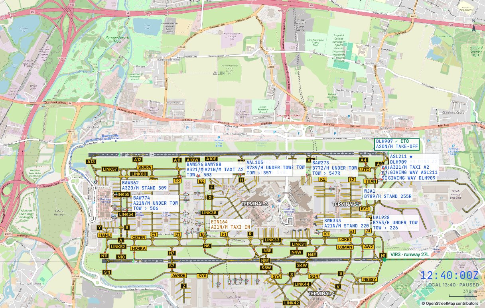
LIVE · EGLL TOWER
New airport
London Heathrow, the busiest two runways in Europe.
One runway lands, the other departs, and they swap at 15:00 every day so the towns under the approaches get a break. Four holding stacks at Bovingdon, Lambourne, Biggin and Ockham, CAT III ILS on all four runway ends, 24 SIDs that all stop at 6,000 ft, 252 stands at five terminals, and Terminal 5 departures taxiing the length of the airport while Terminal 4 arrivals cross the departure runway.
RWY 2 · parallelLength 3,902 mElev 83 ftApproach ILS CAT III
Arrivals land on runway 1 by the terminals while departures leave from runway 2, beyond it: every departure crosses the landing runway on its way out, between the arrivals. ILS approaches from the ROSUN, MIRSI and DAYNE holds, 20 SIDs on eight routes that all stop at 5,000 ft, the Pennines to the east and Scottish Control above.
Bristol sits on Broadfield Down, 622 ft up in the hills south of the city: one runway, 09/27, with taxiway Zulu along its north side and three aprons by the terminal. Arrivals come off six STARs to the BRI hold over the field and onto the ILS; departures fly conventional SIDs that all stop at 6,000 ft. Fit the departures between the landings, and watch for the hill fog.
RWY 1 · 09/27Length 2,011 mElev 622 ftApproach ILS
Belfast International (Aldergrove) and Belfast City sit 14 miles apart and share one approach. There are no SIDs or STARs: arrivals from Great Britain and Europe cross Belfast Lough and are vectored onto short finals, and departures leave by airway. You work both airfields at once, with the BEL, HB and MAGEE holds, and a runway of your own choosing at each.
RWY 07/25 · 04/22Elev 268 ft · 15 ftApproach ILS · RNP
Two parallel landing runways and two parallel take-off runways, all in use together. Independent ILS approaches to 32L and 32R, departures off 36L and 36R on 32 RNAV SIDs, a north and a south flow, arrivals crossing 18R/36L between Terminals 4 and 4S, and every holding point from the chart.
RWY 4 · two pairsLongest 4,179 mElev 1,998 ftApproach ILS
London Gatwick, the world’s busiest single runway.
Arrivals and departures share runway 08R/26L, so every take-off has to fit between two landings. The old 08L/26R is now part of taxiway Juliett. ILS approaches from the TIMBA and WILLO holds, twelve RNAV departures each with its own stop altitude, every holding point and hot spot from the chart, and the North and South Terminals.
Two pairs of parallel runways with the terminals in the middle. In the usual south-west flow arrivals land 22L and departures leave from 22R, so almost every arrival crosses the departure runway on its way to the gate. ILS approaches from the CAMRN, PARCH, PAWLN and PUCKY arrivals, the Kennedy Five departure, calls for release on the busy routes to Boston and Washington, and FAA phraseology throughout.
Two parallel runways and a crossing third, with the terminals between them. In the northerly flow the short runway 34R lands and the long 34L departs, taxiing aircraft cross the others on the way, and the curfew closes the airport at 23:00. ILS approaches from the Mepil, Boree, Rivet, Akmir and Marlin arrivals, RNAV SIDs to 5,000 ft, and every bay from the AIP apron charts.
A 2,000 m runway in the Inn valley with peaks over 2,000 m on both sides. Arrivals come down the valley from the east on the offset LOC/DME East, with no glidepath. Departures leave the other way, towards them. Föhn gales over the Brenner bring turbulence and go-arounds, and with an easterly wind the approach ends in a circling to runway 08.
RWY 08/26Length 2,000 mElev 1,907 ftApproach LOC/DME East
A single 1,508 m runway between two docks, six miles from the Bank of England. The ILS glidepath is 5.5°, almost twice the usual angle, so only steep-approach approved types come in. Every departure squeezes under the Heathrow and Stansted traffic at 3,000 ft and needs a release from London Control before it rolls.
RWY 09/27Length 1,508 mElev 20 ftApproach ILS 5.5°
Runway 05/23 sits on columns over the sea at the foot of the island’s cliffs. There is no straight-in approach to 05: arrivals circle past Rosário onto a short final, and when the wind at either anemometer goes over the published limits, the airport stops and the hold at PILIM fills up.
RWY 05/23LDA 2,481 mElev 191 ftApproach VOR circling
Winston Churchill Avenue runs across the middle of runway 09/27. You close it to traffic for every movement. The levanter curls off the Rock onto final, and Spanish restricted airspace starts at the frontier fence a few hundred metres from the threshold.
Each airport comes with a written briefing and guided exercises. A coach card on the scope tells you what the crew wants and which command does it, then moves on once you have done it.
Read the briefingAerodrome, procedures, weather and phraseology, in the order you meet them on shift.
Earn the endorsementsA core course for every airport, then three guided exercises at each one: a departure, an arrival, and the weather it is known for.
Take a full sessionPick any day and hour from the timetable, or Live now, and run the rest of the day. Every session goes into your career logbook.
Take the frequency at Gibraltar, Madeira, London City, Innsbruck, New York JFK, London Gatwick, Madrid-Barajas, Manchester, London Heathrow or Bristol.
Nothing to download. Open the position in your browser on a computer, tablet or phone, pick the weather and start working traffic.
Every session you work, at every airport, is logged here: time on frequency, movements, your score and the badges you have earned. It is kept in this browser only, so it stays private to you and this device.
A 1,798 m runway between the Rock and the Spanish frontier, with a public road across the middle. You work Gibraltar Radar and Gibraltar Tower combined, from 50 NM out to the stand.
Radar 122.800Tower 131.200TACAN GBR 83XTA 6000 ftAIRAC UK Mil AIP AD 2
Built from the published charts, not from guesswork.
The aerodrome, approaches and rules come from the UK Military AIP for LXGB: the aerodrome, taxi and ramp charts, the arrival and SRA charts, and the special procedures pages. The taxiway, apron and stand layout follows OpenStreetMap, checked against the aerodrome chart, and the map underneath is the OpenStreetMap street map.
The road across the runway
Winston Churchill Avenue crosses at mid-runway. Close it to walkers by 15 NM and to traffic by 10 NM, wait out the 2½-minute clearance and FOD check, then reopen it once the runway is clear. The queue builds while you wait.
Special Procedures (2) §3
The levanter and the lee of the Rock
Winds from 110° to 250° above the published speeds bring turbulence and windshear on final. South-westerlies above 25 kt can spawn waterspouts on the runway 27 approach. Crews go around, hold, then divert.
Special Procedures (1), B3 wind effect
Surveillance radar approaches
Runway 27 is a straight-in SRA to Point Yankee. Runway 09 joins at RIPRA, tracks 359° to Point X-Ray and makes a descending right turn onto the runway. Minima are 5 km and 1,000 ft, and there is no ILS.
Charts K1, K2 · SP (2) §6–8
Taxi routes that follow the chart
Taxiways A, B, C, D and E are laid out to scale with curved lead-ins, holding points, runway guard lights, hot spot HS1, five civil stands and the north and south remote stands. Runway 27 departures normally line up at Echo, near the eastern turning circle.
Charts D1, E1, F1 · AD 2.8–2.9 · OpenStreetMap
Airspace with no margin
R164, Spanish restricted airspace from the surface to FL300, starts at the frontier just north of the runway. The Rock rises to 1,398 ft south of the field and overflight is prohibited. Missed approaches and departures turn south, away from both.
Chart D1 · K-series
Phraseology and voices
Every instruction is read back in standard UK phraseology with airline telephony: Speedbird, Easy, Royal Air Maroc, Ascot. Turn on voice and the R/T plays aloud, with a different voice for each crew.
CAP 413 style R/T
Three positions, one console
From 50 NM out to the stand.
Gibraltar Radar and Gibraltar Tower are combined on one position. One map does it all: scroll out for the approach radar picture, scroll in for the runway and the stands. Every aircraft is the same object at every zoom.
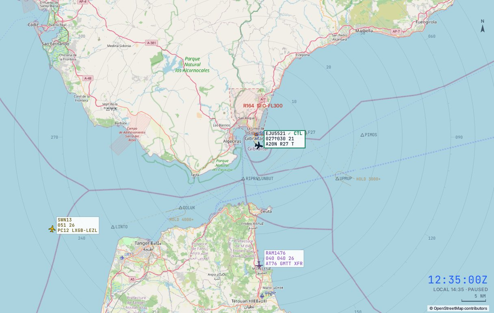
GIBRALTAR RADAR · 122.8
Approach and departure
Arrivals call at 50 NM via PIMOS, LINTO or Tetouan. Descend them, hold them at UPMUP or ODLUK, vector them into the SRA and keep them 3 NM or 1,000 ft apart. Route departures out and hand them to Sevilla or Casablanca.
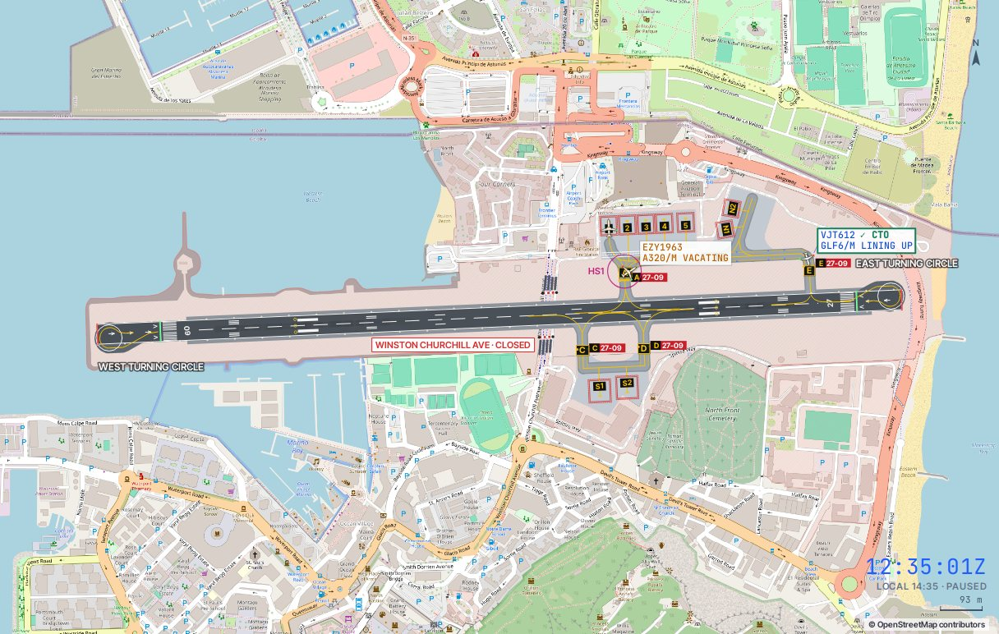
GIBRALTAR TOWER · 131.2
Tower
Clear arrivals to land once the road is shut. Line departures up and backtrack them along the runway to the turning circles, since nothing over 17 tonnes may turn on the runway itself. Then clear them for take-off.
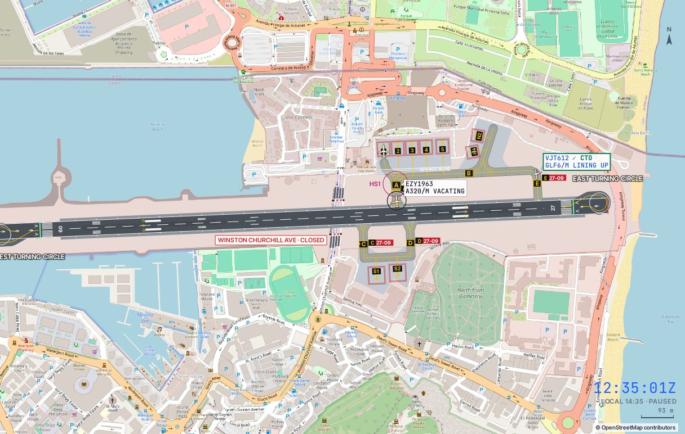
GROUND MOVEMENT · ON TOWER
Ground
Approve start-up and push, taxi to the holding points with real routings, hold aircraft in position and sequence them around the HS1 hot spot. At night the edge lights, guard lights and floodlit apron are all drawn.
Live now at Gibraltar
Work today’s real traffic at LXGB.
Pick Live now in the session setup and the position opens at the current time with Gibraltar’s real flights, live aircraft positions and the current METAR. The timetable sessions are still there when you want to choose your own day and hour.
Today’s real scheduleGibraltar Airport’s own arrivals and departures, refreshed every 15 minutes, with their real expected times and delays. Each arrival turns round into its real return leg.
Aircraft in the air right nowLive ADS-B positions from the adsb.lol and adsb.fi networks. When a real Gibraltar inbound comes within range, it becomes your flight to bring in.
The weather outsideThe live LXGB METAR sets the runway and the ATIS. A new report mid-session flashes the ATIS warning, just as it would on shift.
Weather scenarios
Pick the weather you want to work.
Each scenario is a METAR the simulation reads for wind, visibility, cloud and QNH. You can also switch on Live METAR to use the current LXGB report, or paste one yourself.
Sources and accuracy
What is real and what is modelled.
Procedures, fixes, frequencies, runway data and the aerodrome layout come from the UK Mil AIP AD 2 LXGB (AIRAC 07/25 to 05/26 pages). The airline timetable is a representative week. In Live now sessions the flights come from Gibraltar Airport’s live flight information and aircraft positions from the adsb.lol and adsb.fi ADS-B networks; once a flight is yours it follows your instructions, not its real track. The aerodrome layout follows OpenStreetMap, and en-route tracks between airports are approximate. The R164 northern boundary, the outline of the Rock and the post-departure headings are approximations. This is a training game and is not for real-world navigation. It is not affiliated with the RAF, the Gibraltar Government or any airline.
AD 2.2–2.13Runway 09/27 dimensions, true bearings, threshold coordinates, declared distances, taxiway widths and guard lights.
D1 · E1 · F1Aerodrome, taxi and ramp charts: taxiways, holding points, HS1, aprons, stands and buildings.
OpenStreetMapTaxiway, apron and stand geometry, and the street map under the scope.
Live nowGibraltar Airport live flight information; live aircraft positions from adsb.lol and adsb.fi.
H1 · K1 · K2Civil arrivals and the runway 09 and 27 SRA procedures: PIMOS, UPMUP, RIPRA, ODLUK, Points X-Ray and Yankee.
GSHHGFull-resolution shoreline for the Strait, Spain and Morocco.
LPMAFNCOpen nowNew
Madeira Cristiano Ronaldo
A runway built out over the sea on 180 columns, between the cliffs of the island and the Atlantic. You work Madeira Approach and Madeira Tower combined, from the TMA boundary to the stand, with wind limits that can close the airport in minutes.
Approach 119.605Tower 124.660DVOR FUN 112.2TA 5000 ftAIRAC AIP Portugal AD 2
9,000 ftMinimum vectoring altitude over the island
What makes it Madeira
Built from the Portuguese AIP charts.
The aerodrome, SIDs, STARs, approaches and wind limits come from AIP Portugal AD 2 LPMA: the aerodrome and parking charts, the SID and STAR charts, the VOR and RNP approach charts and the visual approach chart. The taxiway, apron and stand layout follows OpenStreetMap, checked against the aerodrome chart.
Wind limits that close the runway
The mean wind or gust at either anemometer, MID or Rosário, sets what is allowed. A northerly above 15 kt or gusting 25, or a north-easterly above 20 kt, and crews refuse to land. Arrivals hold at PILIM, then divert to Porto Santo.
Wind rose on every approach chart · AD 2.20
The Rosário circuit
Runway 05 has no straight-in approach. The VOR approach comes down 211° to the missed approach point, then turns right past the GELO point (not below 850 ft) and Rosário (not below 460 ft) onto a short final over the sea. In low cloud, clear the RNP AR approaches instead: published arcs round the coast with a 910 ft decision altitude.
DVOR/DME circling RWY 05 · RNP Y and Z RWY 05 · visual approach chart
An island in the way
The ground rises to over 1,800 m a few miles from the runway. The minimum vectoring altitude over the island is 9,000 ft, and runway 05 departures turn right as soon as practicable, away from the high ground.
AD 2.24.11 radar vectoring chart · SIDs
RNAV SIDs and STARs
Departures fly DEGUN, LAPPA, GALOZ, GOSGA, MARCU or NIDUL 1E off runway 05 and 1W off 23. Arrivals come in on the LIDRO, KICAS, IBBAN and EKNOT 1P STARs to the PILIM hold, and leave or join Lisboa Control on 132.255.
AD 2.24.08 · AD 2.24.10
One apron, two exits, backtracks
Taxiways Bravo and Charlie join the runway to taxilane Alpha along apron A, with stands A1 to A18. There is no parallel taxiway, so departures backtrack to the turn pads at either end before take-off.
AD 2.24.01 · 2.24.02 · OpenStreetMap
Lisboa releases and handoffs
Every departure needs a release from Lisboa Control on the landline before take-off, and you hand it on to Lisboa once it is established on its SID. Crews speak with TAP, Binter, Azores Airlines, Jet2 and easyJet telephony.
AIP Portugal ENR · simulator procedure
Two positions, one console
From the TMA boundary to stand A18.
Madeira Approach and Madeira Tower are combined on one position. Scroll out for the TMA and Porto Santo, and scroll in for the runway on its columns, the apron and the stands.
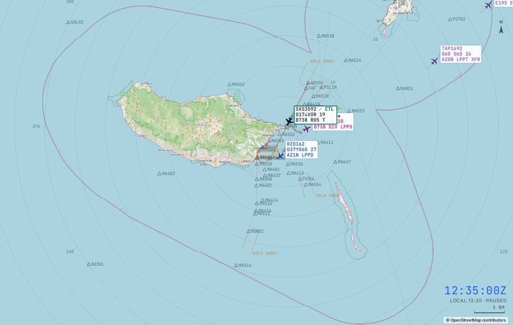
MADEIRA APPROACH · 119.605
Approach and departure
Arrivals call on their STAR towards PILIM. Descend them, hold them when the wind is over the limits, and clear the VOR approach. Keep departures on their SIDs, away from the island, and hand them to Lisboa.
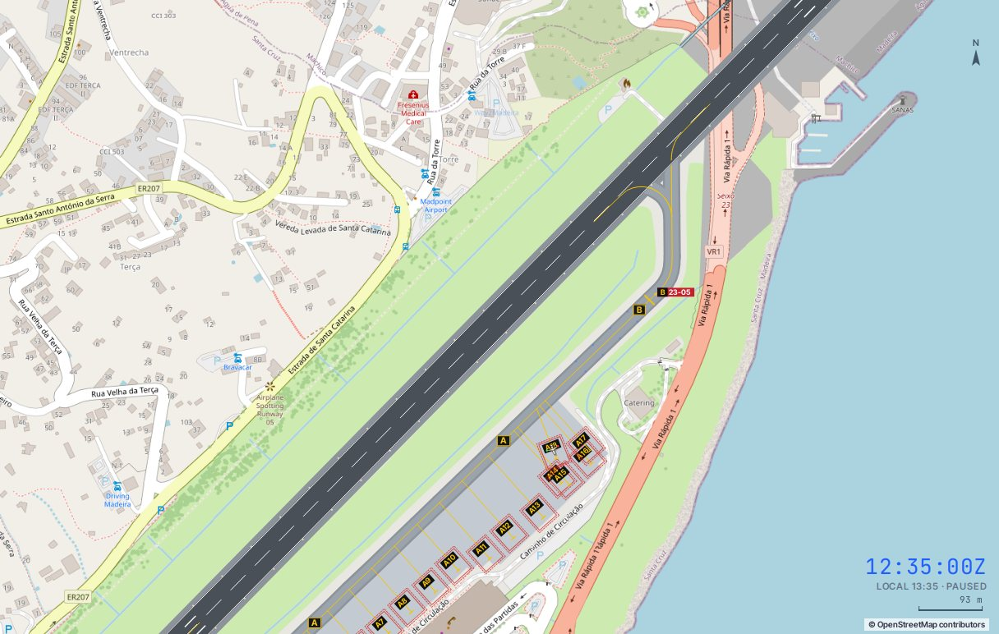
MADEIRA TOWER · 124.660
Tower
Check the anemometers before every clearance. Clear arrivals to land as they come round Rosário, and backtrack departures to the turn pad before you clear them for take-off.
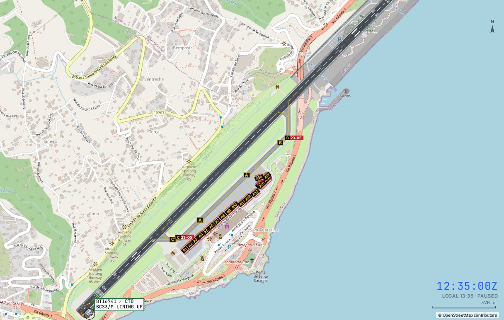
GROUND MOVEMENT · ON TOWER
Ground
Approve start-up and push onto taxilane Alpha, then taxi departures to Charlie for runway 05 or Bravo for 23. Arrivals vacate at the same two taxiways and taxi to their stand on apron A.
Live now at Madeira
Work today’s real traffic at LPMA.
Pick Live now in the session setup and the position opens at the current time with Madeira’s real flights, live aircraft positions and the current METAR. The timetable sessions are still there when you want to choose your own day and hour.
Today’s real scheduleMadeira Airport’s own arrivals and departures from ANA, refreshed every 15 minutes, with their real expected times and delays.
Aircraft in the air right nowLive ADS-B positions from the adsb.lol and adsb.fi networks. When a real Madeira inbound comes within range, it becomes your flight.
The weather outsideThe live LPMA METAR sets the runway, the ATIS and whether the wind limits are exceeded.
Weather scenarios
Pick the weather you want to work.
Each scenario is a METAR the simulation reads for wind, visibility, cloud and QNH. You can also switch on Live METAR to use the current LPMA report, or paste one yourself.
Sources and accuracy
What is real and what is modelled.
Procedures, fixes, frequencies, runway data, stands and wind limits come from AIP Portugal AD 2 LPMA. The airline timetable is a representative week. In Live now sessions the flights come from Madeira Airport’s live flight information (ANA) and aircraft positions from the adsb.lol and adsb.fi networks; once a flight is yours it follows your instructions, not its real track. The aerodrome layout and coastline follow OpenStreetMap. The MID and Rosário anemometer readings are derived from the METAR wind, every crew is approved for the RNP AR approaches, and the take-off headings are simplified. This is a training game and is not for real-world navigation. It is not affiliated with NAV Portugal, ANA or any airline.
AD 2.24.01–04Aerodrome, parking and docking charts: runway 05/23, taxiways A, B and C, stands A1–A18.
AD 2.24.08RNAV SIDs off runways 05 and 23, with the right turn off 05.
AD 2.24.10RNAV STARs to PILIM and MONEC.
AD 2.24.12–13DVOR/DME circling approaches to 05 and 23, the RNP AR approaches (RNP Y and Z 05, RNP 23) with their coding tables, the visual approach via GELO and Rosário, and the wind limit roses.
AD 2.24.11Radar vectoring chart: TMA Madeira and the 9,000 ft sector over the island.
OpenStreetMapTaxiway, apron and stand geometry, the coastline and the street map under the scope.
Live nowANA live flight information; live aircraft positions from adsb.lol and adsb.fi.
EGLCLCYOpen nowNew
London City
A single runway on the old Royal Docks, with water on both sides and Canary Wharf two miles off the end. You work Thames Director and City Tower combined, from the holds over Essex and Kent to the stand, under the busiest airspace in Europe.
Thames Director 132.700City Tower 118.080ILS 5.5°TA 6000 ftAIRAC UK AIP AD 2 EGLC
1,508 mRunway 09/27 × 30 m, arrestor beds at both ends
5.5°ILS glidepath, both runways: steep-approach types only
20 ftAerodrome elevation, between two docks
3,000 ftEvery SID stops here, under the Heathrow and Stansted flows
771 ftOne Canada Square, 2.4 NM west of the runway
Sat pmClosed from Saturday 12:30 to Sunday 12:30 local
What makes it London City
Built from the UK AIP charts.
The aerodrome, SIDs, STARs, transitions, holds and ILS approaches come from the 36 London City charts in UK AIP AD 2 EGLC: the aerodrome and parking charts, the airspace chart, the RNAV SID and STAR charts, the transition and holding charts and the ILS/DME and RNP approach charts. The taxiway, apron and stand layout follows OpenStreetMap, checked against the aerodrome and parking charts.
The 5.5° approach
Both ILS glidepaths are 5.5°, nearly twice the usual angle. Aircraft join the localiser at 3,000 ft for 27 or 2,000 ft for 09 and come down at about 1,200 ft a minute. Clear them to land before the four-mile check, where the crew looks at the weather against the approach ban.
ILS/DME RWY 09 and 27 · AD 2-EGLC-8-1 to 8-6
Canary Wharf off the end
The towers of the Isle of Dogs rise to 771 ft just west of the runway. Runway 09 arrivals pass them on a short final from the ODLEG transition, and below 1,200 ft over them is an obstacle incident. Central London's R160 sits beyond.
AD 2-EGLC-5-1 airspace chart · obstacles
RNAV SIDs capped at 3,000 ft
BPK, SAXBI, SOQQA and ODUKU, 1A off runway 27 and 1H off 09. Every one climbs straight ahead (no turn below 1,102 ft off 27, 570 ft off 09) and levels at 3,000 ft, tucked under the Heathrow and Stansted traffic until London Control climbs it.
AD 2-EGLC-6-1 to 6-8
JACKO, GODLU and the transitions
London Control brings arrivals down their STARs to the JACKO hold over Essex or GODLU over Kent. From there Thames takes them along the LAVNO transition up the estuary to the runway 27 final, or the ODLEG transition round the south of the city to runway 09.
STARs 7-1 to 7-14 · transitions 7-15 to 7-18 · holds 7-19
Taxiway T and nine links
Taxiway T runs the length of the airport between the runway and the aprons. Links A to F and K, L and M join it to the runway, most as a pair of curved exits, one for each direction. Departures use Alpha or Mike at the ends, so nobody backtracks. Stands 3 to 15 and 21 to 28 are all nose-in.
AD 2-EGLC-2-1 · 2-2 · OpenStreetMap
Releases from London Control
Every departure needs a release from London Control on the landline before it rolls, and you hand it on once it is on its SID. City Tower is a remote digital tower: the controllers sit at Swanwick and watch the runway through cameras on a mast by the King George V Dock.
Simulator procedure · UK AIP ENR
Two positions, one console
From the JACKO hold to stand 28.
Thames Director and City Tower are combined on one position. Scroll out for the London TMA, the holds and the estuary, and scroll in for the runway between the docks, taxiway T and the stands.
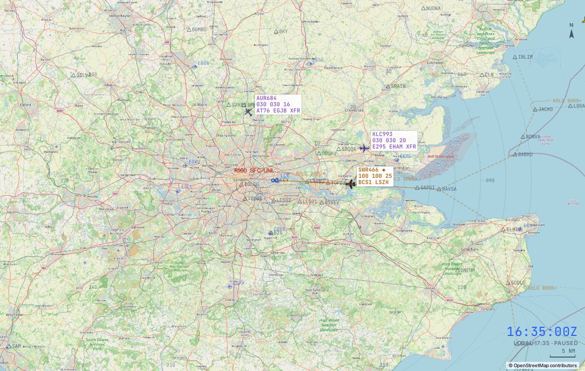
THAMES DIRECTOR · 132.700
Approach and departure
Arrivals call on their STAR towards JACKO or GODLU. Descend them, hold them when the weather is below the ILS minima, and clear the approach. Keep departures at 3,000 ft on their SIDs and hand them to London Control.
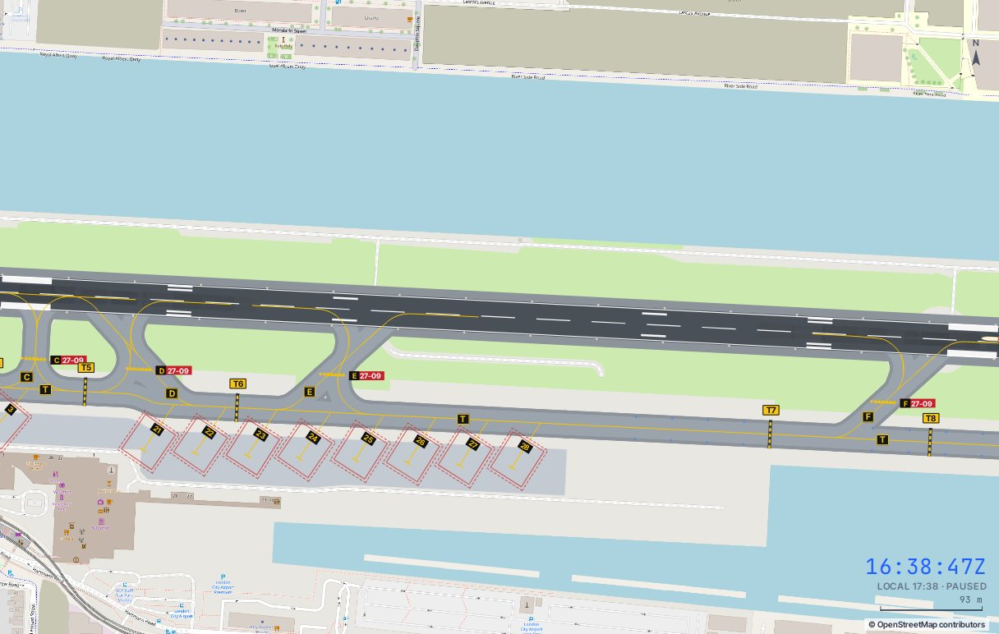
CITY TOWER · 118.080
Tower
Clear arrivals to land before four miles, get each departure's release from London, and line them up at Alpha or Mike for a full-length take-off.
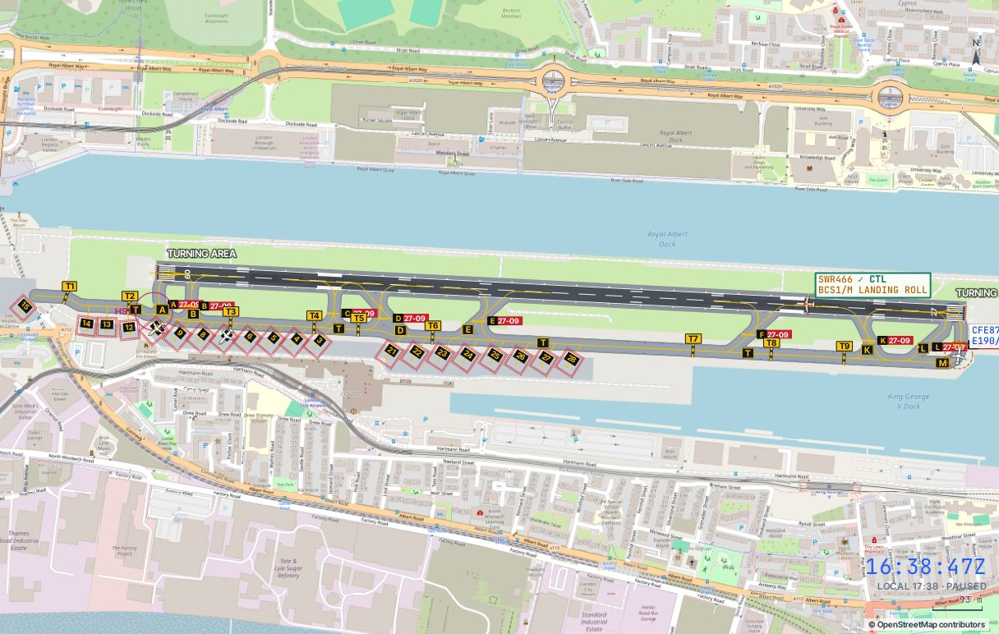
CITY GROUND · 121.830
Ground
Approve start-up and push onto taxiway T, then taxi departures to Mike for runway 27 or Alpha for 09. Arrivals vacate at the first exit ahead and taxi along T to their stand.
Live now at London City
Work today’s real traffic at EGLC.
Pick Live now in the session setup and the position opens at the current time with London City’s real flights, live aircraft positions round London and the current METAR. The timetable sessions are still there when you want to choose your own day and hour.
Today’s real scheduleLondon City’s arrivals and departures for the next few hours, from avionio’s public LCY boards, refreshed every 15 minutes with their expected times.
Aircraft in the air right nowLive ADS-B positions from the adsb.lol and adsb.fi networks. When a real London City inbound comes within range, it becomes your flight.
The weather outsideThe live EGLC METAR sets the runway, the ATIS and whether the approach ban applies.
Weather scenarios
Pick the weather you want to work.
Each scenario is a METAR the simulation reads for wind, visibility, cloud and QNH. You can also switch on Live METAR to use the current EGLC report, or paste one yourself.
Sources and accuracy
What is real and what is modelled.
Procedures, fixes, holds, frequencies, runway data and stands come from UK AIP AD 2 EGLC. The SID coding page AD 2-EGLC-6-6 was not in the chart set, so the SID tracks follow the SID charts themselves. London Control frequencies are representative. The airline timetable is a representative summer week that respects the weekend closure. In Live now sessions the flights come from avionio’s public London City arrivals and departures boards (the airport’s own site refuses automated requests) and aircraft positions from the adsb.lol and adsb.fi networks; once a flight is yours it follows your instructions, not its real track. The aerodrome layout follows OpenStreetMap, and the coast and the Thames follow Natural Earth and OpenStreetMap. Every crew is approved for the steep approach. This is a training game and is not for real-world navigation. It is not affiliated with NATS, London City Airport or any airline.
AD 2-EGLC-2-1, 2-2Aerodrome and parking charts: runway 09/27, taxiway T and links A–M, stands 3–15 and 21–28, hot spot HS1.
AD 2-EGLC-5-1Airspace: the London CTR and TMA, R157–R160 over central London.
AD 2-EGLC-6-1 to 6-8RNAV SIDs BPK, SAXBI, SOQQA and ODUKU 1A and 1H.
AD 2-EGLC-7-1 to 7-19RNAV STARs to JACKO and GODLU, the LAVNO and ODLEG transitions and the holds.
AD 2-EGLC-8-1 to 8-6ILS/DME and RNP approaches to runways 09 and 27, 5.5° glidepath, and the missed approaches to the LCY NDB.
OpenStreetMapTaxiway, apron and stand geometry, the docks, the Thames and the street map under the scope.
Live nowLondon City flights from avionio.com; live aircraft positions from adsb.lol and adsb.fi.
KJFKJFKOpen nowNew
New York JFK
John F. Kennedy International, on the shore of Jamaica Bay in Queens. Four runways in two parallel pairs surround the terminals, so arrivals cross a runway in use on their way to the gate. You work New York Approach, Kennedy Tower and Kennedy Ground combined, from the four arrival gates to the gate and back out on the Kennedy Five.
14,511 ftRunway 13R/31L, one of the longest commercial runways in North America
13 ftAerodrome elevation, at the edge of Jamaica Bay
22L / 22RThe usual south-west flow: land 22L, depart 22R
18,000 ftTransition altitude: flight levels only above it, altimeter in inches
APREQCalls for release only on flow-restricted routes, such as Boston and Washington
What makes it Kennedy
Built from the FAA charts.
The runways, arrivals, departures, holds and approaches come from the FAA's terminal procedures for KJFK: the airport diagram, the hot spot page, the Kennedy Five, SKORR and DEEZZ departures, the CAMRN, PARCH, PAWLN and PUCKY arrivals and the ILS plates for every runway. Fix positions come from the FAA's coded instrument flight procedures. The taxiway, gate and building layout follows OpenStreetMap, checked against the airport diagram.
Four runways, two pairs
4L/22R and 4R/22L run north-east, 13L/31R and 13R/31L run south-east. The wind picks the configuration: land 22L and depart 22R, land 4R and depart 4L, land 31R and depart 31L, or land 13L and depart 13R. The ATIS panel has separate landing and departure runway selectors.
Airport diagram · ATIS
Runway crossings
In the south-west and north-east flows the arrival runway, 22L or 4R, lies on the far side of the departure runway from the terminals. Every arrival stops at the hold-short line of 22R or 4L on its way in and waits for you to say "cross runway two two right".
Hot spots · FAA NE-1
The Kennedy Five
Most departures fly the conventional Kennedy Five: radar vectors from an initial heading by runway, 224 off 22R, 099 off 4L, the Breezy Point climb off 31L, and maintain 5,000 ft. The RNAV SKORR departure takes south-west traffic off 31L, and the DEEZZ departure westbound traffic off 4L, 4R and 31L.
KENNEDY FIVE · SKORR SIX · DEEZZ SIX
Four arrival gates
Arrivals come in on the CAMRN Five from the south over the ocean, the PARCH Four along Long Island from Europe and New England, the PAWLN One from the north and the PUCKY One from the west. New York Approach vectors them onto the ILS: 22L joins at ROSLY, 4R at ZETAL, 31R at CATOD.
CAMRN5 · PARCH4 · PAWLN1 · PUCKY1 · ILS plates
Calls for release
Unlike the European airports, most Kennedy departures go without a release. Flights on the short, busy routes to Boston, Washington, Philadelphia and upstate New York are under an Approval Request: they need New York Center's release before take-off.
Approval Request (APREQ) routes
FAA phraseology
"Climb and maintain", "line up and wait", "altimeter two niner niner seven", the wind before the landing clearance, taxi routes that name the runway first, and every hold-short read back. Feet and inches of mercury throughout, and flight levels only above 18,000 ft.
FAA JO 7110.65
Three positions, one console
From the arrival gates to the ramp.
New York Approach, Kennedy Tower and Kennedy Ground are combined on one position. Scroll out for the New York area, from Newark and LaGuardia to Long Island, and scroll in for the four runways, the taxiways and the gates.
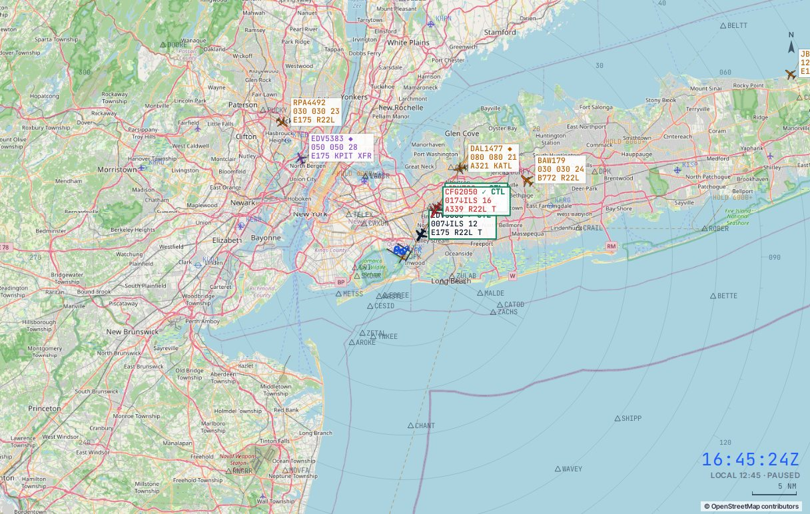
NEW YORK APPROACH · 128.125
Approach and departure
Arrivals check in on their arrival. Descend them, keep three miles between them on final, and clear the ILS. Departures check in with New York Departure on 135.9 climbing to 5,000 ft: climb them and hand them to New York Center.
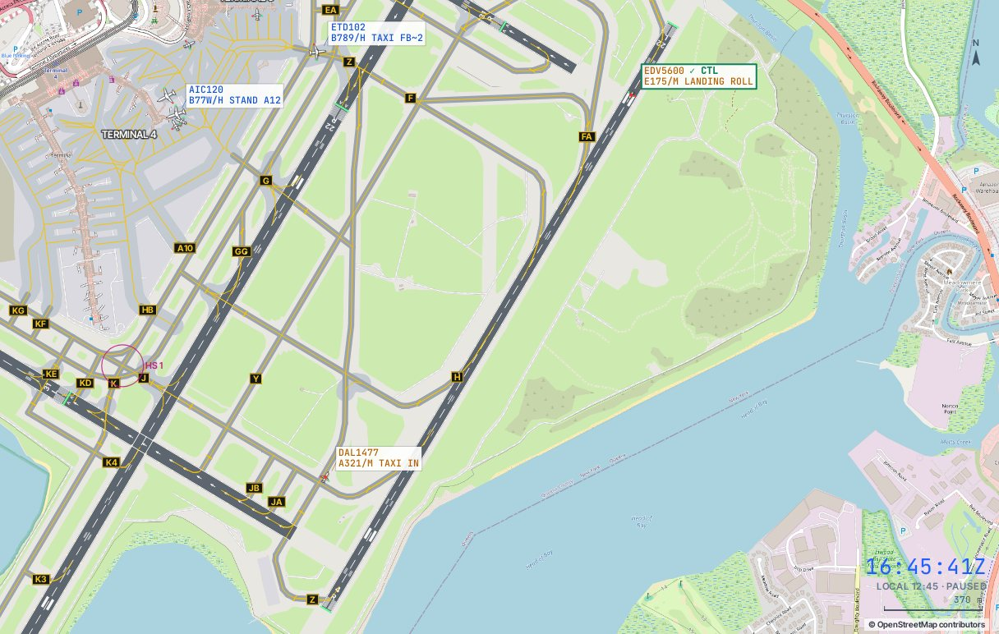
KENNEDY TOWER · 119.1 / 123.9
Tower
Clear arrivals to land on one runway and departures off the other. 119.1 works 4R/22L and 13L/31R, 123.9 works 4L/22R and 13R/31L. Cross arrivals over the departure runway between take-offs.
KENNEDY GROUND · 121.9
Ground
Clear each departure with its route and push it off the gate, then taxi it to the departure end of the runway by the taxiways in order. Arrivals turn off on high-speed exits and taxi to their airline's terminal: 1, 4, 5, 7 or 8.
Live now at New York JFK
Work today’s real traffic at KJFK.
Pick Live now in the session setup and the position opens at the current time with Kennedy's real flights, live aircraft positions over New York and the current METAR. Kennedy handles well over a thousand movements a day, so Live now thins the real schedule to about twenty an hour; Live now plus extra traffic gives you all of it.
Today’s real scheduleKennedy's arrivals and departures for the next few hours, from avionio’s public JFK boards, refreshed every 15 minutes with their expected times.
Aircraft in the air right nowLive ADS-B positions from the adsb.lol and adsb.fi networks. When a real Kennedy inbound comes within range, it becomes your flight.
The weather outsideThe live KJFK METAR sets the runway configuration, the ATIS and the altimeter.
Weather scenarios
Pick the weather you want to work.
Each scenario is a METAR the simulation reads for wind, visibility in statute miles, cloud and the altimeter. You can also switch on Live METAR to use the current KJFK report, or paste one yourself.
Sources and accuracy
What is real and what is modelled.
Runways, procedures, fixes, holds and the Kennedy and New York Approach frequencies come from the FAA's terminal procedures and coded procedure data for KJFK. New York Approach really vectors almost every arrival onto final; the simulator lays out a downwind and base leg for each runway so that an arrival with no instructions still gets there. Runway 13R has no ILS (its approaches are the VOR and the Parkway Visual), so in the south-east flow the simulator lands 13L and departs 13R. The New York Center frequencies and the release times are representative. Gate numbers follow OpenStreetMap, and airlines use their usual terminals. Kennedy's traffic is thinned to about twenty movements an hour in timetable sessions. In Live now sessions the flights come from avionio’s public JFK arrivals and departures boards and aircraft positions from the adsb.lol and adsb.fi networks; once a flight is yours it follows your instructions, not its real track. This is a training game and is not for real-world navigation. It is not affiliated with the FAA, the Port Authority of New York and New Jersey or any airline.
Airport diagram, hot spotsRunways 4L/22R, 4R/22L, 13L/31R and 13R/31L, the taxiways and hot spot HS 1.
KENNEDY FIVEInitial headings by runway, the Breezy Point, Canarsie and Idlewild climbs, 5,000 ft.
SKORR SIX, DEEZZ SIXThe RNAV departures to the south-west and west.
CAMRN FIVE, PARCH FOUR, PAWLN ONE, PUCKY ONEThe four arrival gates, their expect altitudes and holds.
ILS or LOC 4L, 4R, 13L, 22L, 22R, 31L, 31RIntermediate and final approach fixes, glideslope altitudes and missed approaches.
FAA CIFPFix and navaid positions.
OpenStreetMapTaxiway, apron, gate and building geometry, the coastline and the street map under the scope.
Live nowKennedy flights from avionio.com; live aircraft positions from adsb.lol and adsb.fi.
YSSYSYDOpen nowNew
Sydney Kingsford Smith
Australia's busiest airport, on the north shore of Botany Bay. Two parallel runways run north-south beside the terminals and a third, 07/25, crosses both near the south end of the apron. The long runway takes the departures and the short one the landings, so the heavy jets have the room they need. You work Sydney Approach, Tower and Ground combined, from the five arrival gates to the bay and back out on the RNAV departures.
3,962 mRunway 16R/34L, the longest, for the heavy departures
21 ftAerodrome elevation, on the shore of Botany Bay
34R / 34LThe northerly flow: land the short runway 34R, depart the long one 34L
10,000 ftTransition altitude: flight levels above it, QNH in hectopascals
23:00The curfew: no movements between 23:00 and 06:00 local, so sessions run from 06:00 to 22:00
What makes it Sydney
Built from the Airservices charts.
The runways, arrivals, departures, holds and approaches come from the Airservices Australia AIP: the aerodrome and ground movement charts, the apron charts for every bay, the SIDs and STARs, and the ILS plates for every runway. Fix positions come from the ERSA IFR waypoint list. The taxiway, apron and building layout follows OpenStreetMap, checked against the ground movement chart.
Three runways
16L/34R and 16R/34L run north-south, 07/25 runs east-west across them. The wind picks the configuration: in the northerly flow land 34R and depart 34L, in the southerly flow land 16L and depart 16R, and in a strong easterly or westerly fly 07 or 25 alone. The ATIS panel has separate landing and departure runway selectors.
Aerodrome chart · ATIS
Runway crossings
Aircraft taxiing between the terminals and the ends of the runways meet 07/25 and the parallels on the way. Every runway in use is a hold-short line: the aircraft stops and waits for you to say "cross runway zero seven".
Ground movement chart
RNAV departures
Avmov One, Kevin Seven, Abbey Three, Olsem One, Stuie One, Grook Two and Tonto One fly the SIDs from each runway to their transition fixes, climbing to 5,000 ft. Where no RNAV SID serves the runway the departure flies Sydney Four, the radar departure, and climbs straight ahead to your vectors.
SIDs · Airservices DAP
Five arrival gates
Arrivals come in on the Mepil Four from the north, the Boree Five Alpha from the north-west, the Rivet Five from the west, the Akmir One from the south-west and the Marlin Six from the east over the sea. Sydney Approach vectors them onto the ILS: 34R joins at BOBIG, 34L at SOSIJ, 16L at TONUX, 16R at URDEN.
International flights use Terminal 1, Qantas and QantasLink domestic flights Terminal 3, and Virgin Australia, Jetstar and Rex Terminal 2. The bay numbers are the real ones from the AIP apron charts, and the aircraft size each bay takes is limited as it is on the chart.
Apron charts · OpenStreetMap
The curfew
Sydney closes from 23:00 to 06:00 local. A session runs from 06:00 to 22:00, with the first wave of night-stoppers pushing at six and the last arrivals landing before the curfew. Times are Sydney local time (UTC+11 in the summer).
AIP AD 2 · Sydney Airport Curfew Act
Three positions, one console
From the arrival gates to the bays.
Sydney Approach, Tower and Ground are combined on one position. Scroll out for the Sydney basin, from Newcastle to Wollongong, and scroll in for the three runways, the taxiways and the bays.
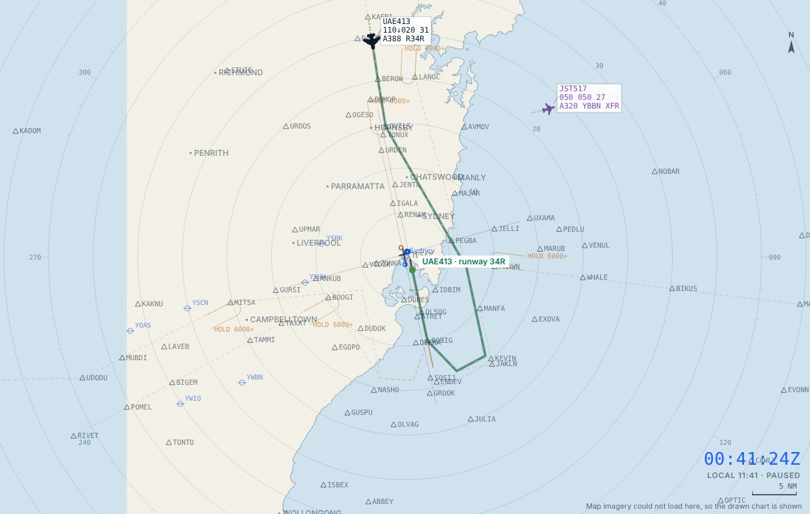
SYDNEY APPROACH · 124.4
Approach and departures
Arrivals check in on their STAR. Descend them, keep three miles between them on final, and clear the ILS. Departures check in with Sydney Departures on 123.0 climbing to 5,000 ft: climb them and hand them to Brisbane or Melbourne Centre.
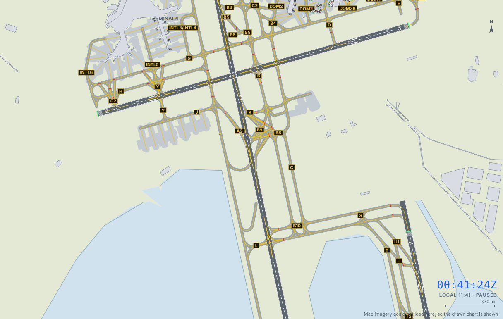
SYDNEY TOWER · 120.5 / 124.7
Tower
Clear arrivals to land on one runway and departures off the other. 120.5 works 16R/34L and 07/25, 124.7 works 16L/34R. Cross taxiing aircraft over the runways in use between movements.
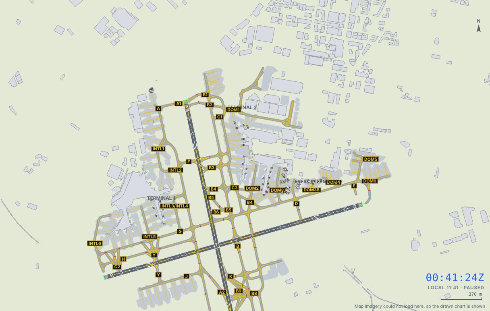
SYDNEY GROUND · 121.7
Ground
Clear each departure with its route and push it off the bay, then taxi it to the departure end of the runway by the taxiways in order. Arrivals turn off on the exits and taxi to their airline's terminal: 1, 2 or 3.
Live now at Sydney
Work today’s real traffic at YSSY.
Pick Live now in the session setup and the position opens at the current time with Sydney's real flights, live aircraft positions over the Sydney basin and the current METAR. Sydney handles more than a thousand movements a day, so Live now thins the real schedule to about twenty an hour; Live now plus extra traffic gives you all of it. Outside 06:00 to 22:00 local the airport is closed, so pick a start time inside the day.
Today’s real scheduleSydney's arrivals and departures for the next few hours, from avionio’s public SYD boards, refreshed every 15 minutes with their expected times.
Aircraft in the air right nowLive ADS-B positions from the adsb.lol and adsb.fi networks. When a real Sydney inbound comes within range, it becomes your flight.
The weather outsideThe live YSSY METAR sets the runway configuration, the ATIS and the QNH.
Weather scenarios
Pick the weather you want to work.
Each scenario is a METAR the simulation reads for wind, visibility, cloud and the QNH. You can also switch on Live METAR to use the current YSSY report, or paste one yourself.
Sources and accuracy
What is real and what is modelled.
Runways, procedures, fixes, holds, bays and the Sydney Approach, Tower and Ground frequencies come from the Airservices Australia AIP and the ERSA IFR waypoint list for YSSY. Sydney Approach really vectors almost every arrival onto final; the simulator lays out a downwind and base leg for each runway so that an arrival with no instructions still gets there. The Brisbane and Melbourne Centre frequencies, the Departures and Director sectors and the release times are representative. Bay numbers follow the AIP apron charts, and airlines use their usual terminals. Runway lengths come from OpenStreetMap and are a few metres off the published figures. The timetable traffic is representative, not a published schedule, and is thinned to about twenty movements an hour. In Live now sessions the flights come from avionio’s public SYD arrivals and departures boards and aircraft positions from the adsb.lol and adsb.fi networks.
Aerodrome and ground movement chartsRunways 07/25, 16L/34R and 16R/34L, the taxiways and holding points.
Apron chartsBay numbers and positions, and the largest aircraft each bay takes.
SIDsAvmov One, Kevin Seven, Abbey Three, Olsem One, Stuie One, Grook Two and Tonto One, with their transitions.
STARsMepil Four, Boree Five Alpha, Rivet Five, Akmir One and Marlin Six, with their expect altitudes and holds.
ILS charts for 07, 16L, 16R, 25, 34L and 34RIntermediate and final approach fixes, glideslope altitudes and missed approaches.
ERSA IFR waypointsFix positions.
OpenStreetMapTaxiway, apron, bay and building geometry, the coastline and the street map under the scope.
Live nowSydney flights from avionio.com; live aircraft positions from adsb.lol and adsb.fi.
EGKKLGWOpen nowNew
London Gatwick
The busiest single-runway airport in the world, in the Sussex Weald south of London. Arrivals and departures share runway 08R/26L, so every take-off has to fit between two landings. You work Gatwick Director, Gatwick Tower and Gatwick Ground combined, from the TIMBA and WILLO holds to the North and South Terminals and back out on the RNAV departures.
Gatwick Director 126.825Tower 124.230Ground 121.805TA 6000 ftCharts UK AIP
1Runway in use, 08R/26L, for arrivals and departures alike
3,316 mRunway 08R/26L, 45 m wide, with an ILS at each end
203 ftAerodrome elevation, in the Weald between Crawley and Horley
26LThe usual south-westerly: land and depart 26L
6,000 ftTransition altitude, under the London TMA
Taxiway JOld runway 08L/26R, now part of taxiway Juliett
What makes it Gatwick
Built from the UK AIP.
The runway, holding points, hot spots, arrivals, departures, holds and approaches come from the UK AIP charts for EGKK: the aerodrome and ground movement charts, the standard departure and arrival charts, the ILS plates for 08R and 26L and the initial approach procedures. The taxiway, stand and building layout follows OpenStreetMap, checked against the ground movement charts.
One runway, mixed mode
Every arrival and every departure uses 08R/26L. Space the arrivals on final with a gap for a departure between them, line the departure up as the arrival crosses the threshold and clear it the moment the runway is free.
AD 2.20 local traffic regulations
The old runway is a taxiway
08L/26R, the old standby runway north of the main one, is now part of taxiway Juliett. It is drawn as wide pavement with taxiway lights, nothing lands or departs on it, and aircraft taxi along it between the west end and the terminals.
Aerodrome chart
Holding points and hot spots
Every runway-holding position on the chart, Alfa 1 to Mike 1 and Juliett 1 to Golf 1, with its sign. Departures stop at the yellow lines until cleared to line up. Hot spots HS1 to HS4, round the rapid exits and taxiway Juliett, are marked on the ground map.
Ground movement charts · hot spots
RNAV departures
Twelve RNAV1 SIDs, each with its own stop altitude: the Midhurst departures to the west stop at 4,000 ft, the rest at 5,000 or 6,000. No release is needed: the SIDs are agreed with London Control in advance.
SID charts 08R and 26L
TIMBA and WILLO
Eight arrivals bring traffic to two holds at 7,000 ft: TIMBA to the south-east and WILLO to the south-west. Gatwick Director vectors them off the holds onto the ILS: 26L joins at OLEVI, 08R at ABIBI, both at 3,000 ft.
STAR charts · initial approach procedures
Two terminals
Airlines use their own terminal: British Airways, Emirates and most of easyJet at the North Terminal, Wizz, Norse, Vueling and the rest at the South. Remote stands between them are towed onto a terminal stand before departure.
Stands from OpenStreetMap
Three positions, one console
From the holds to the stand.
Gatwick Director, Gatwick Tower and Gatwick Ground are combined on one position. Scroll out for the south of England, from Heathrow and London City to the Sussex coast, and scroll in for the runway, the old runway now taxiway Juliett, and the stands.
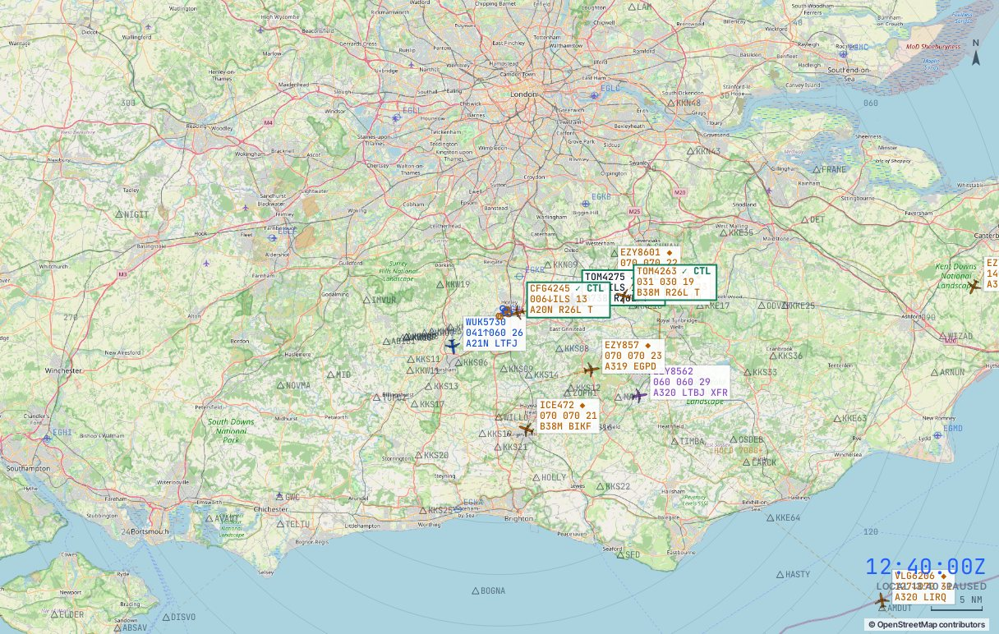
GATWICK DIRECTOR · 126.825
Approach
Arrivals check in on their STAR to TIMBA or WILLO. Descend them, keep the spacing on final with room for a departure in between, and clear the ILS. Departures go straight to London Control.
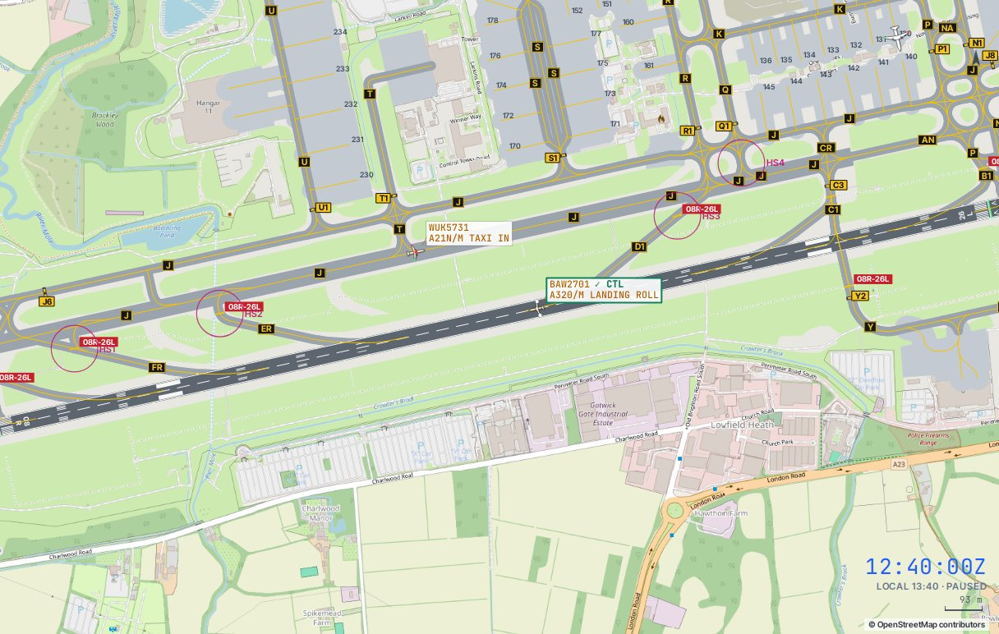
GATWICK TOWER · 124.230
Tower
Clear arrivals to land and departures to take off on the same runway. Line a departure up behind a landing aircraft, and clear it once the arrival has vacated by a rapid exit.
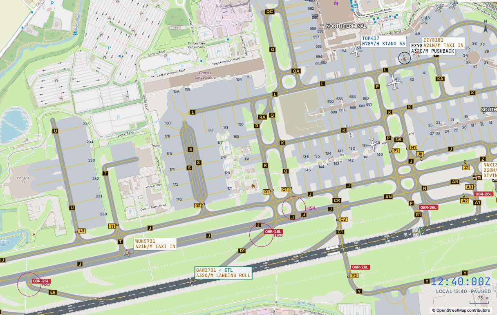
GATWICK GROUND · 121.805
Ground
Clear each departure with its SID and push it off the stand, then taxi it to the holding point. Arrivals stop clear of the runway and ask for taxi to a stand at their airline's terminal.
Live now at London Gatwick
Work today’s real traffic at EGKK.
Pick Live now in the session setup and the position opens at the current time with Gatwick's real flights, live aircraft positions over the south of England and the current METAR. Gatwick runs over fifty movements an hour at its peak, so Live now thins the real schedule; Live now plus extra traffic gives you all of it.
Today’s real scheduleGatwick's arrivals and departures for the next few hours, from avionio’s public LGW boards, refreshed every 15 minutes.
Aircraft in the air right nowLive ADS-B positions from the adsb.lol and adsb.fi networks. When a real Gatwick inbound comes within range, it becomes your flight.
The weather outsideThe live EGKK METAR sets the runway in use, the ATIS and the QNH.
Weather scenarios
Pick the weather you want to work.
Each scenario is a METAR the simulation reads for wind, visibility, cloud and QNH. You can also switch on Live METAR to use the current EGKK report, or paste one yourself.
Sources and accuracy
What is real and what is modelled.
The runway, holding points, hot spots, procedures, fixes, holds and the Gatwick frequencies come from the UK AIP charts for EGKK. Gatwick Director really vectors every arrival off the holds; the simulator lays out a downwind and base leg for each runway so that an arrival with no instructions still gets there. Old runway 08L/26R is modelled as taxiway Juliett only. The London Control frequencies are representative. Stand numbers follow OpenStreetMap, and airlines use their usual terminal. Gatwick's traffic is thinned in timetable sessions. In Live now sessions the flights come from avionio’s public LGW arrivals and departures boards and aircraft positions from the adsb.lol and adsb.fi networks; once a flight is yours it follows your instructions, not its real track. This is a training game and is not for real-world navigation. It is not affiliated with Gatwick Airport Limited, NATS or any airline.
Aerodrome and ground movement chartsRunway 08R/26L, the old runway as taxiway Juliett, holding points, stands and hot spots HS1 to HS4.
SID chartsThe twelve RNAV1 departures off 08R and 26L and their stop altitudes.
STAR chartsThe eight arrivals to TIMBA and WILLO, and the two holds.
ILS 08R and 26LIntermediate and final approach fixes, the 3° glidepath and the missed approach to Mayfield.
OpenStreetMapTaxiway, apron, stand and building geometry and the street map under the scope.
Live nowGatwick flights from avionio.com; live aircraft positions from adsb.lol and adsb.fi.
EGCCMANOpen nowNew
Manchester
The UK's busiest airport outside London, on the Cheshire Plain with the Pennines rising to the east. Two parallel runways work in segregated mode: arrivals land on runway 1 by the terminals, departures leave from runway 2 beyond it to the south-east, and every departure crosses the landing runway on its way out. You work Manchester Radar, Director, Tower and Ground combined, from the ROSUN, MIRSI and DAYNE holds to the stands at Terminals 2 and 3.
Radar 118.580Director 121.355Tower 118.630Ground 121.855TA 5,000 ftCharts UK AIP
2Parallel runways, 390 m apart and staggered: one for landing, one for take-off
3,050 mRunway 05R/23L; runway 05L/23R is 3,048 m. Both are 45 m wide
257 ftAerodrome elevation, on the Cheshire Plain south of the city
WesterlyThe usual configuration: land 23R, depart 23L
5,000 ftTransition altitude: every SID stops at 5,000 ft
129Stands, at Terminals 2 and 3, the remote stands and the cargo apron
What makes it Manchester
Built from the UK AIP.
The runways, holding points, arrivals, departures, holds and approaches come from the UK AIP charts for EGCC: the aerodrome and ground movement charts, the parking chart, the standard departure and arrival charts, the holding chart, the ATC surveillance minimum altitude chart and the instrument approach charts for all four runway ends. The taxiway, stand and building layout follows OpenStreetMap, checked against the ground movement chart.
Segregated parallel runways
Runway 1 (05L/23R) lies by the terminals and runway 2 (05R/23L) beyond it. In the westerly configuration arrivals land on 23R and departures cross it to take off from 23L; in the easterly they land on 05R and cross runway 1 on their way in, while departures use 05L.
AD 2.20 local regulations
Crossing runway 1
Taxiways Bravo, Delta, Foxtrot and Hotel cross runway 1 to reach runway 2. Each crossing stops at the runway-holding position and calls; clear it with CROSS in the gaps between the landings.
Ground movement chart
ILS and RNP approaches
ILS approaches to 23R, 05L and 05R from TICZU, EVAKU and FECJO, vectored off the holds onto a downwind and base the way Manchester Director does it. Runway 23L has no ILS: its approach is the RNP from NODUC, with higher minima.
IAC ILS 23R, 05L, 05R · RNP 23L
20 departures, stopped at 5,000 ft
Eight departure routes, each with a SID for each runway: KUXEM, EKLAD, LISTO, Pole Hill, SONEX and SANBA to the west, ASMIM, LISTO, Pole Hill and DESIG to the east. All stop at 5,000 ft under the Manchester TMA and need no release; Scottish Control takes them higher.
SID charts
Three holds
Arrivals from the north and east fly to ROSUN, from the west and south-west to MIRSI, from the south and south-east to DAYNE. The stacks start at FL70 (FL60 at MIRSI); the Pennines east of the airport keep the vectors at 3,100 ft or above out there.
STAR and holding charts · surveillance minimum altitude chart
Two terminals
Ryanair, British Airways, Loganair and Aer Lingus at Terminal 3, Jet2, easyJet, TUI and the long-haul airlines at Terminal 2. Remote and cargo stands take the long turnarounds.
Parking chart · stands from OpenStreetMap
Four positions, one console
From the holds to the stand.
Manchester Radar, Director, Tower and Ground are combined on one position. Scroll out for the North West, from Liverpool to the Peak District, and scroll in for the two runways and the stands.
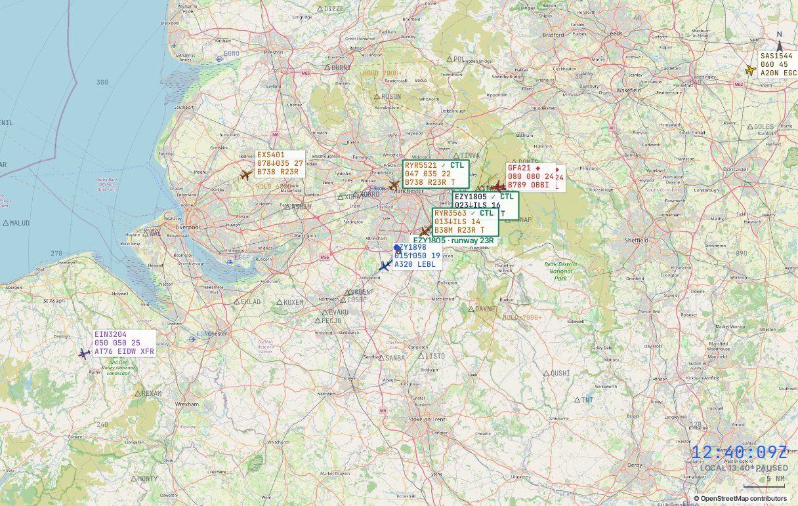
MANCHESTER RADAR · 118.580 · DIRECTOR 121.355
Approach
Arrivals check in on their STAR towards ROSUN, MIRSI or DAYNE. Descend them into the stack, space them, and clear the ILS to the landing runway. Departures check in climbing to 5,000 ft: climb them and hand them to Scottish Control.
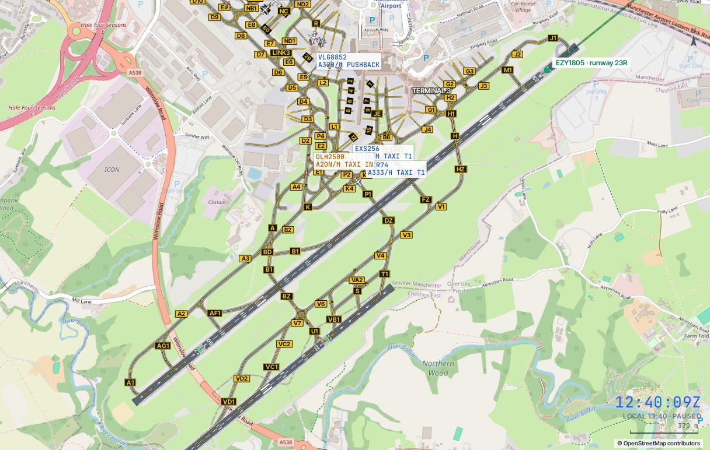
MANCHESTER TOWER · 118.630
Tower
Clear the landings on runway 1 and the take-offs on runway 2. Cross each departure over the landing runway between two arrivals, then line it up and clear it as the runway ahead clears.
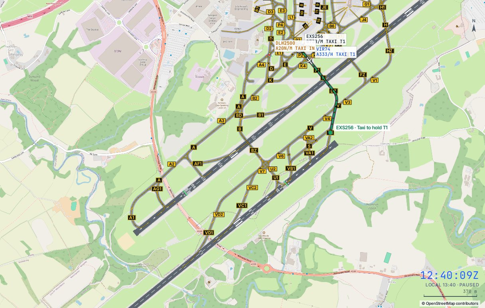
MANCHESTER GROUND · 121.855
Ground
Clear each departure with its SID and runway and push it off the stand, then taxi it to the holding point of the departure runway. Arrivals stop clear of the runway and ask for taxi to a stand at their airline's terminal.
Live now at Manchester
Work today’s real traffic at EGCC.
Pick Live now in the session setup and the position opens at the current time with Manchester's real flights, live aircraft positions over the North West and the current METAR.
Today’s real scheduleManchester's arrivals and departures for the next few hours, from avionio’s public MAN boards, refreshed every 15 minutes.
Aircraft in the air right nowLive ADS-B positions from the adsb.lol and adsb.fi networks. When a real Manchester inbound comes within range, it becomes your flight.
The weather outsideThe live EGCC METAR sets the runway configuration, the ATIS and the QNH.
Weather scenarios
Pick the weather you want to work.
Each scenario is a METAR the simulation reads for wind, visibility, cloud and QNH. You can also switch on Live METAR to use the current EGCC report, or paste one yourself.
Sources and accuracy
What is real and what is modelled.
The runways, holding points, procedures, fixes, holds and the Manchester frequencies come from the UK AIP charts for EGCC. Manchester really splits delivery, ground, tower, radar and director between several positions; here they are one. The SIDs are flown as their conventional routes (the RNAV substitutions follow the same tracks), the Scottish Control sector frequencies are representative, single-runway night operations are not modelled, and airline terminals are approximate. Stand numbers follow OpenStreetMap. In Live now sessions the flights come from avionio’s public MAN arrivals and departures boards and aircraft positions from the adsb.lol and adsb.fi networks; once a flight is yours it follows your instructions, not its real track. This is a training game and is not for real-world navigation. It is not affiliated with Manchester Airport, NATS or any airline.
Aerodrome, ground movement and parking chartsThe two runways, holding points, the runway 1 crossings and the stands.
SID chartsThe 20 departures off 23R, 23L, 05L and 05R.
STAR and holding chartsThe eleven arrivals and the ROSUN, MIRSI and DAYNE holds.
Approach chartsThe ILS 23R, 05L and 05R, the RNP 23L, their intermediate fixes, glidepaths and missed approaches.
Surveillance minimum altitude chartThe vectoring altitudes and the high ground east of the airport.
OpenStreetMapTaxiway, apron, stand and building geometry and the street map under the scope.
Live nowManchester flights from avionio.com; live aircraft positions from adsb.lol and adsb.fi.
LSGGGVAOpen nowNew
Geneva
Switzerland's second airport, on the border with France between the Jura and the Alps, 1,411 ft up at the head of the lake. One long runway, 04/22, with the terminal and three round satellites on its south-east side. The satellites' stands are taxi-in, taxi-out: there is no push back, and apron buses carry the passengers between the aircraft and the terminal. You work Geneva Arrival, Approach, Tower, Ground and Departure combined, from the six STARs to the stands.
Arrival 136.255Departure 119.530Tower 118.705Ground 121.680Apron 121.855TA 7,000 ft
3,919 mRunway length; the 04 threshold is displaced 343 m
1,411 ftAerodrome elevation
12Taxi-in, taxi-out stands round the three satellites, with apron buses
7,000 ftTransition altitude and the ILS intermediate level
121Stands on the terminal, satellites, east, west and north aprons
What makes it Geneva
Built from the published charts.
The fixes, STARs, SIDs, holds and ILS approaches were read off the published SID, STAR and ILS charts for LSGG; the taxiways, aprons, stands, jet bridges and buildings follow OpenStreetMap.
Round satellites, taxi-in taxi-out
Stands 31 to 34, 41 to 44 and 121 to 127 round the satellites have no push back: the aircraft taxis in nose-first and taxis out forwards through the stand to the far lane. The simulator refuses PUSH there and gives start-up and taxi together.
Aerodrome chart
Apron buses
Passengers ride between the terminal and the satellites by bus. A bus meets each arrival on its stand as the aircraft parks, and each departure's bus is there ahead of boarding and gone before the engines start.
Operations
ILS to both ends
The ILS 22 from SAPRE and the ILS 04 from INDIS, both at 7,000 ft on a 3° glidepath. STARs from BENOT, FRIBU, ULMES, BANKO, KINES and BELUS.
ILS charts
RNAV SIDs
Seventeen SIDs, from ARBOS and SIROD to the north to BALSI and CBY to the south: straight ahead to the turn point, then the route.
SID charts
Weather scenarios
Pick the weather you want to work.
Each scenario is a METAR the simulation reads for wind, visibility, cloud and QNH, from the south-westerly (la vent) to the bise.
Sources and accuracy
What is real and what is modelled.
The fix positions were measured off the published charts (they are close, not survey-grade), the SID routings are simplified, Geneva Approach, Arrival, Director and Tower are one position, the timetable is a representative day and not the live board, and the apron buses are a simple model. This is a training game and is not for real-world navigation. It is not affiliated with Genève Aéroport, skyguide or any airline.
SID, STAR and ILS chartsFixes, procedures, holds and frequencies.
OpenStreetMapTaxiway, apron, stand, jet bridge and building geometry.
EGGDBRSOpen nowNew
Bristol
The South West's airport, on Broadfield Down 622 ft up in the hills south of Bristol, between Dundry Hill and the Mendips. One runway, 09/27, with taxiway Zulu along its north side and the Main, East and West Aprons by the terminal. You work Bristol Radar, Director, Tower and Ground combined, from the six STARs and the BRI hold to the stands.
Radar 125.655Director 136.080Tower 133.855Ground 121.930TA 6,000 ftCharts UK AIP
2,011 mRunway length, 45 m wide; the 27 threshold is displaced 128 m
622 ftAerodrome elevation, on a hilltop: low cloud and hill fog come with it
WesterlyThe usual runway: 27, with the ILS from the east
6,000 ftTransition altitude: every SID stops at 6,000 ft
37Stands on the Main, East and West Aprons
What makes it Bristol
Built from the UK AIP.
The runway, holding points, arrivals, departures, the hold and the approaches come from the UK AIP charts for EGGD: the aerodrome chart, the parking and docking chart, the standard departure and arrival charts, the holding chart and the ILS approach charts for both runway ends. The taxiway, stand and building layout follows OpenStreetMap, checked against the aerodrome chart, and the stands sit at their AIP coordinates.
One runway, one parallel taxiway
Runway 09/27 carries every movement. Taxiway Zulu runs along its north side from the aprons, with Golf round to the 09 end. Departures for 27 enter at Alpha X-ray or Bravo X-ray, departures for 09 at Golf X-ray: fit each one between two landings.
Aerodrome chart
The BRI hold over the field
Every Bristol STAR, from WEVBE, FIFAH, BAJJA, ICTAM, DAWLY and TOJAQ, ends at the BRI beacon over the airport, at FL70. The hold is inbound 089°, left turns, from 3,000 ft to FL100, and it is where the missed approach goes back to.
STAR and holding charts
ILS to both ends
The ILS 27 from ELROV and the ILS 09 from EMPAS, both at 2,500 ft on a 3° glidepath. Arrivals are vectored onto a downwind and base the way Bristol Radar does it; from the approach side they go straight to the base.
IAC ILS/DME 09 and 27
Conventional SIDs to 6,000 ft
Six SIDs: Brecon, HAWFA and EXMOR off 27, Brecon, YORQI and EXMOR off 09. Each climbs straight ahead to the ILS DME turn point at 3,000 ft or above, then turns. All stop at 6,000 ft; Cardiff Radar or London Control take them higher.
SID charts
Hot spot HS1, Link Charlie
Stands 22 to 26R are entered and left straight from taxiway Zulu, never through Link Charlie. The simulator's routes keep to that.
Aerodrome chart hot spots
Three aprons
easyJet, Bristol's biggest airline, on the West Apron, Ryanair, Jet2 and TUI on the East Apron, KLM, Aer Lingus, Loganair and the rest on the Main Apron in front of the terminal.
Parking and docking chart
Four positions, one console
From the BRI hold to the stand.
Bristol Radar, Director, Tower and Ground are combined on one position. Scroll out for the Bristol Channel, from Cardiff to the Mendips, and scroll in for the runway and the aprons.
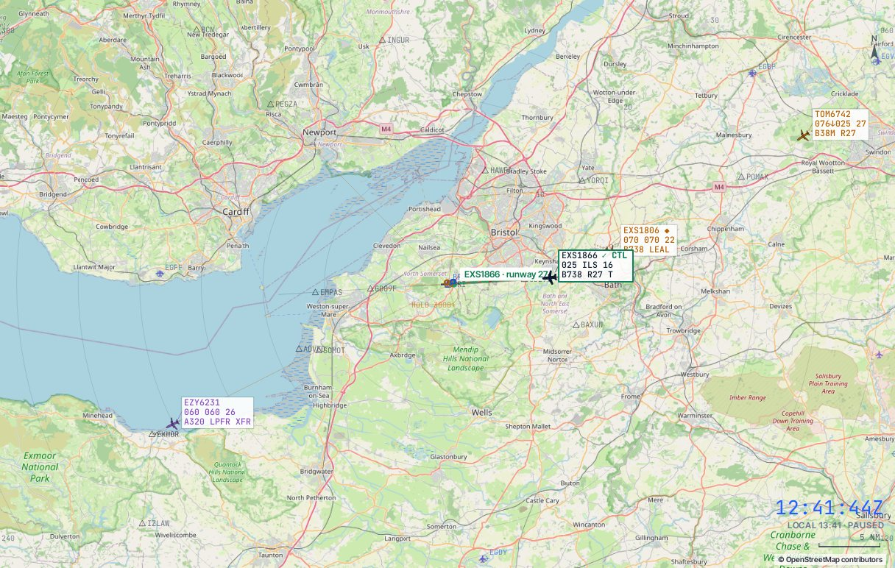
BRISTOL RADAR · 125.655 · DIRECTOR 136.080
Approach
Arrivals check in on their STAR towards BRI. Descend them, space them with gaps for the departures, and clear the ILS. Departures check in climbing to 6,000 ft: climb them and hand them to Cardiff Radar or London Control.
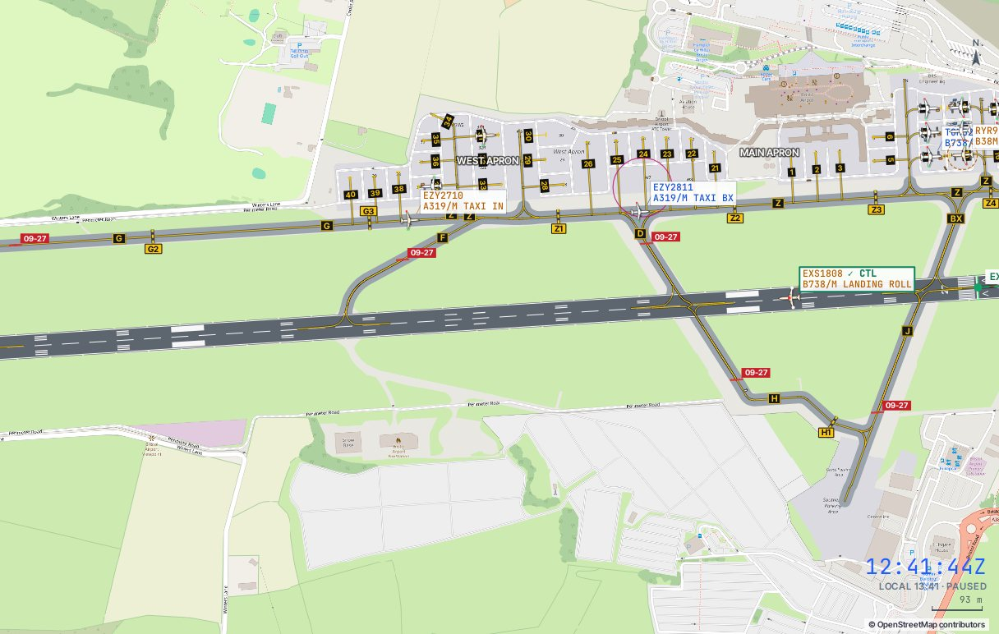
BRISTOL TOWER · 133.855
Tower
Clear the landings and the take-offs on the one runway. Line each departure up behind a landing and clear it once the arrival has turned off onto Zulu.
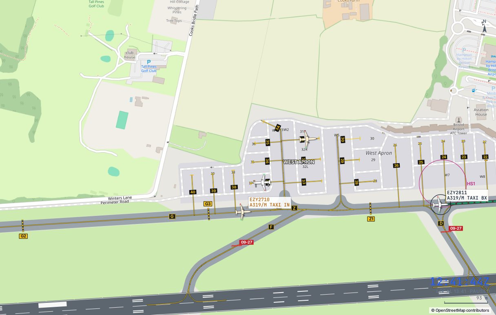
BRISTOL GROUND · 121.930
Ground
Bristol has no delivery frequency: Ground gives each departure its clearance with the start-up and push, then taxis it along Zulu to the holding point. Arrivals stop clear of the runway and ask for taxi to their airline's apron.
Live now at Bristol
Work today’s real traffic at EGGD.
Pick Live now in the session setup and the position opens at the current time with Bristol's real flights, live aircraft positions over the South West and the current METAR.
Today’s real scheduleBristol's arrivals and departures for the next few hours, from avionio’s public BRS boards, refreshed every 15 minutes.
Aircraft in the air right nowLive ADS-B positions from the adsb.lol and adsb.fi networks. When a real Bristol inbound comes within range, it becomes your flight.
The weather outsideThe live EGGD METAR sets the runway, the ATIS and the QNH.
Weather scenarios
Pick the weather you want to work.
Each scenario is a METAR the simulation reads for wind, visibility, cloud and QNH. You can also switch on Live METAR to use the current EGGD report, or paste one yourself.
Sources and accuracy
What is real and what is modelled.
The runway, holding points, procedures, fixes, the BRI hold, the stand positions and the Bristol frequencies come from the UK AIP charts for EGGD. Bristol really splits ground, tower, radar and director between several positions; here they are one. The SIDs are flown as their conventional routes, the Cardiff Radar and London Control frequencies are representative, the southern parking area off taxiways Hotel and Juliett is not used, and airline aprons are approximate. In Live now sessions the flights come from avionio’s public BRS arrivals and departures boards and aircraft positions from the adsb.lol and adsb.fi networks; once a flight is yours it follows your instructions, not its real track. This is a training game and is not for real-world navigation. It is not affiliated with Bristol Airport, NATS or any airline.
Aerodrome chartThe runway, taxiways, holding points and hot spot.
Parking and docking chartThe 37 stands, at their AIP coordinates.
SID chartsThe six departures off 27 and 09.
STAR and holding chartsThe six arrivals and the BRI hold.
Approach chartsThe ILS/DME 09 and 27, their intermediate fixes, glidepaths and missed approaches.
OpenStreetMapTaxiway, apron and building geometry and the street map under the scope.
Live nowBristol flights from avionio.com; live aircraft positions from adsb.lol and adsb.fi.
EGAAEGACBFS · BHDOpen nowNew
Belfast International & City
Two airfields, 14 miles apart, worked as one. Aldergrove (Belfast International) has runway 07/25 beside Lough Neagh; Belfast City (George Best) has 04/22 on the shore of Belfast Lough. Neither has SIDs or STARs, so you build the flow yourself: radar vectors, the BEL, HB and MAGEE holds, and sharp turns onto short finals over the Lough. You are Aldergrove Approach, Director, Tower and Ground, and you release Belfast City's departures.
Approach 133.130Director 120.905Tower 118.305Ground 121.755City Tower 122.830Charts UK AIP
3Runways: 07/25 and 04/22 in play, 17/35 drawn for taxiing only
2,780 mAldergrove 07/25; Belfast City 04/22 is 1,829 m
268 ft · 15 ftAerodrome elevations: Aldergrove on the plain, City at the water
25 · 22The usual westerly pair: ILS 25 at Aldergrove, ILS 22 at City
0SIDs and STARs: vectors, holds and airway departures
30Stands: 18 at Aldergrove and 12 at City
What makes it Belfast
One approach, two airfields.
The runways, holding points, ILS and RNP approaches, holds and frequencies come from the UK AIP charts for EGAA and EGAC. The en-route fixes are the published points the Belfast routes use, and the taxiways, stands and buildings follow OpenStreetMap.
Pick each runway yourself
Aldergrove (25 or 07) and City (22 or 04) have separate switches in the ATIS panel. They start from the wind, and changing one re-routes only that airfield's arrivals.
ATIS panel
Vectors, no STARs
Arrivals from Great Britain and Europe funnel over BELZU and the Lough, then turn sharply onto the ILS 25 final or the short City 22 final. From the south, Dublin traffic comes up the N34 and from the Isle of Man down the L10.
VATSIM and IVAO procedures, en-route fixes
The BEL, HB and MAGEE holds
Aldergrove's arrivals wait at BEL; Belfast City's wait at MAGEE, with HB for the missed approach. The AI controllers keep each airfield's stack separate.
Holding charts
Airway departures
South via P620 (LISBO, NUMPI, NIMAT), south-east via L10 high (PEPOD to Isle of Man) or low (RINGA, SLYDA), north via P600 to BLACA and Turnberry. Turboprops and short sectors take the low route.
Departure routes
City's releases
Belfast City departures are released by Aldergrove Radar and handed on by 2,000 ft. Runway 04 departures turn out to the right on 034°, and 22 departures turn left after climbing straight ahead.
Belfast City procedures
Both METARs on the panel
EGAA and EGAC reports sit side by side. In Live now sessions each comes from its own live report.
NOAA, VATSIM
Four positions, two airfields
From the Lough to the stand.
Aldergrove Approach, Director, Tower and Ground are combined on one position, with Belfast City's approach and tower traffic worked from the same scope.
ALDERGROVE APPROACH · 133.130 · DIRECTOR 120.905
Approach
Vector arrivals for both airfields onto their finals, hold them at BEL or MAGEE when you must, and keep the two flows apart. Release City's departures and hand every departure on.
Clear landings and take-offs on both airfields. Line each departure up behind a landing and clear it once the arrival has vacated.
ALDERGROVE GROUND · 121.755
Ground
Clear, push and taxi departures from both airports' stands, and send arrivals to a stand at their own airfield.
Live now at Belfast
Work today’s real traffic at EGAA and EGAC.
Pick Live now in the session setup and the position opens at the current time with both airports' real flights, live aircraft positions over Northern Ireland and both live METARs.
Today’s real scheduleArrivals and departures for Belfast International and Belfast City from avionio’s public BFS and BHD boards, refreshed every 15 minutes. Each flight uses its own airfield.
Aircraft in the air right nowLive ADS-B positions from the adsb.lol and adsb.fi networks. When a real Belfast inbound comes within range, it becomes your flight.
The weather outsideThe live EGAA METAR sets the runway, the ATIS and the QNH, with the EGAC METAR beside it.
Weather scenarios
Pick the weather you want to work.
Each scenario is a METAR the simulation reads for wind, visibility, cloud and QNH. You can also switch on Live METAR to use the current EGAA report, or paste one yourself.
Sources and accuracy
What is real and what is modelled.
The runways, holding points, approaches, holds and frequencies come from the UK AIP charts for EGAA and EGAC. Belfast has no published SIDs or STARs, so the arrival and departure routes are modelled on the airway structure and the procedures described by VATSIM UK and IVAO, using the published fixes; a few waypoints are approximate and the frequencies for the neighbouring Scottish and London Control are representative. Runway 17/35 is drawn and used for taxiing but not for landing or take-off, only 30 stands are modelled, and the two airfields share one approach and one controller. Live now uses avionio’s public BFS and BHD boards and the adsb.lol and adsb.fi networks.
Aerodrome chartsRunways, taxiways, holding points and stands.
Approach chartsILS 25, RNP 07, ILS 22 and ILS 04, with the BEL, HB and MAGEE holds.
OpenStreetMapTaxiway, apron and building geometry and the street map under the scope.
Live nowBelfast flights from avionio.com; positions from adsb.lol and adsb.fi; METARs from NOAA and VATSIM.
EGLLLHROpen nowNew
London Heathrow
The busiest airport in Europe, on two parallel runways at the western edge of London. Heathrow works in segregated mode: one runway for landings, the other for take-offs, swapped at 15:00 every day so the towns under the approaches get a break. You work Heathrow Director, Tower and Ground combined, from the Bovingdon, Lambourne, Biggin and Ockham stacks to 252 stands at Terminals 2 to 5.
Director 119.730Tower 118.505Ground 121.905TA 6,000 ftCharts UK AIP
2Parallel runways, 1,415 m apart: one lands, the other departs
3,902 mRunway 09L/27R; runway 09R/27L is 3,660 m. Both are 50 m wide
15:00Runway alternation: the landing runway swaps every afternoon, westerly or easterly
4Holding stacks: Bovingdon, Lambourne, Biggin and Ockham, from 7,000 ft
6,000 ftTransition altitude: every SID stops at 6,000 ft
252Stands, at Terminals 2, 3, 4 and 5, the remote stands and the cargo area
What makes it Heathrow
Built from the UK AIP.
The runways, holding points, arrivals, departures, stacks and approaches come from the UK AIP charts for EGLL: the aerodrome and ground movement charts, the aircraft parking charts, the standard departure and arrival charts with their coding tables, the holding charts and the ILS/DME and RNP approach charts for all four runway ends. The taxiway, stand and building layout follows OpenStreetMap, checked against the ground movement charts, and each stand takes only the aircraft it is built for.
Segregated mode and alternation
The landing and departure runways swap at 15:00 every day, westerly or easterly: one week the northern runway (27R or 09L) lands until 15:00 and the southern one (27L or 09R) after, the next week the other way round, as the real programme does.
AD 2.21 noise abatement · runway alternation
Four stacks
Arrivals from the north-west hold at Bovingdon, from the north-east at Lambourne, from the south-east at Biggin and from the south-west at Ockham, from 7,000 ft upwards, 1,000 ft apart. Eighteen STARs feed them.
STAR charts 7-1 to 7-17 · holding charts 7-18 and 7-19
CAT III on every runway end
ILS/DME approaches to 27R, 27L, 09L and 09R, joined about 14 miles out at 4,000 ft, as Heathrow Director does. Heathrow lands in fog that closes most airports: low visibility procedures slow the flow, they don't stop it.
IAC 8-1 to 8-8
24 departures, stopped at 6,000 ft
Compton, MAXIT and MODMI, Brookmans Park, UMLAT and ULTIB, Detling, GOGSI and GASGU: a SID for each route off each runway end, all stopping at 6,000 ft under the London TMA with no release. London Control takes them higher.
SID charts 6-1 to 6-6
Real taxi routes
Alpha and Bravo round the Central Area, the Link taxiways, the cross-field routes to Terminal 4 and the long taxi from Terminal 5 to the 27L holding points. 74 runway-holding positions, and Terminal 4 traffic crossing the departure runway at its ends.
Ground movement charts
Five terminal areas
British Airways, Iberia and Vueling at Terminal 5, oneworld and Virgin at Terminal 3, SkyTeam and the Gulf and Asian airlines at Terminal 4, Star Alliance at Terminal 2. Stands are sized: an A380 only fits where an A380 can go.
Aircraft parking charts · stands from OpenStreetMap
Three positions, one console
From the stacks to the stand.
Heathrow Director, Tower and Ground are combined on one position. Scroll out for the four stacks round London, and scroll in for the runways, the Central Area and the stands.
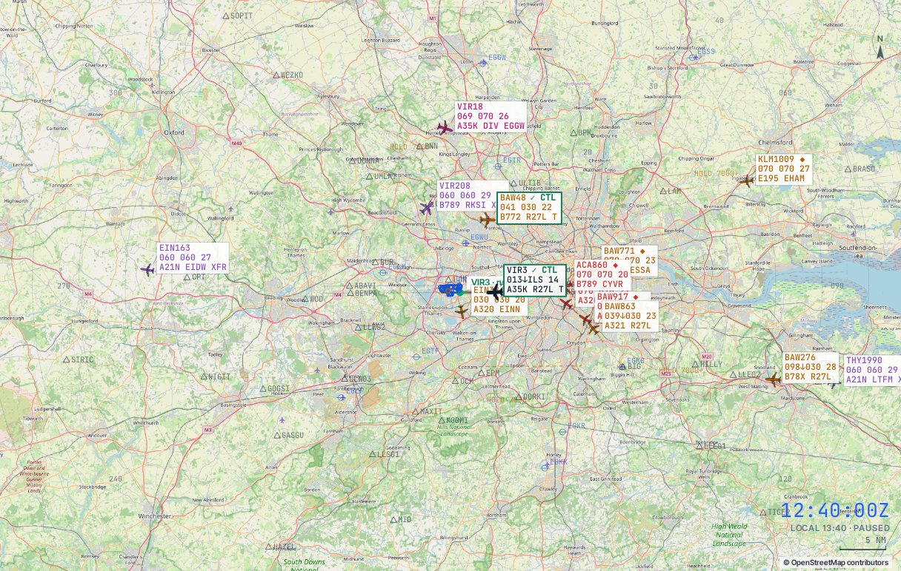
HEATHROW DIRECTOR · 119.730
Approach
Arrivals check in on their STAR towards one of the four stacks. Descend them into the stack, take them out in turn onto the ILS for the landing runway, and keep the final full. Departures check in climbing to 6,000 ft: climb them and hand them to London Control.
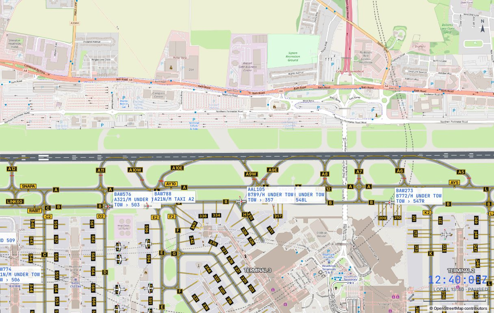
HEATHROW TOWER · 118.505
Tower
One controller lands, one departs. Clear the landings on one runway and the take-offs from the other, and cross the Terminal 4 traffic over the departure runway between take-offs.
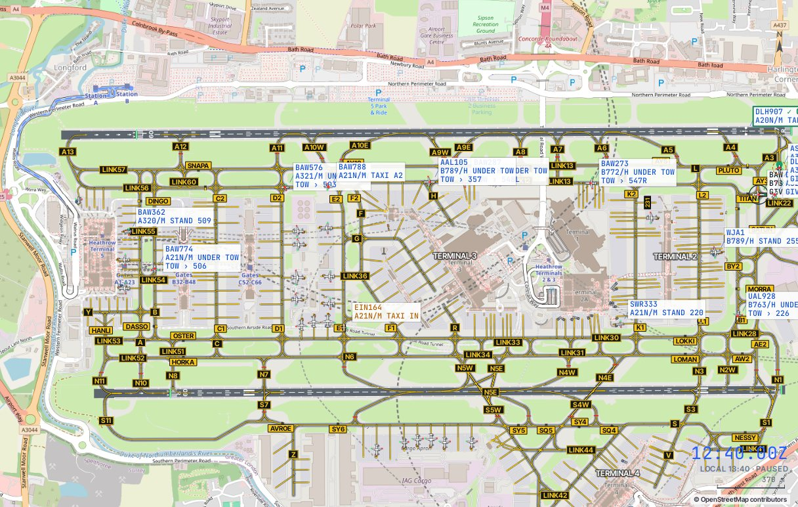
HEATHROW GROUND · 121.905
Ground
Clear each departure with its SID and push it off the stand, then taxi it to the right end of the departure runway. Arrivals stop clear of the runway and ask for taxi to a stand at their airline's terminal.
Live now at Heathrow
Work today’s real traffic at EGLL.
Pick Live now in the session setup and the position opens at the current time with Heathrow's real flights, live aircraft positions over London and the current METAR.
Today’s real scheduleHeathrow's arrivals and departures for the next few hours, from avionio’s public LHR boards, refreshed every 15 minutes.
Aircraft in the air right nowLive ADS-B positions from the adsb.lol and adsb.fi networks. When a real Heathrow inbound comes within range, it becomes your flight.
The weather outsideThe live EGLL METAR sets the runway direction, the ATIS and the QNH.
Weather scenarios
Pick the weather you want to work.
Each scenario is a METAR the simulation reads for wind, visibility, cloud and QNH. You can also switch on Live METAR to use the current EGLL report, or paste one yourself.
Sources and accuracy
What is real and what is modelled.
The runways, holding points, procedures, fixes, stacks and the Heathrow frequencies come from the UK AIP charts for EGLL. Heathrow really splits delivery, ground, tower and the approach between many positions; here they are one. The SIDs are flown as their published routes, the London Control frequencies are representative, the night quota period and mixed-mode trials are not modelled, and airline terminals are approximate. Stand numbers follow OpenStreetMap and the parking charts. The timetable is built from a real day of Heathrow's boards, thinned to about 40 movements an hour. In Live now sessions the flights come from avionio’s public LHR arrivals and departures boards and aircraft positions from the adsb.lol and adsb.fi networks; once a flight is yours it follows your instructions, not its real track. This is a training game and is not for real-world navigation. It is not affiliated with Heathrow Airport, NATS or any airline.
Aerodrome, ground movement and parking chartsThe two runways, 74 holding points, the taxiways and 252 stands.
SID chartsThe 24 departures off 27R, 27L, 09R and 09L.
STAR and holding chartsThe eighteen arrivals and the Bovingdon, Lambourne, Biggin and Ockham stacks.
Approach chartsThe ILS/DME to all four runway ends, their intermediate fixes, glidepaths and missed approaches.
OpenStreetMapTaxiway, apron, stand and building geometry and the street map under the scope.
Live nowHeathrow flights from avionio.com; live aircraft positions from adsb.lol and adsb.fi.
LEMDMADOpen nowNew
Madrid-Barajas
Spain's busiest airport, on the Meseta 2,000 ft above the sea, with four runways used at the same time. In the north flow arrivals land on 32L and 32R side by side while departures leave from 36L and 36R; in the south flow they land on 18R and 18L and depart from 14R and 14L. You work Madrid Approach, Barajas Tower and Barajas Ground combined, from the STAR holds to the stands at Terminals 1-2-3, 4 and 4S.
Approach 127.505Tower 118.155 · 118.980Ground 121.980TA 13,000 ftCharts AIP España
4Runways in use at once: two for landing, two for take-off
4,179 mRunway 18R/36L, the longest; all four are 60 m wide
1,998 ftAerodrome elevation, on the plateau north-east of Madrid
NorthThe preferred flow: land 32L and 32R, depart 36L and 36R
13,000 ftTransition altitude: SIDs climb to 13,000 ft on altitude
399Stands, at Terminals 1-2-3, 4 and 4S, the remote ramps and the cargo apron
What makes it Madrid
Built from the AIP España.
The runways, runway configurations, holding points, arrivals, departures, holds and approaches come from the Spanish AIP charts for LEMD: the aerodrome and ground movement charts, the parking chart, the standard departure and arrival charts and the instrument approach charts for all four landing runways. The taxiway, stand and building layout follows OpenStreetMap, checked against the ground movement chart.
Four runways at once
Two parallel landing runways and two parallel take-off runways, all in use together. Arrivals from the west land on the west runway, arrivals from the east on the east one, and each departure leaves from the runway nearer its stand. Switch the whole airport between the north and south flows with one button.
AD 2.20 runway configurations
Parallel ILS approaches
Independent approaches to 32L and 32R (or 18R and 18L): two arrivals can fly side by side on final. The ILS Z initial segments bring each arrival from its STAR end at FAFEQ, RUDBI, RILKO or LULER to its own intermediate fix.
IAC ILS Z 32L, 32R, 18R, 18L
Crossing 18R/36L
Terminal 4 and its satellite 4S sit on either side of runway 18R/36L. Arrivals and tows between them stop at the runway-holding position on Zulu 7 or the ZW taxiways until you clear them to cross.
Ground movement chart
32 RNAV departures
Eight departure routes, each with its own SID from every take-off runway: 36L, 36R, 14L and 14R. All climb to 13,000 ft, the Spanish transition altitude, and need no release from Madrid Control.
SID charts
Eighteen arrivals, four holds
Nine directions, each with a STAR for each flow. North-flow arrivals end at the FAFEQ and RUDBI holds, south-flow arrivals at RILKO and LULER. Every missed approach ends in the ROFIX hold south-west of the airport.
STAR charts · approach charts
Three terminal areas
Iberia, Iberia Express, Air Nostrum and Vueling at Terminal 4, the oneworld long-haul partners at 4S, everyone else at Terminals 1-2-3. Remote and cargo stands take the long turnarounds, and the Iberia hangars at La Muñoza take aircraft parked all day.
Parking chart · stands from OpenStreetMap
Three positions, one console
From the holds to the stand.
Madrid Approach, Barajas Tower and Barajas Ground are combined on one position. Scroll out for central Spain, from Toledo to the Sierra de Guadarrama, and scroll in for the four runways and the stands.
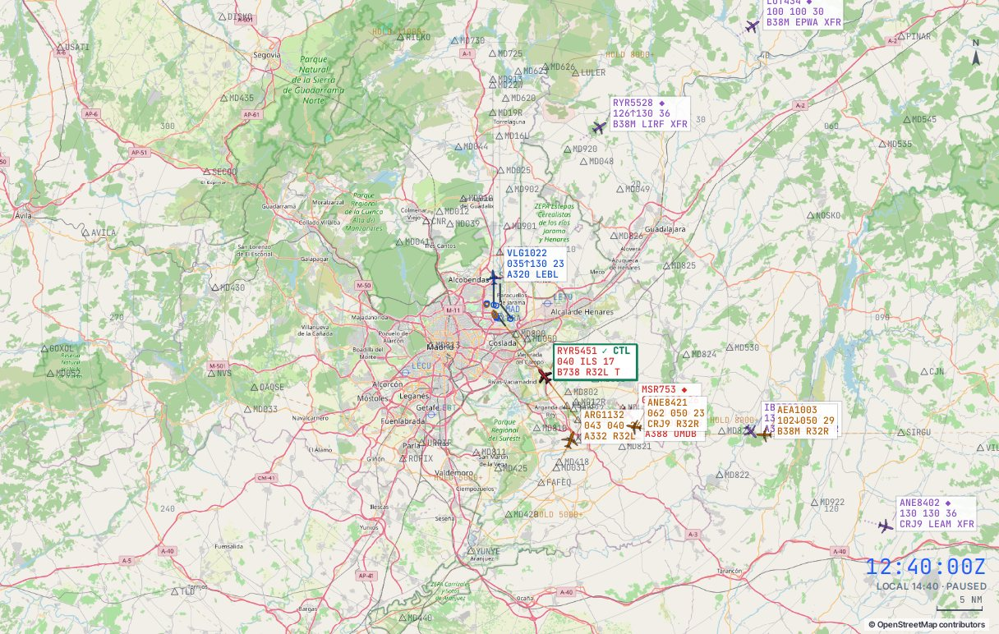
MADRID APPROACH · 127.505
Approach
Arrivals check in on their STAR. Descend them, keep each landing runway's arrivals spaced, and clear the ILS to the runway on their side. Two finals run side by side, independently.
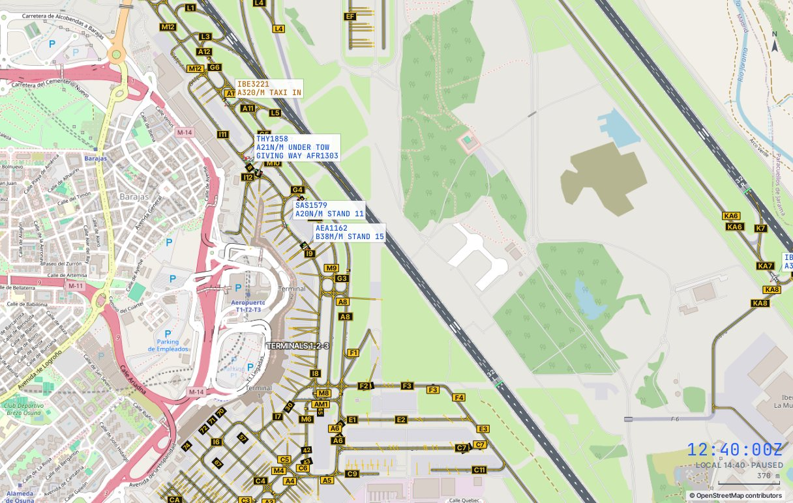
BARAJAS TOWER · 118.155 · 118.980
Tower
Clear the landings on two runways and the take-offs on two others. Line departures up as the runway ahead clears, and cross arrivals over 18R/36L between movements.
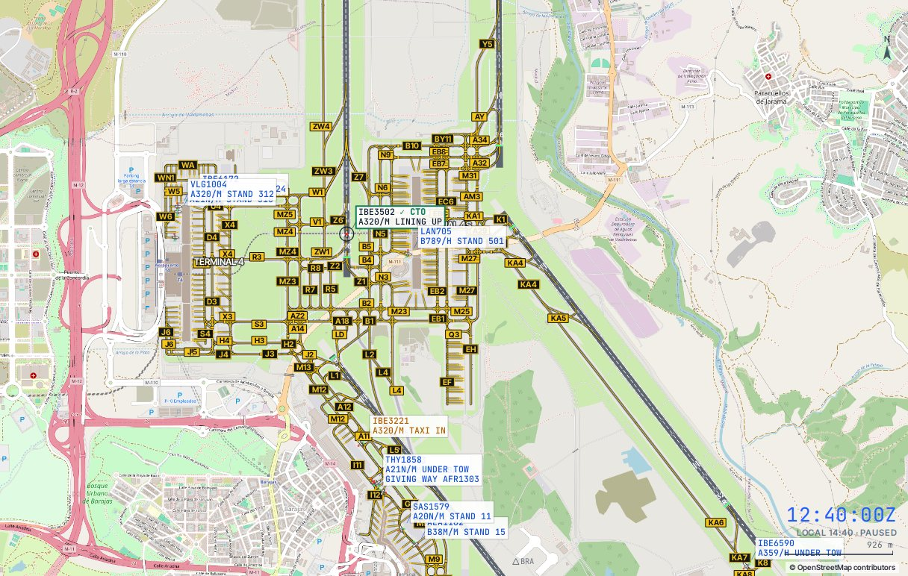
BARAJAS GROUND · 121.980
Ground
Clear each departure with its SID and runway and push it off the stand, then taxi it to the holding point of its runway. Arrivals stop clear of the runway and ask for taxi to a stand at their airline's terminal.
Live now at Madrid-Barajas
Work today’s real traffic at LEMD.
Pick Live now in the session setup and the position opens at the current time with Madrid's real flights, live aircraft positions over central Spain and the current METAR. Barajas runs close to a hundred movements an hour at its peak, so Live now thins the real schedule; Live now plus extra traffic gives you all of it.
Today’s real scheduleMadrid's arrivals and departures for the next few hours, from avionio’s public MAD boards, refreshed every 15 minutes.
Aircraft in the air right nowLive ADS-B positions from the adsb.lol and adsb.fi networks. When a real Madrid inbound comes within range, it becomes your flight.
The weather outsideThe live LEMD METAR sets the flow, the ATIS and the QNH.
Weather scenarios
Pick the weather you want to work.
Each scenario is a METAR the simulation reads for wind, visibility, cloud and QNH. You can also switch on Live METAR to use the current LEMD report, or paste one yourself.
Sources and accuracy
What is real and what is modelled.
The runways, configurations, holding points, procedures, fixes, holds and the Barajas frequencies come from the AIP España charts for LEMD (AIRAC 09/26). Madrid really splits clearance, apron, ground, tower and approach between many positions and frequencies; here they are one. The night single-runway configurations and night SIDs are not modelled, the Madrid Control frequencies are representative, and airline terminals are approximate. Stand numbers follow OpenStreetMap. Madrid's traffic is thinned in timetable sessions. In Live now sessions the flights come from avionio’s public MAD arrivals and departures boards and aircraft positions from the adsb.lol and adsb.fi networks; once a flight is yours it follows your instructions, not its real track. This is a training game and is not for real-world navigation. It is not affiliated with Aena, ENAIRE or any airline.
Aerodrome, ground movement and parking chartsThe four runways, displaced thresholds, holding points, the 18R/36L crossing and the stands.
SID chartsThe 32 day RNAV1 departures off 36L, 36R, 14L and 14R.
STAR chartsThe eighteen arrivals for the north and south flows, and the FAFEQ, RUDBI, RILKO and LULER holds.
Approach chartsThe ILS Z initial segments, intermediate fixes, glidepaths and the missed approach to ROFIX.
OpenStreetMapTaxiway, apron, stand and building geometry and the street map under the scope.
Live nowMadrid flights from avionio.com; live aircraft positions from adsb.lol and adsb.fi.
LOWIINNOpen nowNew
Innsbruck
A runway on the floor of the Inn valley, with the Nordkette rising 5,700 ft above it to the north and the Patscherkofel to the south. You work Innsbruck Radar and Tower combined, from the hold at Rattenberg down the valley to the stand, with arrivals and departures meeting head-on in the same corridor.
Innsbruck Radar 128.975Innsbruck Tower 120.100LOC/DME East 3.77°TA 10000 ftAIRAC AIP Austria AD 2 LOWI
2,000 mRunway 08/26 × 45 m, turn pads at both ends
1,907 ftAerodrome elevation, in the Inn valley
3.77°LOC/DME East descent, no glidepath, offset 3.5° from the runway
26 / 08Land on 26, depart on 08: both ends face the same valley exit
9,500 ftMinimum at RTT, where every approach from the east starts
FöhnSoutherly gales over the Brenner, 30 to 50 kt gusts
What makes it Innsbruck
Built from the Austrian AIP charts.
The aerodrome, SIDs, STARs, holds, approaches and minimum vectoring altitudes come from AIP Austria AD 2 LOWI: the aerodrome text, the aerodrome chart, the SID and STAR charts, the surveillance minimum altitude chart, the LOC/DME East, the four RNP approaches and the visual approach chart. The taxiway, apron and building layout follows OpenStreetMap, checked against the aerodrome chart.
The LOC/DME East
The main approach has no glidepath. From RTT the crews join the OEV localiser at ADWIG, 21 miles out, and come down the valley at 3.77° against check altitudes at each DME fix: 9,500 ft at D19, 5,900 ft at D10, 4,700 ft at D7. At the D4.5 missed approach point at 3,700 ft they land visually.
LOC/DME East · AD 2-LOWI-13-1-2-1
Circling to runway 08
With an easterly wind there is still no straight-in approach from the west for most crews. They fly the LOC/DME East, break off at D4.2, fly a right-hand circuit south of the field at 3,700 ft and turn in over the city to land on 08.
Visual approach chart · AD 2-LOWI-14-1
Departures down the valley
Every conventional SID heads east down the Inn valley on the OEJ localiser to Rattenberg before turning off towards Vienna, Salzburg, Munich or the Brenner. Off runway 26 they climb west, turn back visually and fly over the field. Minimum climb gradients are up to 10%.
SIDs · AD 2-LOWI-9-1, 9-2-1, 9-2-2
RNP AR approaches
Four RNP approaches: RNP E 26 for any LPV-equipped crew, the curved RNP Z to 08 and 26 that need special authorisation, and the RNP Visual V to 08 along the valley from the west. In the simulator every crew is treated as authorised.
RNP · AD 2-LOWI-13-2-1 to 13-3-2
Föhn
When a southerly gale pours over the Brenner the valley fills with severe turbulence, windshear and downdraughts, worst on final over the city. Some crews go around, and the ATIS warns everyone. One of the Academy exercises is a föhn afternoon.
AD 2.22 · föhn procedures
Releases from three neighbours
Each departure needs a release on the landline from the unit that takes it next: Wien Radar to the east and west, München Radar to the north, Padova over the Brenner to Italy. Vectored flights must stay above the minimum vectoring altitude, up to 15,500 ft over the mountains.
AD 2.18 · surveillance minimum altitudes 12-1
Two positions, one console
From Rattenberg to the main apron.
Innsbruck Radar and Tower are combined on one position. Scroll out for the valley, the mountains and the minimum vectoring altitudes, and scroll in for the runway, taxiway Alpha and the stands.
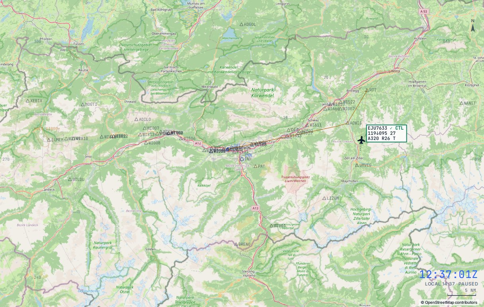
INNSBRUCK RADAR · 128.975
Approach and departure
Arrivals call on their STAR towards RTT. Descend them to 9,500 ft, hold them when the weather is below minima, and clear the approach. Keep departures clear of the arrivals coming the other way, then hand them to Wien, München or Padova.
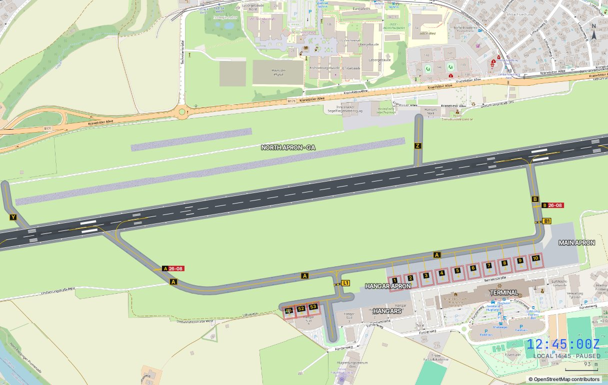
INNSBRUCK TOWER · 120.100
Tower
Clear arrivals to land on 26, get each departure's release, and backtrack departures to the turn pad for a full-length take-off on 08, between arrivals.
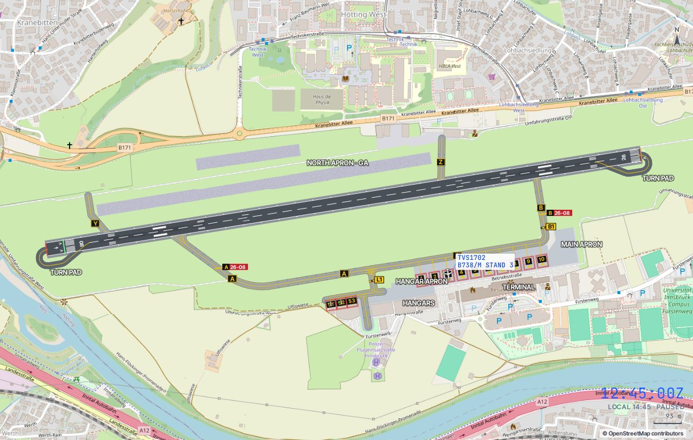
INNSBRUCK TOWER · 120.100
Ground
Approve start-up and push onto taxiway Alpha, then taxi departures to holding point Alpha for runway 08 or Bravo for 26. Arrivals vacate at Alpha or Bravo and taxi to the main apron.
Live now at Innsbruck
Work today’s real traffic at LOWI.
Pick Live now in the session setup and the position opens at the current time with Innsbruck’s real flights, live aircraft positions over the Alps and the current METAR. The timetable sessions are still there when you want to choose your own day and hour.
Today’s real scheduleInnsbruck’s arrivals and departures for the next few hours, from avionio’s public INN boards, refreshed every 15 minutes with their expected times.
Aircraft in the air right nowLive ADS-B positions from the adsb.lol and adsb.fi networks. When a real Innsbruck inbound comes within range, it becomes your flight.
The weather outsideThe live LOWI METAR sets the landing and departure runways, the ATIS and the föhn warning.
Weather scenarios
Pick the weather you want to work.
Each scenario is a METAR the simulation reads for wind, visibility, cloud and QNH. You can also switch on Live METAR to use the current LOWI report, or paste one yourself.
Sources and accuracy
What is real and what is modelled.
Procedures, fixes, holds, frequencies, runway data and minimum vectoring altitudes come from AIP Austria AD 2 LOWI. The AIP publishes no transition altitude for Innsbruck, so the simulation uses 10,000 ft. It also has no stand numbers, so stands 1 to 10 on the main apron and 51 to 53 on the hangar apron are representative. The KPT beacon position is approximate, and the Wien, München and Padova frequencies are representative. The airline timetable is a representative winter and summer week. In Live now sessions the flights come from avionio’s public Innsbruck arrivals and departures boards (the airport’s own site refuses automated requests) and aircraft positions from the adsb.lol and adsb.fi networks; once a flight is yours it follows your instructions, not its real track. The aerodrome layout follows OpenStreetMap, and the terrain shading follows the published minimum altitudes. This is a training game and is not for real-world navigation. It is not affiliated with Austro Control, Innsbruck Airport or any airline.
AD 2 LOWIAerodrome text: runway and declared distances, föhn procedures, noise abatement, units and frequencies.
AD 2-LOWI-1-1, 4-1Aerodrome chart and obstacles: runway 08/26, taxiways A, B, L, Y and Z, the turn pads.
AD 2-LOWI-9-1 to 9-2-2SIDs off runways 08 and 26, and the RNAV MOGTI departure to the west.
AD 2-LOWI-11-1, 12-1RNAV STARs to RTT and ELMEM, the holds, and the surveillance minimum altitudes.
AD 2-LOWI-13-1-2-1 to 13-3-2LOC/DME East, RNP E 26, RNP Z 08 and 26 (AR) and RNP Visual V 08.
AD 2-LOWI-14-1, 14-2Visual approach chart: the circling to runway 08.
OpenStreetMapTaxiway, apron and building geometry, the Inn and the street map under the scope.
Live nowInnsbruck flights from avionio.com; live aircraft positions from adsb.lol and adsb.fi.
AI controllers give the same instructions you would and hand traffic to you at the usual points. Select one of their flights and press Take over (or just give it an instruction) to work it yourself. Only your flights count in your score.
Flight information
Sched
New
Flight
From
Type
Stand
Status
--:--:--
Position briefing
Gibraltar Radar & Tower
LXGB · RWY 09/27 1798 × 45 m · ELEV 12 ft · GBR TACAN Ch 83X · TA 6000 · Radar 122.8 · Tower 131.2
You hold both positions for the shift you pick below: choose a day and a start time and the traffic comes from that slot of the weekly timetable, or pick Live now to work today’s real Gibraltar flights from the current time with the live METAR. Bring arrivals in on surveillance radar approaches, keep them out of R164 and off the Rock, work the departures from stand to Sevilla, and keep Winston Churchill Avenue shut whenever anything uses the runway.
Position briefing
Thames Director & City Tower
EGLC · RWY 09/27 1508 × 30 m · ELEV 20 ft · ILS 5.5° · LCY NDB 322 · TA 6000 · Thames 132.700 · Tower 118.080
You hold both positions for the shift you pick below: choose a day and a start time and the traffic comes from that slot of the weekly timetable, or pick Live now to work today’s real London City flights from the current time with the live METAR. Bring arrivals off the JACKO and GODLU holds along their transitions to the 5.5° ILS, and work the departures from the stands to their SIDs, a release from London Control and the hand-off.
Position briefing
Innsbruck Radar & Tower
LOWI · RWY 08/26 2000 × 45 m · ELEV 1907 ft · LOC/DME East 3.77° · RTT NDB 303 · TA 10000 · Radar 128.975 · Tower 120.100
You hold both positions for the shift you pick below: choose a day and a start time and the traffic comes from that slot of the weekly timetable, or pick Live now to work today’s real Innsbruck flights from the current time with the live METAR. Bring arrivals from RTT down the valley on the LOC/DME East, or round the circling to 08, and work the departures from the apron down the same valley against them, with a release from Wien, München or Padova.
Position briefing
New York Approach, Kennedy Tower & Ground
KJFK · RWY 4L/22R 4R/22L 13L/31R 13R/31L · ELEV 13 ft · ILS · TA 18000 · Approach 128.125 · Tower 119.1 / 123.9 · Ground 121.9
You hold all three positions for the shift you pick below: choose a day and a start time and the traffic comes from that slot of the weekly timetable, or pick Live now to work today’s real Kennedy flights from the current time with the live METAR. Bring arrivals off their arrivals onto the ILS, land them on one runway, cross them over the other, and work the departures from the gate to the Kennedy Five and New York Center.
Position briefing
Sydney Approach, Tower & Ground
YSSY · RWY 07/25 16L/34R 16R/34L · ELEV 21 ft · ILS · TA 10000 · Approach 124.4 · Tower 120.5 / 124.7 · Ground 121.7
You hold all three positions for the shift you pick below: choose a day and a start time between 06:00 and 22:00 local (the curfew closes the airport from 23:00) and the traffic comes from that slot of the timetable, or pick Live now to work today’s real Sydney flights from the current time with the live METAR. Bring arrivals off their STARs onto the ILS, land them on one runway, cross the taxiing traffic over the others, and work the departures from the bay to the RNAV SIDs and Brisbane or Melbourne Centre.
Position briefing
Madrid Approach, Barajas Tower & Ground
LEMD · RWY 14L/32R 14R/32L 18L/36R 18R/36L · ELEV 1998 ft · ILS · TA 13000 · Approach 127.505 · Tower 118.155 / 118.980 · Ground 121.980
You hold all three positions for the shift you pick below: choose a day and a start time and the traffic comes from that slot of the weekly timetable, or pick Live now to work today’s real Madrid flights from the current time with the live METAR. Bring arrivals off their STARs onto two parallel ILS approaches, and work departures from three terminal areas onto two departure runways.
Position briefing
Heathrow Director, Tower & Ground
EGLL · RWY 09L/27R 09R/27L · ELEV 83 ft · ILS CAT III · TA 6000 · Director 119.730 · Tower 118.505 · Ground 121.905
You hold all three positions for the shift you pick below: choose a day and a start time and the traffic comes from that slot of the timetable, or pick Live now to work today’s real Heathrow flights from the current time with the live METAR. Bring arrivals out of the four stacks onto the ILS to the landing runway, and work the departures from five terminal areas to the other runway.
Position briefing
Manchester Radar, Tower & Ground
EGCC · RWY 05L/23R 05R/23L · ELEV 257 ft · ILS · TA 5000 · Radar 118.580 · Director 121.355 · Tower 118.630 · Ground 121.855
You hold all four positions for the shift you pick below: choose a day and a start time and the traffic comes from that slot of the weekly timetable, or pick Live now to work today’s real Manchester flights from the current time with the live METAR. Bring arrivals off the ROSUN, MIRSI and DAYNE holds onto the ILS to the landing runway, and work the departures from Terminals 2 and 3 across it to the departure runway.
Position briefing
Geneva Arrival, Tower & Ground
LSGG · RWY 04/22 3,919 m · ELEV 1,411 ft · ILS · TA 7000 · Arrival 136.255 · Departure 119.530 · Tower 118.705 · Ground 121.680
You hold all the positions for the shift you pick below. Bring arrivals off their STARs onto the ILS, and fit the departures from the terminal, the satellites and the aprons between the landings on the one runway. The satellite stands are taxi-in, taxi-out, and apron buses carry the passengers.
Position briefing
Bristol Radar, Tower & Ground
EGGD · RWY 09/27 2011 × 45 m · ELEV 622 ft · ILS · TA 6000 · Radar 125.655 · Director 136.080 · Tower 133.855 · Ground 121.930
You hold all four positions for the shift you pick below: choose a day and a start time and the traffic comes from that slot of the weekly timetable, or pick Live now to work today’s real Bristol flights from the current time with the live METAR. Bring arrivals off their STARs onto the ILS, and fit the departures from the three aprons between the landings on the one runway.
Position briefing
Aldergrove Approach, Tower & Ground, with Belfast City
EGAA · RWY 07/25 2780 × 46 m · ELEV 268 ft · EGAC · RWY 04/22 1829 × 46 m · ELEV 15 ft · ILS · Approach 133.130 · Director 120.905 · Tower 118.305 · Ground 121.755 · City Tower 122.830
You hold the positions for both airfields for the shift you pick below: choose a day and a start time and the traffic comes from that slot of the weekly timetable, or pick Live now to work today’s real Belfast International and Belfast City flights with both live METARs. Vector the arrivals to their finals, hold them at BEL or MAGEE when you need to, and fit the departures from both airports between the landings.
Position briefing
Gatwick Director, Tower & Ground
EGKK · RWY 08R/26L 3316 × 45 m · ELEV 203 ft · ILS · TA 6000 · Director 126.825 · Tower 124.230 · Ground 121.805
You hold all three positions for the shift you pick below: choose a day and a start time and the traffic comes from that slot of the weekly timetable, or pick Live now to work today’s real Gatwick flights from the current time with the live METAR. Bring arrivals off the TIMBA and WILLO holds onto the ILS, fit a departure between each pair of landings on the one runway, and work the ground traffic between the North and South Terminals.
Position briefing
Madeira Approach & Tower
LPMA · RWY 05/23 2781 × 45 m · ELEV 191 ft · FUN DVOR 112.2 · TA 5000 · Approach 119.605 · Tower 124.660
You hold both positions for the shift you pick below: choose a day and a start time and the traffic comes from that slot of the weekly timetable, or pick Live now to work today’s real Madeira flights from the current time with the live METAR. Bring arrivals in on their STARs to PILIM and the VOR approach, watch the wind limits at both anemometers, and work the departures from stand A to their SIDs and Lisboa.
Session
Positions
Work every position yourself, or hand some to an AI controller to share the load. They give the same instructions you would, on the frequency, and pass traffic to you at the normal hand-off points. You can change this during the session with Positions on the scope.
Copy the current LXGB METAR from aviationweather.gov, or paste any other METAR.
Before you start
Close the road early: by 15 NM for walkers and 10 NM for traffic. Closure takes about 2½ minutes.
Departures for 27 taxi to Echo and backtrack to the east turning circle. For 09 they taxi to Alpha and backtrack across the road to the west circle.
Type commands in the bar under the scope, for example BAW492 H250 A40, or use the buttons on the selected flight. The training guide has the full list.
Every SID stops at 3,000 ft. Hand departures to London Control when they ask, and get each one's release before you clear it for take-off.
Runway 27 departures taxi along T to Mike, runway 09 departures to Alpha: both are full length. Arrivals vacate at the first exit ahead.
Type commands in the bar under the scope, for example KLC983 A50 APP, or use the buttons on the selected flight. The Academy has the full list.
Arrivals land on 26 and departures leave from 08, towards them: keep each departure under or over the arrivals coming up the valley until they have passed.
Runway 08 departures taxi to Alpha and backtrack to the west turn pad; runway 26 departures use Bravo. Every one needs a release from Wien, München or Padova.
Type commands in the bar under the scope, for example KLM1993 A95 APP, or use the buttons on the selected flight. The Academy has the full list.
Arrivals on 22L or 4R stop short of the departure runway on their way in: cross them with CROSS between departures, never in front of one.
Departures taxi to the departure end of the runway. Only flights to Boston, Washington and the other flow-restricted routes need a release (REL).
Type commands in the bar under the scope, for example JBU702 A60 APP or AAL1 CROSS, or use the buttons on the selected flight. The Academy has the full list.
Aircraft taxiing between the terminals and the runway ends meet 07/25 and the parallels: cross them with CROSS between movements, never in front of a landing or take-off.
Departures taxi to the departure end of the runway; no releases are needed. Heavy jets take the long runway 16R/34L.
Type commands in the bar under the scope, for example JST413 A60 APP or QFA441 CTO, or use the buttons on the selected flight. The Academy has the full list.
Four runways at once. The Flow buttons switch between North (land 32L and 32R, depart 36L and 36R) and South (land 18R and 18L, depart 14R and 14L). Arrivals from the west land on the west runway, from the east on the east one.
Terminal 4 departures use 36L, Terminal 4S departures 36R. No releases are needed. Traffic between Terminals 4 and 4S crosses 18R/36L: clear it with CROSS.
Type commands in the bar under the scope, for example IBE3162 APP 32L or IBE3402 TAXI Z2, or use the buttons on the selected flight. The Academy has the full list.
One runway lands, the other departs. Westerly: land 27R and depart 27L, or the reverse. Easterly: land 09L and depart 09R, or the reverse. The runways swap at 15:00 (the week decides which comes first); the simulator switches at 15:00 by itself. The Flow buttons choose Westerly or Easterly.
Departures enter the runway at its far end: 27L at November 1 or Sierra 1, 27R at Alpha 1 or Alpha 2. No releases are needed. Traffic to and from Terminal 4 crosses the southern runway: clear it with CROSS.
Type commands in the bar under the scope, for example BAW478 PUSH or VIR4 A70 APP, or use the buttons on the selected flight. The Academy has the full list.
Two runways, one job each. Westerly: land 23R, depart 23L. Easterly: land 05R, depart 05L. The runway buttons switch the configuration.
Westerly departures cross runway 1 on their way out, easterly arrivals on their way in: they stop at the runway-holding position and call. Clear them with CROSS between the landings. No releases are needed.
Type commands in the bar under the scope, for example KLM1071 A70 APP or RYR2232 CROSS, or use the buttons on the selected flight. The Academy has the full list.
One runway for everything: space arrivals on final with a gap for a departure, line the departure up behind each landing and clear it once the arrival has vacated.
Runway 22 departures enter at Alfa at the north-east end, runway 04 departures at Golf at the south-west end. The satellite stands (31 to 34, 41 to 44, 121 to 127) have no push back: give the aircraft its TAXI and it leaves forwards. The north apron is reached across the runway.
Type commands in the bar under the scope, for example SWR123 TAXI or EZY8821 A100 APP, or use the buttons on the selected flight. The Academy has the full list.
One runway for everything: space arrivals on final with a gap for a departure, line the departure up behind each landing and clear it once the arrival has vacated.
Runway 27 departures enter at Alpha X-ray or Bravo X-ray at the east end, runway 09 departures at Golf X-ray at the west end. No releases are needed. Stands 22 to 26R taxi straight onto Zulu: Link Charlie is hot spot HS1.
Type commands in the bar under the scope, for example EZY6201 PUSH or KLM1081 A40 APP, or use the buttons on the selected flight. The Academy has the full list.
Each airfield has its own runway switch in the ATIS panel: Aldergrove 25 or 07, Belfast City 22 or 04. Arrivals for the two airfields turn onto their finals close together over the Lough, so keep them apart.
Belfast City departures need a release from you (Aldergrove Radar) and are handed on by 2,000 ft. There are no SIDs: departures follow their airway route after the runway heading.
Type commands in the bar under the scope, for example CFE1394 H240 A40 or EZY6201 PUSH, or use the buttons on the selected flight. The Academy has the full list.
One runway for everything: space arrivals on final with a gap for a departure, line the departure up behind each landing and clear it once the arrival has vacated.
Runway 26L departures enter at Alfa 1, Bravo 1 or Mike 1, runway 08R departures at Juliett 1, Hotel 1 or Golf 1. No releases are needed. Old runway 26R is taxiway Juliett.
Type commands in the bar under the scope, for example EZY8203 PUSH or BAW2616 A50 APP, or use the buttons on the selected flight. The Academy has the full list.
Check the anemometers in the ATIS panel. When the wind is out of limits, hold arrivals at PILIM and expect diversions to Porto Santo.
Runway 05 departures taxi to Charlie and backtrack to the 05 turn pad; runway 23 departures use Bravo. Every one needs a release from Lisboa.
Type commands in the bar under the scope, for example TAP1681 A30 APP, or use the buttons on the selected flight. The Academy has the full list.
The Academy has two parts. The core course teaches what is the same everywhere: reading the scope and the strips, the radio, the commands, emergencies and how you are scored. Each airport then has its own endorsement: a unit briefing on its aerodrome, procedures, weather and local rules, and three guided exercises with a coach card on the scope. Finish all three for that airport’s badge.
03Reading the console
The scope
The scope is one map you scroll or pinch to zoom. Zoomed out it shows the airspace round the airport’s radar reference (the GBR TACAN at Gibraltar, the FUN DVOR at Madeira) with range rings every 5 NM, the bearing scale, restricted airspace and high ground, the arrival routes and holds, and the final approach paths. Zoom in and the runway, finals and the aerodrome appear to scale over the street map. Zoom right out to follow flights across Europe and Africa. Drag to pan.
1 An inbound with its data tag: callsign, level and trend, cleared level, groundspeed, type and origin. 2 A departure climbing out on its route. 3 An arrival on final, label in Tower colours. 4 The arrival hold (UPMUPPILIMJACKORTTCAMRN). 5R164, Spanish restricted airspace from the surface to FL300.The high ground of the island, where the minimum vectoring altitude is 9,000 ft.The Canary Wharf towers, up to 771 ft: below 1,200 ft over them is an obstacle incident.The mountains round the valley, shaded by minimum vectoring altitude: up to 15,500 ft over the Alps.The Manhattan skyline: below 2,000 ft over it is an obstacle incident.
Line 1EZY8901 ◆ — callsign, ◆ means the crew is waiting on you
Line 2045↓030 21 — FL/altitude in hundreds, trend, cleared level (or the approach), groundspeed ÷ 10
Line 3A20N R27 T — type, runway of the approach (or destination), T when on Tower
Your traffic is drawn as plane icons in the shape of the real type (airliner, wide-body, business jet, turboprop or military) pointing the way the nose points. Arrivals are amber, departures blue and the selected flight is outlined. Once you transfer a departure to the next unit it turns purple, its strip greys out and you can no longer select it or give it instructions. Anything in conflict, and any aircraft in an emergency, turns red. Grey icons with a short tag are real aircraft from the live feed that are not yours. Beyond radar cover your flights become yellow icons, and inbounds about to call appear as pending tracks. On the ground, aircraft are drawn to scale as silhouettes, with nav lights and a beacon once started.
The side panel
The ATIS block shows the current information letter (click it to read the full broadcast), the runway selector, the METAR and tiles for wind, head and crosswind on the runway in use, visibility and cloud, QNH, approach minima and temperature. Below it is what the airport needs on top: the road crossing control at Gibraltar, the anemometer readings and wind-limit state at Madeira. The selected flight card has the buttons that make sense for that aircraft right now. The strips are sorted with the flights waiting on you first. When the ATIS changes a red ATIS warning flashes by the runway until you click it, and the Flights button opens the day's arrivals and departures board.
The command line
Type a callsign (or just its digits, such as 8901) followed by one or more instructions, then press Enter. With a flight selected you can leave the callsign out. Press / to jump to the command line, Tab to cycle flights and Space to pause. With Voice on you hear the pilots, tugs and other stations (your own instructions stay written in the log, not read aloud), and the microphone button (hold it, or hold T) lets you say the instruction in standard phraseology instead.
On a phone or tablet
On a narrow screen the scope sits on top and a tab bar along the bottom chooses one panel under it: Flight (the selected aircraft and its buttons), Strips (with a red count of flights waiting on you), ATIS, Radio (the message log) or Scope for the map on its own. Tap an aircraft or a strip and the Flight panel opens. On a tablet held upright Flight and Strips sit side by side, and on a phone turned on its side the panel moves to the right of the scope.
10The radio
With Voice on, every transmission opens and closes with a squelch click and a burst of static. Calls to the next unit (Sevilla or Casablanca from Gibraltar, Lisboa from Madeira) go down the landline, so they have none and show in pink in the log.
Say again. Now and then a crew misses an instruction and asks you to repeat it. Nothing you said has been applied: press the Say again button on its card or send it again.
Blocked transmissions. When two stations call at once you hear a squeal and see two stations transmitting at once, blocked in the log. The crew calls again a few seconds later.
Wrong frequency. Send a crew to the wrong frequency with HO and it comes back to you after half a minute, saying there was no reply.
RADARSpeedbird four niner two, turn left heading 240, descend altitude 4,000 feet
BAW492Gibraltar, readability two, say again, Speedbird four niner two
· · ·two stations transmitting at once, blocked
The ATIS
Click the information letter in the ATIS panel to read the full broadcast, and press Broadcast it to hear it. It carries the runway, the approach in use, wind, visibility, cloud, temperature, QNH, the transition level, turbulence, windshear and wind-limit warnings, any runway closure and the local reminders, such as the road at Gibraltar and the departure release. When it changes, a red ATIS button flashes until you click it.
11Command card
Every main instruction three ways: type it in the command line, say it while holding the microphone button (or T), or tap the button on the selected flight's card. Start typed and spoken commands with the callsign, or select the flight first and leave it out. Runways are said digit by digit with left, right or centre (“runway two three left”); the examples use Manchester and Gibraltar, and the buttons show the runways, exits and stands of the airport you are at.
In the air
Instruction
Type
Say
Tap
Turn or fly a heading
L200 · R090 · H270
“turn left heading two zero zero”
Heading box, then Enter
Climb or descend
A40 · A80
“descend altitude four thousand”, “climb flight level eight zero”
Altitude ×100 box
Speed
S180 · SN
“speed one eight zero”, “no speed restriction”
Speed box
Direct to a fix
DCT MIRSI
“direct MIRSI”
Direct to… list
Hold
HOLD MIRSI
“hold at MIRSI”
Hold
Cleared for the ILS (or SRA, VOR)
APP 23L
“cleared ILS approach runway two three left”
ILS 23L
Cleared for an RNP approach
APP RNP · APP 05 RNPY
“cleared RNP yankee approach runway zero five”
RNP buttons
Vacate at an exit (after the approach clearance)
VAC B2
“vacate via bravo two”
The exit buttons
Hand to Tower or the next unit
HO · HO 118.625
“contact tower one one eight decimal six two five”
To Tower · To …
Cleared to land
CTL
“runway two three right, cleared to land”
Cleared to land
Go around
GA
“go around”
Go around
Squawk ident
IDENT
“squawk ident”
Type or say it
Acknowledge a MAYDAY or PAN
ROG
“roger mayday”
Roger MAYDAY
Pass the windshear report
WS
“windshear …”
Pass windshear
On the ground
Instruction
Type
Say
Tap
Start-up and push back
PUSH · PUSH E
“start up and push back approved, facing east”
Start & push…
Pull back onto the stand
PULL
“pull forward”
Pull back to stand …
Request the departure release
REL
“request release”
Request release
Taxi to a holding point
TAXI A · TAXI A VIA B
“taxi to holding point alpha via bravo”
Taxi… (route picker)
Taxi along a runway
TAXI A5 VIA RWY
“taxi to holding point alpha five via runway three four left”
(a command: from a holding point, along the runway and off at another)
Hold position / continue
HP · RES
“hold position”, “continue taxi”
Type or say it
Cross a runway
CROSS 05L
“cross runway zero five left”
Cross runway 05L
Cancel a line-up or take-off clearance
CXL
“hold position, cancel takeoff clearance”
Cancel take-off
Take a lined-up departure off the runway
VAC · VAC C
“vacate the runway via charlie”
Vacate runway
Pass the delay in a departure stop
DLY
“departures are stopped, expect departure not before …”
Pass delay
Line up
LU
“runway two three right, line up and wait”
Line up
Cleared for take-off
CTO
“runway two three right, cleared for takeoff”
Cleared take-off
Assign an arrival's stand
STAND 5 · STAND AUTO
“stand five”, “stand auto”
Stand list · Auto
Taxi an arrival to its stand
TAXI · TAXI 5 VIA K
“taxi to stand five via kilo”
Taxi to stand …
Follow the follow-me car
FOLLOW
“follow the car”
Follow car to …
Approve a tow
TOW
“tow approved”
Approve tow
Remove a stuck flight
REMOVE
Type it
Remove
Commands chain into one transmission: type BAW492 L180 A40 S200, or say “Speedbird four niner two, turn left heading one eight zero, descend altitude four thousand, speed two hundred”. The full list, with the vehicle and runway-check commands, is in the command reference below.
11Command reference
Command
Meaning
Example
H### / L### / R###
Fly heading, turn left or turn right heading
EZY8901 L200
A## / C## / D##
Climb or descend. Below 400 means hundreds of feet. Above the transition altitude (6,000 ft at Gibraltar, 5,000 ft at Madeira) it is a flight level
A40 · A80
S### / SN
Assign speed, or remove the restriction
S180
DCT fix
Proceed direct to a fix
DCT UPMUP
HOLD [fix]
Hold at a fix, or at present position
HOLD UPMUP
APP [runway]
Clear the approach: the SRA at Gibraltar, the VOR approach at Madeira, the ILS at most others
APP 27 · APP 23L
HO [freq]
Transfer: Radar or Approach ↔ Tower, then the next unit (Sevilla 132.6 or Casablanca 125.5 from Gibraltar, Lisboa 132.255 from Madeira). A wrong frequency sends the crew away and back
HO 132.6
CTL
Cleared to land
CTL
GA
Go around
GA
PUSH [E|W]
Route clearance, start-up and push back approved, facing east or west (north-east or south-west at Madeira; at Gatwick, New York JFK and Madrid the face is named by the compass and any compass point, e.g. PUSH N, picks the side nearest it)
BAW493 PUSH E
PULL
Pushed the wrong way: the tug pulls it forward back onto its stand, nose-in, and the crew calls again for push back. Works while pushing or pushed, before taxi
BAW493 PULL
TAXI [hp] [VIA …]
Taxi to a holding point (A, C, D or E at Gibraltar, B or C at Madeira), by the shortest route or the one you name. Taxi… on the selected flight opens the route picker
TAXI E VIA A B
HP / RES
Hold position / continue taxi
HP
LU
Line up and backtrack
LU
REL
Request the departure release from the next unit on the landline
REL
CTO
Cleared for take-off on the departure route. Needs a valid release
CTO
VAC [exit]
Vacate via that exit. Give it on final and the crew plans its landing roll for it, braking harder for a near exit; if it can't make it, it says unable. On the runway it turns off there (backtracking if needed). Without it, arrivals pick their own exit
VAC
TAXI [ihp]
Taxi to an intermediate holding point on a taxiway (Tango 1–9 at London City, Lima 1 and Bravo 1 at Innsbruck) and wait there. Arrivals can also be held at any runway holding point. TAXI on its own then carries on. The route picker lists them, and so does Taxi to holding point… for an arrival
CFE8703 TAXI T3
TAXI [stand] [VIA …]
An arrival clear of the runway stops and asks for taxi: this sends it to its planned stand, or the one you name
EZY8901 TAXI 3
ROG
Acknowledge a MAYDAY or PAN (any instruction to it also does)
EXS96K ROG
WS
Pass the latest windshear report to an arrival
BAW492 WS
REMOVE
Take a stuck flight out of the session. Its stand and anything it was blocking are freed. Also the Remove button on the selected flight, or DELETE
REMOVE BAW492
IDENT
Squawk ident
IDENT
OPS1 CHECK [rwy]
Send the airside operations car on a runway inspection: it drives to a holding point and asks to enter. Also Runway check in the weather panel
OPS1 CHECK 26L
OPS1 ENTER
Clear it onto the runway. It drives the length and back and reports vacated; until then the runway is occupied. Also Enter runway on its yellow strip
OPS1 ENTER
OPS1 VACATE / HOLD / CANCEL
Off the runway at the nearest exit now; hold at the holding point; call the inspection off
OPS1 VACATE
[vehicle] GO / HOLD
Answer a vehicle that asks to drive along a taxiway or to cross a runway: approve it (also Approve or Cross on its yellow strip), or keep it where it is
FUEL3 GO
VEHICLES AUTO / ASK / GO
Let vehicles use the taxiways without asking (they still ask to cross a runway); make them ask again; approve every taxiway request now
VEHICLES AUTO
Commands chain: EZY6497 L180 A40 S200 is one transmission. The callsign can be shortened to its unique digits.
09Emergencies and the unexpected
Pick how often things go wrong when you open a session: Off, Occasional (about every 20 minutes) or Frequent (about every 10). Guided exercises have none. An emergency aircraft turns red on the scope and the strips, squawks 7700 for a MAYDAY, and its card shows what is wrong with a Roger button. Your first transmission to it acknowledges it, so you can roger it and give the approach in one go.
Ground vehicles. Zoom in on the apron and the airport is working: steps or the jet bridge at the door, baggage tractors with their carts, belt loaders, catering high-loaders, fuel bowsers, ground power, apron buses to the remote stands, the tug that comes to the nose and pushes or tows (drawn on the aircraft), engineers' vans from the hangars and the fire service out training. They drive the real airside roads from OpenStreetMap and give way to aircraft, and clicking one shows what it is doing. On the roads and aprons they don't need you, but where a vehicle has to drive along a taxiway it stops and asks first ("Fuel 3, request to proceed via Lima, Papa to the fuel farm"), and it stops at the holding position of every runway and asks to cross. Each gets a yellow strip: Approve or Cross (FUEL3 GO), or Hold. A crossing vehicle occupies the runway until it reports vacated. Fire tenders and the ambulance on blue lights don't ask for the taxiways and cross a runway as soon as it is clear. If the taxiway calls get too busy, Approve automatically in the weather panel (VEHICLES AUTO) lets them use the taxiways without asking; they still ask to cross runways. The other radio vehicle is Ops 1, the airside operations car: every hour or two it asks to inspect the runway. It calls from a holding point and gets a yellow strip; clear it with Enter runway (OPS1 ENTER) when there is a gap. While it is on the runway the runway is occupied: an arrival will go around and you must not clear a departure. OPS1 VACATE gets it off at the nearest exit. With the runway closed for an inspection it goes on by itself.
The runway closed for debris, with red crosses along it, while EXS96K comes down final under a MAYDAY. It cannot be cleared to land: send it around or hold it until the runway reopens. A departure waits at the holding point with its release.
Event
What happens
What to do
MAYDAY
Engine failure or fire, smoke in the cabin, hydraulic failure. A departure turns back
Acknowledge, make it number one on the approach, keep others out of its way. The fire tenders go out to standby by the runway. After landing it stops clear of the runway, the tenders surround it and inspect it, then a tug calls to tow it to a stand: approve the tow. The runway is inspected after it lands
PAN medical
An arrival has a sick passenger and wants priority and an ambulance
Acknowledge and sequence it first. A follow-me car (Follow 1) drives out and waits just past the exit the aircraft will take. When it vacates and asks for the follow-me, press Follow car (or type FOLLOW) instead of a taxi route, and the car leads it to its stand at a brisk taxi, where the ambulance is waiting
Medical diversion
An overflight diverts in from the edge of your airspace
Treat it as an extra arrival with priority
Bird strike
A departure hits birds after take-off and returns, or an arrival reports birds on short final
Bring the returning aircraft in. The runway closes for an inspection
Runway closed
Debris, a tyre fragment or a fuel spill, for four to seven minutes
Cancel landing clearances (GA or HOLD) and hold departures until it reopens
Person on the runway (Gibraltar)
Someone climbs the barrier at Winston Churchill Avenue while an arrival is on final
Send it around straight away with GA. Leave it to the crew and they go around anyway, but late
Windshear report
In strong or gusty winds a crew reports a loss of airspeed on final. It goes into the ATIS
Pass it to every arrival on approach with WS. Briefed crews cope better
Below the minimum at an approach gate (920 ft at Gibraltar’s 3 NM point; GELO and Rosário at Madeira)
−40
Loss of separation
−50
Movement across the road with barriers up, or landing with the road open (Gibraltar)
−60
Over high ground below its minimum: the Rock below 3,000 ft (1,800 ft), Madeira’s interior below 5,000 ft (3,000 ft)
−30 (−80)
Emergency acknowledged in time · landed safely
+10 · +40
Arrival sent around for a person on the runway · windshear passed
+20 · +5
Emergency not acknowledged within a minute · crew sent to a wrong frequency
−10 · −10
Crew had to go around on its own for a person on the runway
−25
Arrival still cleared to land on a closed runway
−30
Every session you work for more than a minute goes into your Career logbook: time on frequency, movements, go-arounds, separation losses and score, with a chart of your recent scores and badges to earn, from First contact to Ten hours. One logbook covers every airport, and each airport adds badges of its own, such as Madeira’s Rosário turn and Island endorsement. The logbook is kept in your browser, so it stays on this device.
01Your position at Gibraltar
You are Gibraltar Radar (122.8) and Gibraltar Tower (131.2) combined. Ground movement is handled on the Tower frequency. Arrivals call Radar at about 50 NM inbound. You hand them to Tower once they are established on the approach, or you clear them to land yourself. Departures start with Tower, go to Radar once airborne, and you transfer them to Sevilla Control 132.6 (north and west) or Casablanca Control 125.5 (south) beyond about 22 NM.
A session starts at the day and hour you pick and runs to the end of that day's timetable. The guided exercises start at 1855Z (2055 local). The aerodrome is drawn with its edge lights, threshold and end lights, blue taxiway edge lights, flashing runway guard lights and floodlit apron.
Simplification
The real unit splits Radar and Tower across separate controllers. Here they are one seat, so every handover between them is a button press that you make to yourself.
02The aerodrome
The aerodrome as drawn in the simulator: taxiways, aprons and stands from OpenStreetMap, checked against charts D1, E1 and F1. North is up. Spain is beyond the frontier fence at the top, and the Rock lies off the bottom of the frame.
Item
Value
Source
Runway
09/27, 1,798 × 45 m, true bearing 087.5°/267.5°, blacktop
AD 2.12
Thresholds
THR 09 138 m and THR 27 132 m in from the runway ends. LDA 1,528 m on both runways
AD 2.13
Take-off run
TORA 1,666 m (09) and 1,662 m (27), from the runway end to the opposite threshold lights
AD 2.13
Taxiways
A, B, C, D and E, all 19 m wide with solid yellow edge lines and blue edge lights
AD 2.8–2.9
Guard lights
Runway guard lights at holding points A, C, D and E only
AD 2.9
Unserviceable
Twy B east of E and the B1 link are marked × on D1/E1. The simulator keeps them closed
D1, E1
Aprons
Civil apron with stands 1–5 (nose-in, push back). North apron for business jets. South apron for RAF movements
AD 2.8, F1
Hot spot
HS1 at the junction of A and B, beside holding point A
D1, E1
Turnaround
All aircraft above 17,000 kg MCTOM must use the turning circles before backtracking. No turning on the runway
SP (2) §10
Holding points and where they lead
Alpha (north side, west of the terminal) and Echo (north side, east) serve the civil and north aprons. Charlie and Delta serve the south apron. Every entry to the runway is mid-field, so every departure backtracks. Runway 27 departures normally enter at Echo and backtrack east to the east turning circle. Runway 09 departures enter at Alpha and backtrack west across the road to the west turning circle.
04Ground and departures
Start-up and push
Departures call from the stand with the ATIS letter. Select the flight and press Start & push…: a pop-out asks which way the nose should face after the push, previews the push on the map and recommends the side that leads to the departure holding point (east for runway 27, west for 09). Typed, it is PUSH E or PUSH W. A few seconds after the push the crew reports ready to taxi. Pushed it the wrong way? Press Pull back to stand (or type PULL, or say “pull forward onto stand”) before you clear it to taxi: the tug tows it back onto the stand nose-in and the crew asks for push back again.
Taxi
From
Runway
Holding point
Clearance
Command
Civil apron 1–5
27
Echo
“taxi to holding point Echo via Bravo”
TAXI E
Civil apron 1–5
09
Alpha
“taxi to holding point Alpha”
TAXI A
North apron N1–N2
27
Echo
“taxi to holding point Echo via Bravo”
TAXI E
North apron N1–N2
09
Alpha
“taxi to holding point Alpha via Bravo”
TAXI A
South apron S1–S2
27
Delta
“taxi to holding point Delta”
TAXI D
South apron S1–S2
09
Charlie
“taxi to holding point Charlie”
TAXI C
Press Taxi… to open the route picker. It lists each holding point the aircraft can reach with up to three routings, such as Echo via Bravo or Echo via Alpha and Bravo, with their lengths. Hover over one to see it drawn on the map, then click to issue the clearance. The clearance names the taxiways. Aircraft give way to each other: one that stops behind another shows GIVING WAY in its label. Stop one yourself with HP (hold position) and release it with RES (continue taxi). Re-clear a taxiing aircraft to a different holding point with TAXI A and the rest. Where the chart publishes intermediate holding points along a taxiway (the yellow dashed lines with a sign, such as Tango 3 at London City), TAXI T3 stops the aircraft there until you clear it on.
Hot spot HS1
Holding point Alpha sits right at the junction of A and B. An aircraft holding at A blocks traffic along B to and from the civil apron, so sequence the outbound and inbound flows before you clear anyone onto A.
Departure routes and the release
Every departure flies a named standard route, given with the start-up: PIMOS 1A or 1B to the east, LINTO 1A/1B to the west and TTN 1A/1B to Morocco. The A routes are for runway 27 (left turn heading 200), the B routes for runway 09 (straight ahead to 1,500 ft, then right heading 160). Both turns keep departures clear of R164 to the north and the Rock to the south. Once clear of the Rock the aircraft routes on to UPMUP and PIMOS, ODLUK and LINTO, or TTN by itself, climbing to 4,000 ft.
The six departure routes. Solid blue: the A routes off runway 27, turning left onto 200. Dashed amber: the B routes off runway 09, straight ahead and then right onto 160. Both join the same exit fixes: UPMUP and PIMOS for the east, ODLUK and LINTO for the west, Tetouan (TTN) for Morocco.
TWRSpeedbird four niner three, cleared to London Heathrow via PIMOS one Alpha departure, climb altitude 4,000 feet, squawk 4610, start-up and push back approved, facing west, QNH 1018
BAW493Cleared London Heathrow, PIMOS one Alpha, 4,000 feet, squawk 4610, start and push approved facing west, QNH 1018, Speedbird four niner three
Gibraltar sits under Spanish airspace, so no departure goes without a release from the next unit: Sevilla for the east and west routes, Casablanca for TTN. Press Request release or type REL any time after start-up. The call goes down the landline (shown in pink in the log) and the unit calls back within a couple of minutes: usually “released, valid until” a time ten minutes away, sometimes “not before” a time a few minutes ahead. The strip shows REL… while you wait and REL once released. CTO is refused without a valid release. If the window runs out before take-off, ask again.
A departure from stand to Sevilla. Ask for the release once the aircraft is taxiing so it comes back before the aircraft reaches the holding point, and use it before it expires.
Modelled, not published
The AIP publishes no SIDs for Gibraltar. These route names and headings are the simulator's stand-in for the departure clearances Gibraltar and Sevilla agree.
Line up and take-off
LU lines an aircraft up and backtracks it to the turning circle. CTO clears it for take-off. Issued at the holding point, CTO lines it up, backtracks, turns and rolls in one go. The departure route is confirmed with the clearance:
TWRSpeedbird four niner three, PIMOS one Alpha departure, runway 27, cleared for takeoff, wind 260 degrees 8 knots
BAW493PIMOS one Alpha, cleared for takeoff runway 27, Speedbird four niner three
If the runway changed since start-up, Tower gives the amended route. The departure minimum is 1,000 m visibility at the threshold.
Departure stops
Now and then the next unit can't take any more departures: the airspace is full, storms sit on the routes, the military have the danger areas. It phones to stop all departures, or those on one route, until a time, and cancels any releases it gave (the warning shows under the ATIS). Take-off clearances are refused until the stop ends; cancel one already given with CXL. It often comes with an aircraft lined up: hold it there, or take it off the runway with VAC (an exit ahead of it, or name one: VAC C). It stops clear of that exit's holding point and waits; taxi it back with TAXI when the stop is nearly over. Crews kept waiting ask for news: pass the delay with DLY. When departures resume, ask for new releases. Turn stops off or up in the session setup.
After take-off
Above 1,000 ft the crew wants Radar: press To Radar 122.8 (HO). On its route it turns towards its exit fix by itself and asks for further climb near 4,000 ft: give it A80. Vector it with a heading and it leaves the route, then asks for its exit fix when clear of the Rock (DCT UPMUP A80). Beyond about 22 NM it is ready for Sevilla Control 132.6 or Casablanca Control 125.5. Transfer it with HO, or name the frequency yourself with HO 132.6. Give the wrong one and the crew finds nobody there and comes back to you a little later, which costs points. One that leaves your airspace without a transfer costs more.
05Winston Churchill Avenue
Gibraltar's runway is crossed at mid-point by a four-lane public road, footpath and cycle lane. The published rule is to close it to pedestrians by 15 NM and to vehicles by 10 NM, which gives about three minutes to clear it. A FOD inspection follows before any jet movement.
Closing takes 150 seconds in the simulator. The barriers turn amber, then red when it is closed.
You are warned when an arrival passes 15 NM with the road open, and penalised if it is still open at 10 NM.
Landing with the road open forces a go-around and counts as an incident. So does a take-off, backtrack or vacate across the road with the barriers up.
The road cannot be reopened while anything is on the runway. Reopening takes 15 seconds. A queue of traffic and walkers builds while it is shut, so do not leave it closed longer than you need.
Planning tip
A runway 09 departure backtracks across the road to the west turning circle, and a runway 27 arrival usually rolls past it and backtracks over it to vacate at Alpha. Close the road once for a whole sequence of movements, not once per aircraft.
06Arrivals and the SRA
Inbound
Arrivals contact Radar at 50 NM from the east via PIMOS, from the west via LINTO and ODLUK, or from Morocco via Tetouan. Descend them early: Gibraltar is close to everything. The published holds are UPMUP (inbound 297°, minimum 3,000 ft) and ODLUK (inbound 074°, minimum 4,000 ft). About 8 NM before the end of its routing (10 NM final for 27, RIPRA for 09) the crew asks for the SRA. Without a clearance it holds over that fix and asks again. Clear it with APP and it turns straight onto the approach.
The surveillance radar approach
There is no ILS. Approaches are SRAs to a visual landing: Radar talks the aircraft down a 2.8° profile to a point 3 NM from the threshold, where the crew must be visual.
SRA profile used for both runways: 920 ft at the 3 NM point and 1,520 ft at 5 NM.
Runway 27
Runway 09
Join
Vectors or own navigation to a 10 NM final on 267°
RIPRA (GBR 9 DME), then track 359°
3 NM point
Point Yankee, straight in
Point X-Ray, then a descending right turn onto 087°
Minima
Visibility 5 km (or 5 km along the approach path) and cloud base 1,000 ft. Not visual at the 3 NM point: missed approach as directed by ATC
Missed approach
Climb to 4,000 ft QNH as directed by Radar. The simulator turns them south: left for 27, right for 09
Comms failure
Lost contact for more than 10 seconds on the SRA: climb immediately to 4,000 ft QNH, then route own navigation to PIMOS
Clear the approach with APP 27 or APP 09. If the aircraft's heading will intercept the final it follows your vectors, and otherwise it routes itself to the 10 NM point or to RIPRA. Hand it to Tower with HO and clear it to land with CTL once the road is shut and the runway is free.
RADAREasy eight niner zero one, descend altitude 3,000 feet, QNH 1018, this will be a surveillance radar approach runway 27, terminating at Point Yankee, report visual
EZY8901Descend 3,000 feet, QNH 1018, SRA runway 27, wilco, Easy eight niner zero one
EZY8901Point Yankee, visual, Easy eight niner zero one
TOWEREasy eight niner zero one, runway 27, cleared to land, wind 260 degrees 8 knots
Separation
Keep 3 NM or 1,000 ft between airborne aircraft, reduced to 2.5 NM when both are established on final. Holding at UPMUP stacks traffic 1,000 ft apart. A loss of separation costs 50 points and turns both targets red.
After landing
Landings on 27 usually roll well past the mid-field taxiways and stop near the west end. VAC sends the aircraft on to the turning circle and back along the runway (across the road) to Alpha, where it stops clear of the runway and asks for taxi (TAXI). Landings on 09 can usually turn off at Echo. Name an exit with VAC A or VAC E.
07Weather
When the wind is between 110° and 250°, the Rock sits upwind of the approach, and above these speeds turbulence and windshear are likely on final:
Levanter (easterly): runway 09 is in use. The approach comes up from the south through RIPRA and turns in over the bay, into the curl coming off the Rock. Expect go-arounds.
Poniente (south-westerly): above 25 kt, waterspouts can form on the runway 27 approach. They develop quickly and without warning.
Sea fog: below 5 km or 1,000 ft the SRA cannot be flown. Crews refuse the approach, hold briefly, then ask to divert to Málaga or Tangier. Approve it with the Approve diversion button.
Thunderstorms: cumulonimbus adds a windshear risk on every approach.
Crew limits in the simulator
Crews refuse an approach and go around when the crosswind including gusts is above 33 kt (22 kt for light aircraft) or the tailwind is above 10 kt. After a second weather go-around they divert. These are the simulator's typical airline limits, not published LXGB figures.
08Airspace and terrain
R164 is Spanish restricted airspace from the surface to FL300, beginning at the frontier fence just north of the runway. Any aircraft below FL300 inside it is an infringement. Runway 27 departures turn left onto 200° to stay out, and missed approaches turn south.
The Rock rises to 1,398 ft immediately south of the aerodrome. Overflight is prohibited, and below 3,000 ft it is penalised as a terrain hazard. When you give a departure a direct routing below 3,500 ft, you get a warning if the track crosses the Rock.
Helicopter routes in the Bay of Gibraltar conflict with the 09 approach and the 27 departure. They are not simulated, but they are one more reason the published procedures keep traffic tight to the runway.
13Guided exercises
Each exercise opens the simulator with a small traffic load and a coach card on the scope. The card tells you what the crew wants, which button or command does it, and moves on when you have done it. Complete all three for the Academy graduate badge.
1 · First departure
One A320neo on stand 3, fair weather, runway 27. Push with its PIMOS 1A route, taxi via Bravo to Echo, get Sevilla's release, close the road, backtrack and take off, then hand it to Sevilla on 132.6.
2 · First arrival
One arrival from the east. Descend it, clear the SRA for runway 27, close the road in time, land it, and backtrack it to Alpha and the stand.
3 · Levanter, runway 09
An easterly gale. The arrival joins via RIPRA and Point X-Ray in the lee of the Rock while an ATR departs from the south apron via Charlie, released by Casablanca.
14What is simplified at Gibraltar
Radar and Tower are one position, and Ground is worked on the Tower frequency.
The timetable is a representative week, and routes between airports are approximate. Live now uses today’s real flights and positions, but once a flight is yours it follows your instructions rather than its real track.
The R164 northern boundary and the outline of the Rock are approximations. The aerodrome layout follows OpenStreetMap, checked against chart D1.
The departure route names, post-departure headings, release times and crew wind limits are modelled, not published.
Emergencies follow a simple script: the crew declares, you acknowledge and give priority, and it lands. The fire service, the ambulance and the runway inspection car drive the real airside roads, but nobody is evacuated and nothing burns.
Helicopter traffic, the arresting gear and lamp signals are not simulated.
01Your position at London City
You are Thames Director (132.700) and City Tower (118.080) combined, with ground movement on the Tower frequency. Arrivals call Thames off their STAR, heading for the JACKO hold over Essex or the GODLU hold over Kent. You hand them to the Tower once they are on the ILS. Departures start with the Tower, go to Thames once airborne, and you transfer them to London Control when they ask for more than 3,000 ft. The ATIS is City Information on 136.355.
The transition altitude is 6,000 ft. London City sits under the London TMA, with Heathrow's traffic to the west, Stansted's to the north and Gatwick's to the south: that is why every SID stops at 3,000 ft and every arrival is fed in low along the river.
A remote tower
City Tower has no tower. Since 2021 the controllers have sat at the NATS centre in Swanwick, Hampshire, 80 miles away, watching a wall of screens fed by cameras on a 50 m mast beside the King George V Dock.
02The aerodrome
The aerodrome as drawn in the simulator: runway 09/27 on the quay between the Royal Albert Dock (north) and the King George V Dock (south), taxiway T and its links, and the main, west and east aprons, from OpenStreetMap and checked against the AIP aerodrome and parking charts.
Item
Value
Source
Runway
09/27, 1,508 m × 30 m, grooved asphalt, magnetic 091°/271°. Arrestor beds beyond both ends
2-1
Thresholds
THR 09 at 19 ft, THR 27 at 20 ft, at the runway ends. PAPI 5.5° on both
2-1
Taxiways
T, parallel to the runway on the south side. Links A, B, C, D, E, F, K, L and M join it to the runway
2-1
Stands
Main apron 3–10, west apron 12–14, GA apron 15, east apron 21–28. All nose-in, pushed back onto T
2-2
Hot spot
HS1 at Alpha and T2: the GA apron, stand 10 and the holding point sit close together
2-1
Where departures go
Runway 27 departures taxi east along T to Mike; runway 09 departures west to Alpha. Both join the runway at its end, so there is no backtrack. Lima, Kilo, Bravo and Charlie are intersections: a departure from one of them backtracks to the turning area first. Arrivals take the first exit ahead of them: Echo, Delta or Charlie rolling west on 27, Foxtrot, Kilo, Lima or Mike rolling east on 09.
03Ground and departures
Runway
Holding point
Push
Command
27
Mike (full length)
Facing east
PUSH · TAXI M
09
Alpha (full length)
Facing west
PUSH W · TAXI A
SIDs
Four RNAV SIDs, named for their exit fix: BPK for Scotland and the north, SAXBI for Ireland, the west and the Channel Islands, SOQQA for the Netherlands and Scandinavia, and ODUKU for France, Germany, Switzerland, Italy and Iberia. Off runway 27 they are the 1A routes, off 09 the 1H. All climb straight ahead first, with no turn below 1,102 ft off 27 or 570 ft off 09, and all stop at 3,000 ft.
TWRFlyer eight seven zero three, cleared to Edinburgh via BPK one Alpha departure, climb altitude 3,000 feet, squawk 4613, start-up and push back approved, facing east, QNH 1014
CFE8703Cleared Edinburgh, BPK one Alpha, 3,000 feet, squawk 4613, start and push approved facing east, QNH 1014, Flyer eight seven zero three
The release from London Control
Every departure needs a release from London Control on the landline before take-off. Press Request release or type REL once it is taxiing. The release is valid for about ten minutes, and CTO is refused without one. Once airborne, hand it to Thames with HO; when it asks for more, climb it and transfer it to London Control with HO again.
04Arrivals and the steep ILS
STARs, holds and transitions
London Control brings arrivals down their RNAV STARs to JACKO (FL090, from the north, west and east) or GODLU (FL100, from the south and south-west). From the hold, Thames takes them along a transition: LAVNO 1J/1G west up the estuary to the runway 27 localiser at 3,000 ft, or ODLEG 1J/1G round the south of the city to the runway 09 localiser at 2,000 ft. You can shorten either with a direct-to, or vector off it.
The 5.5° ILS
Clear the approach with APP. The glidepath is 5.5°, nearly twice the usual 3°: about 585 ft per mile, or 1,200 ft a minute at City approach speeds. Only aircraft certified for steep approaches come here: the Embraer 190 and 195-E2, the A220-100, the Dash 8-400, the ATR and a handful of business jets.
Runway 27
Runway 09
Transition
LAVNO 1J/1G up the estuary
ODLEG 1J/1G round the south
Glidepath
5.5° from 3,000 ft, about 5 NM out
5.5° from 2,000 ft, about 3.4 NM out
Approach ban
1,000 m visibility and a 300 ft cloud base, checked at four miles
Missed approach
Straight ahead to 2,000 ft, at 5.6 DME turn back (27 right, 09 left) to the LCY NDB and hold
APPKLM City nine eight three, descend altitude 3,000 feet, QNH 1014, cleared ILS approach runway 27, glidepath five decimal five degrees
KLC983Descend 3,000 feet, QNH 1014, cleared ILS runway 27, KLM City nine eight three
Hand the arrival to the Tower with HO and clear it to land with CTL before four miles. At four miles the crew calls the Tower and checks the weather; below the approach ban, they go around.
05Airspace and obstacles
London City is inside the London CTR, under the TMA. Central London's restricted areas R157 to R160 begin a few miles west. The runway 09 final crosses R160, which is fine on the published procedures under your clearance; vectoring an aircraft through it below 3,000 ft, off the procedures, counts as an infringement.
The towers of Canary Wharf rise to 771 ft about 2.4 NM west of the runway. Any aircraft over them below 1,200 ft is an obstacle incident, and below 900 ft a serious one.
Weekend closure
London City closes from 12:30 on Saturday to 12:30 on Sunday local time, and overnight from 22:30. The timetable respects those hours, so a Saturday evening session is quiet.
06Guided exercises
Each exercise opens the simulator with a small traffic load and a coach card on the scope. Complete all three for the Docklands endorsement badge.
1 · First departure
A BA CityFlyer Embraer 190 on stand 5 for Edinburgh, runway 27. Push with its BPK 1A SID, taxi to Mike, get London's release, take off, and hand it to Thames and then London Control.
2 · The steep approach
A KLM Cityhopper 195-E2 from Amsterdam via JACKO. Clear the ILS 27 from the LAVNO transition, watch it come down the 5.5° glidepath, land it and taxi it in.
3 · Easterly: runway 09
Runway 09 in use. Get a departure away from Alpha, then bring a Swiss A220 round the south of London on the ODLEG transition, past Canary Wharf to land.
07What is simplified at London City
Thames Director and City Tower are one position, and Ground is worked on the Tower frequency.
London Control frequencies are representative, and the release times are modelled.
The SID coding page was not in the chart set, so SIDs follow the tracks drawn on the SID charts.
Every crew is approved for the steep approach, and the four-mile check stands in for the real decision altitude, which is much closer in.
The timetable is a representative summer week. Live now uses today's real flights and positions.
01Your position at Madeira
You are Madeira Approach (119.605) and Madeira Tower (124.660) combined, with ground movement on the Tower frequency. Arrivals call Approach on their STAR, inbound to the PILIM hold. You hand them to Tower once they are on the approach. Departures start with Tower, go to Approach once airborne, and you transfer them to Lisboa Control 132.255 once they are established on their SID. The ATIS is Madeira Information on 130.355.
The transition altitude is 5,000 ft, so levels above it are flight levels. The minimum sector altitude is 3,500 ft over the sea to the east and 8,200 ft everywhere else, because of the island.
Simplification
The real unit has separate Approach and Tower controllers. Here they are one seat, so every handover between them is a button press that you make to yourself.
02The aerodrome
The aerodrome as drawn in the simulator: runway 05/23 along the coast, taxiways Bravo and Charlie and apron A with its stands, from OpenStreetMap and checked against the AIP aerodrome chart. North is up and the sea is to the south-east.
Item
Value
Source
Runway
05/23, 2,781 m of pavement × 45 m, magnetic 049°/229°. LDA 2,481 m on both runways
AD 2.12–2.13
Thresholds
THR 05 at 146 ft, THR 23 at 191 ft. PAPI 3° on both. The 05 PAPI is slewed 5° towards the sea
AD 2.24.01
Turn pads
At both runway ends, the larger at the 23 end
AD 2.24.01
Taxiways
Bravo (north-east) and Charlie (south-west) join the runway to taxilane Alpha. No parallel taxiway
AD 2.24.01
Apron
Apron A, stands A1–A18, nose-in with push back onto taxilane Alpha. A18 takes a wide-body and closes A14–A17
AD 2.24.02
Where departures go
Runway 05 departures taxi to Charlie and backtrack to the 05 turn pad. Runway 23 departures taxi to Bravo and backtrack to the 23 pad. Arrivals vacate at whichever of the two they reach, backtracking if they stop past it.
03Ground and departures
Runway
Holding point
Push
Command
05
Charlie
Facing south-west
PUSH · TAXI C
23
Bravo
Facing north-east
PUSH · TAXI B
SIDs
Every departure flies an RNAV SID named for its exit fix: DEGUN for mainland Portugal, Spain and central Europe, LAPPA for the UK, Ireland and northern Europe, GALOZ for the Azores and North America, GOSGA for the Canaries and Africa, and MARCU for Porto Santo. Off runway 05 they are the 1E routes: start a right turn as soon as practicable onto 087°, away from the high ground. Off 23 they are the 1W routes: left onto 175°, and the DEGUN, LAPPA and MARCU 1W cross 4,000 ft before turning back north.
TWRAir Portugal one six eight eight, cleared to Lisbon via DEGUN one Echo departure, climb flight level 60, squawk 3201, start-up and push back approved, facing south-west, QNH 1019
TAP1688Cleared Lisbon, DEGUN one Echo, flight level 60, squawk 3201, start and push approved facing south-west, QNH 1019, Air Portugal one six eight eight
The release from Lisboa
Madeira sits inside the Lisboa FIR, and every departure needs a release from Lisboa Control on the landline. Press Request release or type REL once the aircraft is taxiing. The release is usually valid for about ten minutes. CTO is refused without one.
Take-off wind limits
Crews will not take off with a wind from 300°–010° above 20 kt, or from 020°–040° or 120°–190° above 25 kt. They wait at the holding point and tell you why. Once airborne, hand them to Approach with HO, climb them when they ask, and transfer them to Lisboa with HO 132.255.
04Arrivals and the VOR approach
STARs and holding
Arrivals fly the LIDRO 1P from Portugal and Spain, KICAS 1P from the UK and the north, IBBAN 1P from the Azores and America and EKNOT 1P from the Canaries, all to PILIM at 3,000 ft or above. PILIM is the published hold, and it is where they wait when the wind is out of limits.
VOR approach and the Rosário circuit to runway 05
Clear the approach with APP (or APP 05). The aircraft routes via ABUSU onto the FUN 211° radial, descends to the missed approach point at 3.6 DME, then flies the visual circuit: a right turn round the GELO point, not below 850 ft, and the Rosário point, not below 460 ft, onto a short final over the sea. The circling minima are an MDA of 940 ft, 5 km visibility and an 800 ft ceiling.
VOR approach to runway 23
The same approach via ABUSU, then a visual track of 235° to the runway, staying left of the extended centreline. The minima are higher: MDA 1,300 ft, 7 km and a 1,200 ft ceiling.
Runway 05
Runway 23
Approach
DVOR/DME via ABUSU, final 211° to MAPt 3.6 DME FUN
DVOR/DME via ABUSU, final 211° to MAPt
Visual segment
Right turn past GELO (850 ft) and Rosário (460 ft)
Track 235° to the runway
Minima
MDA 940 ft · 5 km · ceiling 800 ft
MDA 1,300 ft · 7 km · ceiling 1,200 ft
Missed approach
Left onto 137° over the sea, climb to 3,000 ft
APPEasy eight seven one one, descend altitude 3,000 feet, QNH 1019, cleared VOR approach runway 05, report visual
EZY8711Descend 3,000 feet, QNH 1019, cleared VOR approach runway 05, Easy eight seven one one
Hand the arrival to Tower with HO and clear it to land with CTL once the runway is free. After landing, it turns off at Bravo or Charlie (VAC and an exit picks one), stops clear of the runway and asks for taxi: TAXI sends it to its stand.
05RNP AR approaches
Madeira also has three RNP AR approaches. They are flown by the crew’s flight management system along a published path of straight legs and fixed-radius arcs, round the coast to a short final, with a vertical path all the way down. You don’t vector them: you clear them from their start fix, and the crew flies the rest. Their minima are much lower than the circling minima, so they are what gets aircraft in when the cloud is low.
Approach
Starts at
Path
Minima (cat C, RNP 0.3)
RNP Y 05
MONEC, south of the island
North over the sea to the FAP MA508 at 2,000 ft, then a right arc onto a 0.6 NM final
DA 910 ft (DH 764)
RNP Z 05
PILIM, north-east
South-west past Caniçal, a right arc to the FAP MA522, then the same final as RNP Y
DA 910 ft (DH 764)
RNP 23
PILIM, or MONEC via MA412
To the FAP MA408 at 2,000 ft, then straight in on 229° for 5.5 NM
DA 1,200 ft (DH 1,009)
Clear one with APP RNP: the aircraft takes the approach whose start fix is nearer its route. To pick one yourself, use APP 05 RNPY, APP 05 RNPZ or APP 23 RNP, or the RNP buttons on the flight.
The aircraft descends to 3,000 ft and flies to the start fix. An aircraft that reaches MONEC from the north flies one lap of the MONEC hold to turn round before it starts the approach.
From the start fix you watch, not vector. A heading or a direct-to takes it off the approach, and you have to clear it again.
When the cloud is below the circling minima but above the RNP ones, the ATIS says to expect the RNP approach and crews ask for it. The weather panel shows both: VOR · RNP.
The missed approach is published too: climb to 3,000 ft along the arcs east of the airport and back to MONEC, where the crew holds and asks for another approach.
APPEasy eight seven one one, descend altitude 3,000 feet, QNH 1014, cleared RNP Zulu approach runway 05 via PILIM
EZY8711Descend 3,000 feet, cleared RNP Z runway 05 via PILIM, Easy eight seven one one
Try it in the RNP only weather scenario: drizzle and an 800 ft cloud base, too low for the VOR approach.
06Wind limits
Madeira’s wind limits are published as a wind rose on every approach chart. They apply to the mean wind or the gust at either anemometer, MID (mid-runway) or ROSÁRIO (on the cliffs under the 05 circuit). The ATIS panel shows both readings and turns red when a limit is exceeded.
Wind from
Runway 05
Runway 23
300°–010°
15 kt, gust 25
15 kt, gust 25
020°–040°
20 kt, gust 30
20 kt, gust 30
120°–200°
20 kt, gust 30
15 kt, gust 25
200°–230°
25 kt
25 kt
Out of limits, a crew refuses the approach and holds. Send it to PILIM with HOLD PILIM and stack the next one 1,000 ft above.
After a couple of minutes in the hold the crew asks to divert, usually to Porto Santo via MARCU. Approve it with Approve diversion.
A tailwind above 10 kt also stops a landing, so change the runway when the wind swings round.
On the real island
Days with dozens of diversions to Porto Santo, Lisbon or the Canaries are not unusual in winter. Holding until the wind drops, then landing the stack in a short window, is the Madeira controller’s signature job.
07Airspace and terrain
TMA Madeira is roughly a 60 NM circle round Porto Santo, with the entry and exit fixes on its edge. Radar vectoring is done from the Porto Santo antenna. The minimum vectoring altitude is 3,000 ft over the sea and 9,000 ft over the island. In the simulator, any aircraft over the island’s high ground below 5,000 ft is a terrain incident, and below 3,000 ft a serious one.
There is no restricted area next to the field, but the island itself does the same job: departures turn out to sea, and missed approaches turn left onto 137° away from the cliffs.
08Guided exercises
Each exercise opens the simulator with a small traffic load and a coach card on the scope. Complete all three for the Island endorsement badge.
1 · First departure
An A321 on stand A7 for Lisbon, trade wind, runway 05. Push with its DEGUN 1E SID, taxi to Charlie, get Lisboa’s release, backtrack, take off and turn right, then hand it to Lisboa.
2 · The Rosário circuit
An A320neo from Gatwick. Clear the VOR approach for runway 05, watch it round GELO and Rosário onto the short final, land it and taxi it in.
3 · Wind limits and Porto Santo
A strong northerly is over the limit at Rosário. Two arrivals call: offer the approach, hold them at PILIM 1,000 ft apart, and approve their diversions to Porto Santo.
09What is simplified at Madeira
Approach and Tower are one position, and Ground is worked on the Tower frequency.
The RNP AR approaches are flown at RNP 0.3 by every crew. Real operators need a special approval for them, and some fly lower RNP 0.1 minima.
The MID and Rosário anemometer readings are derived from the METAR wind rather than measured separately.
SIDs are flown as headings to the turn and then direct to the exit fix, and the release times are modelled.
The timetable is a representative week. Live now uses today’s real flights and positions.
01Your position at Innsbruck
You are Innsbruck Radar (128.975) and Innsbruck Tower (120.100) combined, with ground movement on the Tower frequency. Arrivals call Radar on their STAR, heading for RTT, the Rattenberg beacon 25 NM down the valley to the east. You hand them to the Tower once they are on the approach. Departures start with the Tower, go to Radar once airborne, and you transfer them to Wien Radar, München Radar or Padova Control when they are ready. The ATIS is Innsbruck Information on 126.030.
The AIP publishes no transition altitude for Innsbruck, so the simulator uses 10,000 ft. Most of the work happens below it, inside a valley about two miles wide with mountains of 7,000 to 9,000 ft on both sides.
Two runways in one
Innsbruck normally lands on 26 and departs on 08. Both procedures use the only way in and out with low ground, the valley to the east, so arrivals and departures meet head-on. The ATIS panel shows the landing and departure runways separately, and the Dep switch beside the runway selector changes the departure runway on its own.
02The aerodrome
The aerodrome as drawn in the simulator: runway 08/26 on the valley floor with turn pads at both ends, taxiway Alpha along the main apron and the terminal to the south, Lima to the hangar apron, and Y and Z to the general aviation area north of the runway, from OpenStreetMap and checked against the AIP aerodrome chart.
Item
Value
Source
Runway
08/26, 2,000 m × 45 m, asphalt. Threshold 08 displaced 60 m. Turn pads south of both ends
AD 2.12
Elevation
1,907 ft. THR 08 at 1,907 ft, THR 26 at 1,894 ft
AD 2.12
Taxiways
A from the west part of the runway to the main apron, B near the 26 end, L to the hangar apron. Y and Z serve the north side
1-1
Stands
Main apron 1–10 and hangar apron 51–53. The AIP publishes no stand numbers: these are representative
OSM
Where departures go
Runway 08 departures taxi to Alpha and backtrack to the west turn pad for the full length. Runway 26 departures taxi to Bravo and backtrack to the east pad. Arrivals on 26 roll out and turn off at Alpha; arrivals on 08 take Bravo.
03Ground and departures
Runway
Holding point
Push
Command
08
Alpha, backtrack to the west pad
Facing west
PUSH · TAXI A · LU
26
Bravo, backtrack to the east pad
Facing east
PUSH E · TAXI B · LU
SIDs
The conventional SIDs off runway 08 (the J routes) climb on runway track to join the OEJ localiser east down the valley, past Rum and on to RTT, before turning towards OBEDI (Vienna and the east), UNKEN (Salzburg, Berlin, Hamburg), KOGOL (Munich and the north) or back over the field to BRENO (Italy) and ADILO (the west). Off runway 26 the H routes climb west, turn back visually at 3,200 ft and follow the same valley east. The RNAV MOGTI 3H climbs west up the valley instead. Climb gradients are steep: 6.5 to 11%.
TWRAustrian niner zero four, cleared to Vienna via OBEDI three Juliett departure, climb altitude 10,000 feet, squawk 4610, start-up and push back approved, facing west, QNH 1018
AUA904Cleared Vienna, OBEDI three Juliett, 10,000 feet, squawk 4610, start and push approved facing west, QNH 1018, Austrian niner zero four
Releases
Every departure needs a release on the landline before take-off, from the unit that takes it next: Wien Radar for the east and the west, München Radar for the north and north-east, Padova Control over the Brenner. Press Request release or type REL once it is taxiing. A release can come with a not-before time and is valid for about ten minutes; CTO is refused without one.
04Arrivals: LOC/DME East, circling and RNP
STARs and the RTT hold
Every RNAV STAR from the east, north and south ends at RTT, where the minimum is 9,500 ft and the hold is right-hand. Arrivals from the west for runway 08 RNP approaches go to ELMEM at 13,000 ft instead. Descend inbounds to 9,500 ft with A95 and clear the approach with APP.
The LOC/DME East to runway 26
There is no ILS. From RTT the crew joins the OEV localiser at ADWIG, 21 NM out, and descends at 3.77° (400 ft per mile) against check altitudes at each DME fix. The localiser is offset 3.5° from the runway, so the last few miles are flown visually.
DME OEV
D19 (FAF)
D16
D14
D10
D7
D4.5 (MAPt)
Altitude
9,500
8,300
7,500
5,900
4,700
3,700
The approach needs 5 km visibility and an 1,800 ft ceiling. Missed approach: straight ahead to D1.0 OEV, left turn back east onto 060° to Rum, out along the OEJ localiser, and at D14 left to RTT at 9,500 ft.
Circling to runway 08
When the wind favours 08, arrivals still fly the LOC/DME East, break off at D4.2, turn left onto 230°, fly a downwind on 264° south of the city at no less than 3,700 ft, and turn in over the western suburbs onto a short final for 08. Clear it with APP 08.
RNP approaches
Approach
Runway
From
Command
RNP E (LPV)
26
WI610, straight in
APP 26 RNPE
RNP Z (AR)
26
RTT, curved down the valley
APP 26 RNPZ
RNP Z (AR)
08
ELMEM, curved arcs from the west
APP 08 RNPZ
RNP Visual V
08
ELMEM, visual from WI814
APP 08 RNPV
The AR approaches need special authorisation in the real world; in the simulator every crew is treated as authorised. When the weather is below the LOC/DME East minima but good enough for an RNP approach, the crew asks for one.
05Föhn
Föhn is a warm, dry southerly gale that pours over the Alps and down the Wipptal into Innsbruck. The AIP describes a surface wind from 100° to 180°, mean 15 to 25 kt with gusts of 30 to 50 kt, and severe turbulence, horizontal windshear and downdraughts at all levels, worst over the city below 5,000 ft and on final for 08.
When the METAR shows föhn the ATIS panel says so. Expect go-arounds on short final, windshear reports (pass them on with WS), and crews refusing the approach when the gusts are too strong. A go-around flies the missed approach back to RTT: clear it again with APP. Land three arrivals in föhn in one session for the Föhn tamer badge.
Opposite direction
With arrivals coming up the valley and departures going down it, keep the two apart vertically: stop the departure under the arrival (8,000 ft under a hold at 11,000 ft) until they have passed, then climb it.
06Airspace and terrain
The Innsbruck CTR follows the Inn valley from Telfs to beyond Schwaz. Around it the radar map shows the minimum vectoring altitudes from the AIP surveillance chart: 9,000 to 10,000 ft over the valley to the east, 10,600 to 11,500 ft round the city and up to 15,500 ft over the Ötztal Alps. They apply to aircraft you vector. Aircraft on a published STAR, SID or approach fly much lower down the valley, and that is fine.
An aircraft you vector below the minimum vectoring altitude is a terrain incident, and more than 2,500 ft below it a serious one. Use direct-to fixes and the published procedures rather than headings wherever you can.
07Guided exercises
Each exercise opens the simulator with a small traffic load and a coach card on the scope. Complete all three for the Valley endorsement badge.
1 · Down the valley
An Austrian Embraer 195 on stand 1 for Vienna. Push with its OBEDI 3J SID, taxi to Alpha, get Wien's release, backtrack, take off on 08 and hand it to Radar and then Wien.
2 · The LOC/DME East
A KLM Embraer 195 from Amsterdam via TULSI and RTT. Clear the LOC/DME East, watch it come down the valley past the DME checks, land it on 26 and taxi it in.
3 · Föhn
A southerly gale over the Brenner. Land an easyJet A319 through the turbulence, get a Eurowings departure away between arrivals, and keep it under an Austrian holding at RTT until they have passed.
08What is simplified at Innsbruck
Innsbruck Radar and Tower are one position, and ground movement is worked on the Tower frequency.
The AIP publishes no transition altitude; the simulator uses 10,000 ft.
Wien, München and Padova frequencies are representative, and the release times are modelled.
Every crew is treated as authorised for the RNP AR approaches.
Stand numbers are representative, and the north side (taxiways Y and Z) is drawn but not used by traffic.
The terrain is shown as the published minimum vectoring altitudes rather than a full terrain model.
The timetable is representative. Live now uses today's real flights and positions.
01Your position at Kennedy
You are New York Approach (128.125), Kennedy Tower and Kennedy Ground (121.9) combined. Arrivals check in with Approach on their arrival. You hand them to the Tower once they are on the ILS: 119.1 for 4R/22L and 13L/31R, 123.9 for 4L/22R and 13R/31L. Departures call Ground ready to push, go to the Tower at the runway, and to New York Departure (135.9) once airborne; you transfer them to New York Center when they are ready. The ATIS is Kennedy information on 128.725.
This is the United States, and the simulator follows the FAA's rules rather than ICAO's:
The transition altitude is 18,000 ft: everything below is an altitude on the local altimeter, everything above a flight level. Kennedy's own traffic rarely leaves your airspace above 19,000 ft.
The altimeter is in inches of mercury (A2997 in the METAR is 29.97), and visibility is in statute miles.
FAA phraseology: "climb and maintain", "line up and wait", the wind before "cleared to land", taxi routes that name the runway first and then every taxiway.
No routine releases. Only flights under an Approval Request, the short routes to Boston, Washington, Philadelphia and upstate New York, need New York Center's release before take-off.
Four runways, two in use
Kennedy lands on one runway of a pair and departs from the other. The ATIS panel has two selectors, Land and Dep. Changing the landing runway brings the usual departure runway with it: 22L with 22R, 4R with 4L, 31R with 31L, 13L with 13R.
02The aerodrome
The aerodrome as drawn in the simulator: the two pairs of runways round the central terminal area, Terminals 1, 4, 5, 7 and 8 with their gates, and the taxiways from OpenStreetMap, checked against the FAA airport diagram. The circle marks hot spot HS 1, where Kilo meets Juliett near runways 4L and 31L.
Runway
Length
Notes
4L/22R
12,079 ft
Between 4R/22L and the terminals. The usual departure runway in the south-west and north-east flows
4R/22L
8,400 ft
The outer runway. The usual arrival runway: its arrivals cross 4L/22R to reach the terminals
13L/31R
10,000 ft
Arrivals in the north-west and south-east flows
13R/31L
14,511 ft
Along Jamaica Bay. Departures in those flows
Terminals
Delta and its partners use Terminal 4 (gates A and B), JetBlue Terminal 5, American and British Airways Terminal 8, and most European and Asian carriers Terminals 1 and 7. Arrivals taxi to their airline's terminal and turn round there into their next departure.
03Ground, crossings and departures
Clearance and push
At Kennedy, Clearance Delivery reads the IFR clearance and Ground approves the push. The simulator does both in one call: press Push or type PUSH.
GNDDelta eleven zero three, cleared to Atlanta airport via the Kennedy Five departure, RNGRR transition, then as filed, maintain 5,000, expect flight level three five zero one zero minutes after departure, departure frequency 135.9, squawk 4627. Push back approved, tail east, altimeter 29.97
DAL1103Cleared Atlanta via the Kennedy Five, RNGRR transition, maintain 5,000, 135.9, squawk 4627, push approved, Delta eleven zero three
Taxi
Departures enter at the departure end of the runway: Foxtrot Bravo or Echo for 22R, Kilo 1 or Kilo 2 for 4L, Papa Foxtrot, Papa Echo or Papa Delta for 13R, Juliett Bravo or Juliett Alpha for 31L. Kennedy has no turning pads: a departure lines up straight onto the runway from the end. TAXI picks the nearest entry; the Taxi… button shows three routings to choose from. The clearance names the runway first and then each taxiway in order: "runway two two right, taxi via Foxtrot, Bravo, Echo, Foxtrot Bravo".
You can also give an intersection departure from a taxiway that joins the runway from the terminal side with at least 7,000 ft of runway ahead, at its real hold-short line. For 31L these are Yankee, Kilo Delta, Kilo Echo and Lima; for 31R, Echo; for 13R, Papa Charlie, Papa Alpha, Mike Delta, Mike Charlie, Mike and Mike Bravo; for 22R, Charlie, Yankee Alpha, Foxtrot, Zulu and Golf; for 4L, Kilo 3, Kilo 4 and Juliett; for 13L, Uniform 3 and Victor. Type TAXI KE or pick it under Taxi…, which shows the runway left ahead. The runway is then named with the intersection: "runway three one left at Kilo Echo, taxi via Alpha, Kilo Echo", and the same for line up and wait and the takeoff clearance. A heavy jet needs about 9,800 ft, so it can't take the shorter ones.
Crossing a runway
In the south-west and north-east flows the arrival runway lies beyond the departure runway, so arrivals on their way in reach the hold-short line of the departure runway. They stop there and call: "holding short of runway two two right". Press Cross runway 22R or type CROSS. A crossing is given on its own, never as part of the taxi clearance, and only when nothing is lined up, rolling or on short final on that runway. Ten crossings in one session with no incidents earn the Crossing guard badge.
JBU702Kennedy Ground, JetBlue seven zero two, holding short of runway two two right
GNDJetBlue seven zero two, cross runway two two right
JBU702Crossing runway two two right, JetBlue seven zero two
The Kennedy Five and the RNAV departures
Runway
Kennedy Five
RNAV
22R, 22L
Heading 224
None
4L, 4R
Right turn heading 099
DEEZZ (west)
31L
Breezy Point climb: left turn, direct Canarsie (CRI)
SKORR (south-west), DEEZZ (west)
13R, 13L
Heading 134
None
All of them climb to 5,000 ft. Once a departure checks in with New York Departure, climb it with A190 and send it on with HO.
04Arrivals and the ILS
Arrival
From
Ends at
Hold
CAMRN Five
The south, over the ocean: Florida, the Caribbean, South America
CAMRN, 11,000 ft
CAMRN
PARCH Four
The east along Long Island: Europe, Boston
ROBER, 12,000 ft (CRAIL for 22L)
ROBER
PAWLN One
The north: New England, Canada
DPK, 12,000 ft
DPK
PUCKY One
The west: the Midwest, the West Coast
PUCKY 10,000 ft, then VADDR
PUCKY
Descend the arrivals and clear the approach with APP: they fly a downwind and base and join the localizer at the intermediate fix (ROSLY for 22L at 3,000 ft, ZETAL for 4R at 2,000 ft, CATOD for 31R at 3,000 ft, TELEX for 13L at 2,100 ft). ILS minimums are 200 ft and half a mile. Hand them to the Tower with HO and clear them to land with CTL.
A go-around flies the published missed approach, climbing to 3,000 or 4,000 ft. Clear it again with APP.
05Airspace and weather
Kennedy sits in the busiest airspace in the United States, with Newark and LaGuardia within 15 miles. The simulator shows their positions; their own traffic is not simulated. Below 2,000 ft over Manhattan is an obstacle incident: One World Trade Center is 1,776 ft tall.
The sea breeze makes the south-west flow (22L and 22R) the most common. North-easters bring 4R and 4L, clear north-westerlies behind a cold front 31R and 31L, and low cloud off the ocean 13L and 13R. Summer afternoons bring thunderstorms and microburst alerts, and winter brings snow and fog below the ILS minimums.
06Guided exercises
Each exercise opens the simulator with a small traffic load and a coach card on the scope. Complete all three for the Kennedy endorsement badge.
1 · Kennedy Five off 22R
A Delta A321 at gate B31 for Atlanta. Clear and push it, taxi it to 22R, line up and wait, take off on the Kennedy Five and hand it to New York Departure and the Center.
2 · ILS 22L and a crossing
A JetBlue A320 from Boston on the PARCH Four. Clear the ILS 22L, land it, and cross it over 22R to Terminal 5.
3 · Crossings and releases
An American A321 from Los Angeles landing 22L, a JetBlue Embraer for Boston that needs a release, and a Delta departure. Get the release, depart JetBlue, then cross American behind it.
07What is simplified at Kennedy
Approach, Tower, Ground and Clearance Delivery are one position.
New York Approach vectors arrivals in the real world; the simulator gives each runway a downwind and base so that arrivals find their own way to the ILS.
Runway 13R has no ILS, so the south-east flow lands 13L and departs 13R. The VOR, RNAV and Parkway Visual approaches are not modelled.
One arrival runway and one departure runway at a time: no simultaneous approaches to both runways of a pair.
Newark and LaGuardia traffic is not simulated, and the New York Center frequencies and release times are representative.
Timetable traffic is thinned to about twenty movements an hour. Live now uses today's real flights and positions.
01Your position at Sydney
You are Sydney Approach (124.4), Sydney Tower and Sydney Ground (121.7) combined. Arrivals check in with Approach on their STAR. You hand them to the Tower once they are on the ILS: 124.7 for 16L/34R and 120.5 for 16R/34L and 07/25. Departures call Ground ready to push, go to the Tower at the runway, and to Sydney Departures (123.0) once airborne; you transfer them to Brisbane or Melbourne Centre when they are ready. The ATIS is Sydney information on 118.55.
Sydney follows ICAO phraseology with Australian wording:
The transition altitude is 10,000 ft: everything below is an altitude on the QNH, everything above a flight level.
The QNH is in hectopascals (Q1016 in the METAR is 1016), visibility in metres and kilometres, wind in magnetic degrees.
"Line up", not "line up and wait", and the wind with the take-off and landing clearances.
No routine releases. Departures go once they are lined up and clear of traffic.
The curfew. The airport is closed from 23:00 to 06:00 local, so a session runs from 06:00 to 22:00.
Three runways, two in use
In the parallel flows Sydney lands on the short runway and departs from the long one. The ATIS panel has two selectors, Land and Dep. Changing the landing runway brings the usual departure runway with it: 34R with 34L, 16L with 16R. In a strong easterly or westerly, 07 or 25 lands and departs alone.
02The aerodrome
The aerodrome as drawn in the simulator: the two parallel runways and the crossing 07/25, Terminals 1, 2 and 3 with their bays, the freight apron, and the taxiways from OpenStreetMap, checked against the Airservices ground movement chart.
Runway
Length
Notes
16L/34R
2,438 m
The short parallel, on the east side. The usual landing runway: every arrival on it is a short roll-out and a turn-off towards the terminals
16R/34L
3,962 m
The long parallel, beside the terminals. The usual departure runway, and the one the heavy jets use
07/25
2,530 m
The crossing runway. In a strong east or west wind it lands and departs alone, and every taxi to the parallels crosses it
Terminals
International carriers, and Qantas international flights, use Terminal 1. Qantas and QantasLink domestic flights use Terminal 3, and Virgin Australia, Jetstar and Rex use Terminal 2. Arrivals taxi to their airline's terminal and turn round there into their next departure. The regional apron (bays F1 to F16, for turboprops) and the Qantas Jet Base maintenance bays (Q1 onwards, with the Qantas hangars) are used for remote and long-stay parking. The International and Domestic terminals number their bays separately, so where a number is used twice the international bay is written I1, I31 and so on.
03Ground, crossings and departures
Clearance and push
At Sydney, Clearance Delivery reads the IFR clearance and Ground approves the push. The simulator does both in one call: press Push or type PUSH.
GNDQantas four four one, cleared to Brisbane via the Avmov One departure, then on track to Olsem, runway three four left, climb 5,000, squawk 4627, departures 123.0, push back approved, QNH 1016
QFA441Cleared Brisbane, Avmov One, runway three four left, 5,000, squawk 4627, 123.0, push approved, QNH 1016, Qantas four four one
Taxi
Departures enter at the departure end of the runway or, for a shorter run, at an intersection. Sydney has no turning pads: a departure lines up straight onto the runway. TAXI picks the nearest entry; the Taxi… button shows the routings to choose from. The clearance names each taxiway in order and ends at the runway holding point: "taxi via Bravo, Alpha, holding point Alpha six, runway three four left".
Crossing a runway
Aircraft heading for the terminals or the runway ends reach the hold-short line of a runway in use. They stop there and call. Press Cross runway or type CROSS. A crossing is given on its own, never as part of the taxi clearance, and only when nothing is lined up, rolling or on short final on that runway.
The departures
Runway
SIDs
34L
Avmov One (north, east), Stuie One (west, north-west), Tonto One (south-west)
34R
Olsem One (north)
16R
Grook Two (west, north-west, south-west)
16L
Kevin Seven (north, east), Abbey Three (south-west)
25
Avmov One (north, east), Stuie One (west, north-west)
07, and any route a runway has no SID for
Sydney Four, the radar departure: straight ahead on the runway heading to your vectors
All of them climb to 5,000 ft. Once a departure checks in with Sydney Departures, climb it with A190 and send it on with HO.
04Arrivals and the ILS
Arrival
From
Ends at
Hold
Mepil Four
The north: Newcastle, Brisbane, Cairns
LANOL, 7,000 ft
LANOL
Boree Five Alpha
The north-west: Dubbo, Orange, the Middle East
OVILS
OVILS
Rivet Five
The west: Adelaide, Perth
BOOGI, 6,000 ft
BOOGI
Akmir One
The south-west: Canberra, Melbourne, Hobart
MITSA, 9,000 ft
MITSA
Marlin Six
The east, over the sea: New Zealand, the Pacific, the Americas
PRAWN, 6,000 ft
PRAWN
Descend the arrivals and clear the approach with APP: they fly a downwind and base and join the localiser at the intermediate fix (BOBIG for 34R at 2,000 ft, SOSIJ for 34L at 3,000 ft, TONUX for 16L at 4,000 ft, URDEN for 16R at 3,000 ft, JELLI for 25 and ANKUB for 07 at 3,000 ft). Hand them to the Tower with HO and clear them to land with CTL.
A go-around flies the published missed approach, climbing to 3,000 or 4,000 ft. Clear it again with APP.
05Airspace and weather
Sydney sits in a basin between the sea and the Blue Mountains, with Bankstown, Richmond and Camden close by. The simulator shows the coast and the fixes; their traffic is not simulated.
Northerlies, the usual winter wind, make the 34 flow (land 34R, depart 34L). Southerlies and the summer southerly buster bring 16L and 16R, with gusts and windshear on short final. A north-east sea breeze makes 07 the runway on summer afternoons and a westerly makes 25. Summer thunderstorms bring microburst alerts, and winter fog and low cloud bring the ILS minima into play.
06Guided exercises
Each exercise opens the simulator with a small traffic load and a coach card on the scope. Complete all three for the Kingsford Smith endorsement badge.
1 · Avmov One off 34L
A Qantas 737 at bay 35 for Brisbane. Clear and push it, taxi it to 34L, line up, take off on the Avmov One and hand it to Sydney Departures and the Centre.
2 · ILS 34R and the taxi in
A Jetstar A320 from Melbourne on the Akmir One. Clear the ILS 34R, land it, and taxi it in to its bay.
3 · A mixed hour on 16L and 16R
A Virgin 737 from Brisbane landing 16L, a Qantas 737 for Melbourne and an Emirates A380 from Dubai. Depart the Qantas, land the Virgin, then give the A380 the room a heavy needs.
07What is simplified at Sydney
Approach, Director, Departures, Tower, Ground and Clearance Delivery are one position.
Sydney Approach vectors arrivals in the real world; the simulator gives each runway a downwind and base so that arrivals find their own way to the ILS.
One arrival runway and one departure runway at a time: no independent approaches to both parallels, no PRM monitoring, and no dependent use of 07/25 with the parallels.
The RNP and GLS approaches, the Boree Five Papa arrival and the Marub Seven departure are not modelled.
The Centre frequencies and sectors, and release times, are representative.
The Sydney Airport Curfew Act's runway modes and noise-sharing arrangements are not modelled.
Timetable traffic is representative, not the published schedule, and thinned to about twenty movements an hour. Live now uses today's real flights and positions.
01Your position at Gatwick
You are Gatwick Director (126.825), Gatwick Tower (124.230) and Gatwick Ground (121.805) combined. Arrivals check in with Director on their STAR towards the TIMBA or WILLO hold. You hand them to the Tower once they are established on the ILS. Departures call Ground ready to start and push, go to the Tower at the holding point, and to London Control once airborne. The ATIS is Gatwick Information on 136.525.
Gatwick works to the same UK rules as Gibraltar and London City:
The transition altitude is 6,000 ft, under the London TMA. Every SID stops at or below it, so departures climb on "altitude" until London Control gives them a flight level.
QNH in hectopascals, visibility in metres, UK CAP 413 phraseology: "line up and wait", "cleared for take-off", "vacate left".
No releases. Unlike London City, the Gatwick SIDs are agreed with London Control in advance: clear a departure for take-off without asking.
One runway, both ways
Gatwick is the busiest single-runway airport in the world. Arrivals and departures alternate on 08R/26L: a departure needs about two minutes of runway between two landings, so keep a six-mile gap on final wherever a departure is waiting. Ten departures fitted between landings in one session earn the Gap filler badge.
02The aerodrome
The aerodrome as drawn in the simulator: runway 08R/26L, the old runway 08L/26R north of it as taxiway Juliett, the North and South Terminals with their stands, and the taxiways from OpenStreetMap, checked against the ground movement charts. The circles mark hot spots HS1 to HS4.
Runway
Length
Notes
08R/26L
3,316 × 45 m
The only runway in use. ILS at both ends; 26L is the usual runway in the south-westerly
08L/26R
2,565 m
Not a runway any more: part of taxiway Juliett. Nothing lands or departs on it
Terminals and stands
British Airways, Emirates, TUI and most of easyJet use the North Terminal; Wizz, Norse, Vueling, Ryanair and most other airlines the South. Arrivals taxi to a stand at their airline's terminal and turn round there into their next departure. Aircraft parked overnight on the remote stands between the terminals are towed onto a terminal stand before departure.
Hot spots
HS1 and HS2 are at the rapid exits Foxtrot Romeo and Echo Romeo, HS3 at Delta 1, and HS4 where Juliett meets Quebec. Look twice there before you give a taxi route.
03Ground and departures
Clearance, start-up and push
At Gatwick, Delivery reads the clearance and Ground approves start-up and push. The simulator does both in one call: press Push or type PUSH.
GNDeasyJet eight two zero three, cleared to Málaga via Hardy One X-ray departure, climb altitude 6,000 feet, squawk 4417, start-up and push back approved, facing west, QNH 1016
EZY8203Cleared Málaga, Hardy One X-ray, altitude 6,000, squawk 4417, start and push approved facing west, QNH 1016, easyJet eight two zero three
Taxi to the holding point
Runway 26L departures enter at the east end: Alfa 1, Bravo 1, or Mike 1 on the starter extension. Runway 08R departures enter at the west end: Juliett 1, Hotel 1 or Golf 1. There are no turning pads, so a departure lines up straight from the holding point. TAXI picks the recommended routing; the Taxi… button shows the alternatives on the scope. Each one stops at its runway-holding position, the yellow lines across the taxiway with the sign beside them, until you line it up.
The SIDs
Direction
Off 26L
Off 08R
Stops at
West
NOVMA 1X
IMVUR 1Z
4,000 ft
South and south-west
BOGNA 1X, HARDY 1X, SFD 1X
SFD 4Z
6,000 ft
East, south-east
WIZAD 1X, DAGGA 1X
FRANE 1Z, ODVIK 2Z
5,000 or 6,000 ft
North
TIGER 1X
LAM 1Z
5,000 or 6,000 ft
Once airborne, send each departure to London Control with HO. When it asks for more, climb it with A150 and hand it on.
04Arrivals and the ILS
Arrival
From
Hold
KIDLI 1G, SIRIC 1G
The north and west: Scotland, Ireland, North America
WILLO
VASUX 1G, ABSAV 1G
The south-west: Spain, Portugal, the Channel Islands
WILLO
TEBRA 2G, KONAN 2G
The north-east and east: Scandinavia, Germany, the Netherlands
TIMBA
KUNAV 1G, NEVIL 1G
The south-east and south: Italy, Greece, France
TIMBA
Both holds sit at 7,000 ft and up. Descend the arrivals and clear the approach with APP: they come off the hold round a downwind and base and join the localiser at the intermediate fix, OLEVI for 26L and ABIBI for 08R, both at 3,000 ft. CAT I minima are 200 ft and 550 m. Hand them to the Tower with HO and clear them to land with CTL.
Arrivals on 26L vacate by the rapid exits Echo Romeo or Foxtrot Romeo, and on 08R by Delta 1 or Charlie 1. They stop once clear of the runway and ask for taxi to a stand. A go-around flies the missed approach to Mayfield (MAY) at 3,000 ft. Clear it again with APP.
05Airspace and weather
Gatwick sits under the London TMA, with Heathrow about 20 miles to the north-west and London City, Biggin Hill and Farnborough close by. The simulator shows their positions; their own traffic is not simulated.
The prevailing south-westerly puts 26L in use about seven days in ten. Easterlies bring 08R, with arrivals over Crawley. Atlantic lows bring gusty crosswinds and low cloud near the ILS minima, and still winter mornings bring fog over the Weald.
06Guided exercises
Each exercise opens the simulator with a small traffic load and a coach card on the scope. Complete all three for the Gatwick endorsement badge.
1 · Off 26L from the North Terminal
An easyJet A320neo on stand 553 for Málaga. Clear and push it, taxi it to the holding point, line up and wait, take off on the HARDY 1X and hand it to London Control.
2 · From TIMBA to the ILS 26L
A British Airways A320 from Malta on the KUNAV 1G. Clear the ILS 26L, land it, watch it vacate by a rapid exit and taxi it to the North Terminal.
3 · One runway, both ways
A TUI 737 MAX from Rhodes and two departures, for Geneva and Faro. Get the first departure away ahead of the arrival, land the arrival, then clear the second departure behind it.
07What is simplified at Gatwick
Director, Tower, Ground and Delivery are one position.
Gatwick Director vectors arrivals in the real world; the simulator gives each runway a downwind and base so that arrivals find their own way to the ILS.
Old runway 08L/26R is only a taxiway: the simulator never uses it as a runway.
CAT I minima only: low-visibility procedures and CAT II/III approaches are not modelled.
The London Control frequencies are representative, and airline terminals are approximate.
Timetable traffic is thinned to about thirty movements an hour at the peak. Live now uses today's real flights and positions.
01Your position at Manchester
You are Manchester Radar (118.580) and Director (121.355), Manchester Tower (118.630) and Manchester Ground (121.855) combined. Arrivals check in with Radar on their STAR. You hand them to the Tower once they are established on the ILS. Departures call Ground ready to start and push, go to the Tower at the runway, to Manchester Radar once airborne, and then to Scottish Control, whose Prestwick sectors work the airspace above Manchester. The ATIS is Manchester Information on 128.180.
Manchester works to UK rules, close to Gatwick's:
The transition altitude is 5,000 ft. Every SID stops at 5,000 ft under the Manchester TMA, and arrivals are given flight levels down to the stack (FL70 at ROSUN and DAYNE, FL60 at MIRSI).
UK phraseology: "cleared to land", "line up and wait", "cross runway 23R", and a "four miles" call from each arrival before you clear it to land.
No releases. The SIDs are agreed with Scottish Control in advance.
Segregated parallel runways
Manchester lands on one runway and departs from the other. Westerly (the usual one): land 23R, depart 23L. Easterly: land 05R, depart 05L. The runway buttons in the ATIS panel switch the whole airport. Because the terminals are on runway 1's side, westerly departures and easterly arrivals cross runway 1 to get to or from runway 2. Land ten arrivals and get ten departures away in one session with no loss of separation for the One lands, one leaves badge.
02The aerodrome
The aerodrome as drawn in the simulator: runway 1 (05L/23R) by the terminals, runway 2 (05R/23L) 390 m to the south-east and staggered 2.3 km to the south-west, Terminals 2 and 3 north-west of runway 1. Taxiways and stands from OpenStreetMap, checked against the ground movement chart.
Runway
Length
Use
05L/23R (runway 1)
3,048 × 45 m
Westerly: landings on 23R (ILS). Easterly: take-offs from 05L
05R/23L (runway 2)
3,050 × 45 m
Westerly: take-offs from 23L. Easterly: landings on 05R (ILS); 23L has an RNP approach only
Terminals and stands
Ryanair, British Airways, Loganair and Aer Lingus use Terminal 3; Jet2, easyJet, TUI, the other European airlines and the long-haul airlines Terminal 2. Arrivals taxi to a stand at their airline's terminal and turn round there. Long turnarounds wait on the remote stands or the cargo apron and are towed to a terminal before departure.
Crossing runway 1
Runway 2 can only be reached across runway 1. The crossings are on Bravo and Bravo Zulu, Delta Zulu and Papa, Foxtrot and Foxtrot Zulu, and Hotel and Hotel Zulu, each with a runway-holding position on both sides. Traffic stops there and calls; clear it with CROSS between two landings (westerly) or two departures (easterly), never in front of one.
03Ground and departures
Clearance, start-up and push
At Manchester, Delivery (121.705) gives the clearance and Ground the start and push. The simulator does it in one call: press Push or type PUSH.
GNDRyanair two two three two, cleared to Málaga via Kuxem One Yankee departure, runway 23L, climb altitude 5,000 feet, squawk 4613, start-up and push back approved, facing south, QNH 1012
RYR2232Cleared Málaga, Kuxem One Yankee, runway 23L, altitude 5,000 feet, squawk 4613, start and push approved facing south, QNH 1012, Ryanair two two three two
Holding points
Westerly departures enter 23L at Tango 1, the full length, or at Victor Alfa 1, Victor Bravo 1 and Uniform 1. Easterly departures enter 05L at Alfa 1, the full length, or at Alfa Golf 1 and Alfa Foxtrot 1. The Taxi… box lists them all and shows each routing on the scope.
The SIDs
Direction
23R
23L
05L
05R
North and north-east (Pole Hill)
POL 5R
POL 1Y
POL 4S
POL 1Z
East (SONEX, DESIG)
SONEX 1R
SONEX 1Y
DESIG 1S
DESIG 1Z
South-east (LISTO)
LISTO 2R
LISTO 2Y
LISTO 2S
LISTO 2Z
South (SANBA, LISTO)
SANBA 1R
SANBA 1Y
LISTO 2S
LISTO 2Z
South-west (KUXEM, ASMIM)
KUXEM 1R
KUXEM 1Y
ASMIM 1S
ASMIM 1Z
West and north-west (EKLAD, ASMIM)
EKLAD 1R
EKLAD 1Y
ASMIM 1S
ASMIM 1Z
Every SID stops at 5,000 ft. The 23R and 05R SIDs are there for when one runway is closed. Once airborne, send each departure to Manchester Radar with HO. When it asks for more, climb it with A150 and hand it on to Scottish Control.
04Arrivals and the ILS
From
STARs
Hold
North, north-east, east
LAKEY 1M, SETEL 1M, TILNI 2M, LIBSO 1M, OTBED 1M
ROSUN, north-east, FL70 and above
West, south-west, north-west
MAKUX 1M, MALUD 1M, AXCIS 1M, PENIL 1M
MIRSI, south-west, FL60 and above
South, south-east
ELVOS 1M, LESTA 1M
DAYNE, south-east, FL70 and above
Clear the approach with APP. From the hold the arrival is vectored round a downwind and base to the intermediate fix: TICZU at 3,500 ft for the ILS 23R, FECJO at 3,000 ft for the ILS 05R and EVAKU at 3,000 ft for the ILS 05L. Runway 23L has the RNP approach from NODUC only, with higher minima (400 ft and 1,500 m). ILS minima are 200 ft and 550 m. Each arrival calls at four miles: hand it to the Tower with HO and clear it with CTL before then.
Arrivals on 23R turn off to the right, towards the terminals. Arrivals on 05R turn off to the left and then stop at the runway-holding position before runway 1: cross them with CROSS between the departures.
05Airspace and weather
Manchester sits on the Cheshire Plain, 257 ft above sea level. The Peak District and the South Pennines, with Kinder Scout at 2,087 ft, rise 15 to 25 miles east: the surveillance minimum altitude there is 3,100 ft, and the scope warns you if an arrival gets lower over the high ground. Liverpool is 25 miles west, and its traffic is not simulated.
Atlantic westerlies keep the westerly configuration in use about three days in four. Fronts bring low cloud and rain off the Irish Sea, still winter nights bring fog on the plain, and gales bring gusty crosswinds and windshear on short final.
06Guided exercises
Each exercise opens the simulator with a small traffic load and a coach card on the scope. Complete all three for the Ringway endorsement badge.
1 · Across runway 1 to depart 23L
A Ryanair 737 MAX on stand 43 for Málaga. Clear and push it, taxi it towards 23L, cross it over runway 1, take off on the KUXEM 1Y and hand it to Manchester Radar and Scottish Control.
2 · From ROSUN to the ILS 23R
A KLM E190 from Amsterdam over the Pennines. Descend it into the ROSUN stack, clear the ILS 23R, land it and taxi it in.
3 · Two runways: land 23R, depart 23L
An easyJet arrival from Tenerife and two departures for Amsterdam and Alicante. Cross the departures over runway 1 between the landings and keep both runways moving.
07What is simplified at Manchester
Radar, Director, Tower, Ground and Delivery are one position.
Only the two segregated configurations: single-runway night operations and mixed mode on one runway are not modelled.
The SIDs are flown as their conventional routes; the RNAV substitutions follow the same tracks.
Arrivals are vectored from the hold onto a standard downwind and base rather than tactically.
CAT I minima only: low-visibility procedures and CAT II/III approaches are not modelled.
The Scottish Control frequencies are representative, and airline terminals are approximate.
01Your position at Heathrow
You are Heathrow Director (119.730), Heathrow Tower (118.505) and Heathrow Ground (121.905) combined. Arrivals check in with Director on their STAR towards one of the four stacks. You hand them to the Tower once they are established on the ILS. Departures call Ground ready to start and push, go to the Tower at the holding point, to London Control once airborne. The ATIS is Heathrow Information on 128.080.
Heathrow works to UK rules, like Gatwick and Manchester:
The transition altitude is 6,000 ft. Every SID stops at 6,000 ft under the London TMA, and arrivals are given flight levels down to the stack, whose lowest level is FL70 (7,000 ft when the pressure is low).
UK phraseology: "cleared to land", "line up and wait", "cross runway 27L", and a "four miles" call from each arrival before you clear it to land.
No releases. The SIDs are agreed with London Control in advance.
Segregated mode and the 15:00 alternation
Heathrow lands on one runway and departs from the other. The runways swap every afternoon at 15:00, in a westerly (27R and 27L) and an easterly (09L and 09R) alike: one week the northern runway lands until 15:00 and the southern one after it, the next week the other way round, so the towns under each approach get half a day's break. The simulator makes the switch at 15:00 by itself and tells you. The Flow buttons in the ATIS panel only choose Westerly or Easterly: the time of day picks the runway. Land three arrivals on each runway in one session with no loss of separation for the Runway alternation badge.
02The aerodrome
The aerodrome as drawn in the simulator: the northern runway (09L/27R) and the southern runway (09R/27L) 1,415 m apart, Terminals 2 and 3 in the Central Area between them, Terminal 5 at the west end and Terminal 4 and the cargo area south of the southern runway. Taxiways and stands from OpenStreetMap, checked against the ground movement charts.
Runway
Length
Use
09L/27R (northern)
3,902 × 50 m
Lands or departs, swapping at 15:00 in either direction
09R/27L (southern)
3,660 × 50 m
Departs or lands, swapping at 15:00 in either direction
Terminals and stands
British Airways, Iberia and Vueling use Terminal 5 and its satellites; Virgin Atlantic and the oneworld long-haul airlines Terminal 3; SkyTeam, Qatar Airways, Etihad and many Asian and African airlines Terminal 4; Star Alliance and the rest Terminal 2. When a terminal is full the arrival is given a stand at the next one. Every stand has a maximum size: an A380 only fits on the stands built for it, and a wide stand is not wasted on an A320 while a smaller one is free.
Crossing the southern runway
Terminal 4 and the cargo area are south of the southern runway, everything else north of it. Traffic between them crosses the southern runway, mostly at its east end on the link between November 1 and Sierra 1, behind the departures lining up there. It stops at the runway-holding position and calls; clear it with CROSS between two departures, never in front of one.
03Ground and departures
Clearance, start-up and push
At Heathrow, Delivery (121.980) gives the clearance and Ground the start and push. The simulator does it in one call: press Push or type PUSH.
GNDSpeedbird four seven eight, cleared to Barcelona via MAXIT One Golf departure, runway 27L, climb altitude 6,000 feet, squawk 4632, start-up and push back approved, facing east, QNH 1014
BAW478Cleared Barcelona, MAXIT One Golf, runway 27L, altitude 6,000 feet, squawk 4632, start and push approved facing east, QNH 1014, Speedbird four seven eight
Holding points
Departures use the full length of the runway, from its far end. Runway 27L departures enter at November 1 from the Central Area and Terminal 5 or Sierra 1 from Terminal 4. Runway 27R departures enter at Alpha 1 or Alpha 2. Runway 09R departures enter at November 11 or Sierra 11. From Terminal 5 to the 27L holding points is the whole length of the airport, east along Alpha or Bravo. The Taxi… box lists the routes and shows each one on the scope.
The SIDs
Route
27R
27L
09R
09L
West (Compton)
CPT 3F
CPT 3G
CPT 5J
CPT 4K
South (MAXIT, MODMI)
MAXIT 1F
MAXIT 1G
MODMI 1J
MODMI 1K
South-west (GOGSI, GASGU)
GOGSI 2F
GOGSI 2G
GASGU 2J
GASGU 2K
South-east (Detling)
DET 2F
DET 2G
DET 1J
DET 1K
North-east (Brookmans Park)
BPK 7F
BPK 7G
BPK 6J
BPK 5K
North (UMLAT, ULTIB)
UMLAT 1F
UMLAT 1G
ULTIB 1J
ULTIB 1K
Every SID stops at 6,000 ft. Once airborne, send each departure to London Control with HO; when it asks for more, climb it with A150 and hand it on.
Each stack starts at 7,000 ft, with arrivals stacked 1,000 ft apart above it. Clear the approach with APP: from the stack the arrival is vectored round a downwind and base onto the localiser about 14 miles out at 4,000 ft, the way Heathrow Director joins them, well before the charted intermediate fixes (IVLAR for 27R, NEKSA for 27L, ABAVI for 09L, BENPA for 09R, 3,000 ft at 10 miles). It meets the glidepath at about 12 miles and follows it down. All four ILS are CAT III. Each arrival calls at four miles: hand it to the Tower with HO and clear it with CTL before then.
Arrivals on the northern runway turn off to the left onto Alpha, towards the Central Area and Terminal 5, at the rapid exits such as Alpha 10 West, Alpha 9 West and Alpha 8. Arrivals on the southern runway turn off north for the Central Area or south for Terminal 4. Pick the exit with VAC while the arrival is still rolling. Arrivals for Terminal 4 off the northern runway stop at the southern runway and need a CROSS.
05Airspace and weather
Heathrow sits 83 ft above sea level in the Thames Valley, 13 miles west of central London. The westerly final runs over the city itself, joined over the City and Docklands and flown past Battersea, Richmond and Hounslow; the easterly final over Windsor. London City, Gatwick, Northolt and the other London airports are close by, and their traffic is not simulated.
Atlantic westerlies keep the westerly in use about seven days in ten. Fronts bring low cloud and drizzle, still autumn and winter mornings bring fog in the Thames Valley, and gales bring gusty crosswinds and windshear on short final. In fog Heathrow keeps landing in CAT III, with wider spacing on final.
06Guided exercises
Each exercise opens the simulator with a small traffic load and a coach card on the scope. Complete all three for the Heathrow endorsement badge.
1 · Push from Terminal 5 and depart 27L
A British Airways A320 on stand 518 for Barcelona. Clear and push it, taxi it the length of the airport to November 1, take off on the MAXIT 1G and hand it to London Control.
2 · From the Bovingdon stack to the ILS 27R
A Virgin Atlantic A350-1000 from New York. Descend it into the Bovingdon stack, clear the ILS 27R, land it and taxi it to Terminal 3.
3 · Land 27R, cross 27L to Terminal 4, depart 27L
A Qatar Airways 777 from Doha and two departures for Frankfurt and Amsterdam. Get the departures away off 27L, land the arrival on 27R and cross it over 27L to Terminal 4.
07What is simplified at Heathrow
Director, Tower, Ground and Delivery are one position.
Only segregated mode: the night quota period and mixed-mode trials are not modelled.
Arrivals are vectored out of the stack onto a standard downwind and base rather than tactically.
The London Control sector frequencies are representative, and airline terminals are approximate.
The timetable is a real day of Heathrow's boards thinned to about 40 movements an hour; the real airport handles about 85.
01Your position at Geneva
You are Geneva Arrival (136.255), Approach (120.305), Tower (118.705), Ground (121.680) and Departure (119.530) combined. Arrivals check in with Arrival on their STAR, go to the Tower once established on the ILS, and taxi in to their stand. Departures call Ground for start-up, go to the Tower at the runway, to Geneva Departure once airborne and then to Swiss Radar. The ATIS is Geneva Information (135.580).
The transition altitude is 7,000 ft, which is also the level of the ILS intermediate fixes SAPRE (22) and INDIS (04).
Satellite stands (31 to 34, 41 to 44, 121 to 127) have no push back: the aircraft taxis in and out on its own. Give it TAXI.
Apron buses carry the passengers between the terminal and the satellites.
The usual runway is 22 (south-westerly); in the bise it is 04.
02Guided exercises
Each exercise opens the simulator with a small traffic load and a coach card on the scope. Complete all three for the Cointrin endorsement badge.
1 · Taxi out from satellite stand 31
A Swiss A320 on satellite stand 31 for Barcelona. No push back: taxi it out forwards, take off on the BALSI 1A and hand it to Geneva Departure and Swiss Radar.
2 · From the BENOT arrival to the ILS 22
An easyJet A319 from Gatwick on the BENOT 2R. Descend it, clear the ILS 22, land it, and taxi it in to a stand.
3 · One runway, both ways
An Air France arrival from Paris and two departures, one from a satellite stand. Get the first departure away ahead of the arrival, land it, then clear the second departure behind it.
03What is simplified at Geneva
The Arrival, Approach, Director, Tower, Ground and Departure positions are one.
Fix positions were measured from the charts and the SIDs are simplified routings; the timetable is representative.
CAT I minima only: low-visibility procedures are not modelled.
01Your position at Bristol
You are Bristol Radar (125.655) and Director (136.080), Bristol Tower (133.855) and Bristol Ground (121.930) combined. Arrivals check in with Radar on their STAR. You hand them to the Tower once they are established on the ILS. Departures call Ground ready to start and push, go to the Tower at the runway, to Bristol Radar once airborne, and then to Cardiff Radar (west and south) or London Control (north and east). The ATIS is Bristol Information on 126.030.
Bristol works to UK rules, like Gatwick and Manchester:
The transition altitude is 6,000 ft. Every SID stops at 6,000 ft, and arrivals are given flight levels down to the BRI hold (FL70 at the end of each STAR).
There is no delivery frequency: Ground gives the clearance with the start-up and push.
UK phraseology: "cleared to land", "line up and wait", and a "four miles" call from each arrival before you clear it to land.
No releases. The SIDs are agreed with Cardiff Radar and London Control in advance.
Hill fog
The airfield is 622 ft up on Broadfield Down, so cloud that is a few hundred feet up in Bristol sits on the runway. The ILS minima are 200 ft and 550 m. Land five arrivals in one session in low cloud or fog, a cloud base below 500 ft or visibility under 3 km, for the Hill fog badge.
02The aerodrome
The aerodrome as drawn in the simulator: runway 09/27 with taxiway Zulu along its north side, the West, Main and East Aprons north of Zulu. Taxiways from OpenStreetMap, checked against the aerodrome chart; stands at their AIP coordinates.
Runway
Length
Use
27
2,011 × 45 m (threshold displaced 128 m)
The usual runway. ILS from ELROV. Departures enter at Alpha X-ray or Bravo X-ray
09
2,011 × 45 m
Easterlies. ILS from EMPAS. Departures enter at Golf X-ray
Aprons and stands
easyJet uses the West Apron (stands 28 to 40), Ryanair, Jet2 and TUI the East Apron (7 to 20), and KLM, Aer Lingus, Loganair and the others the Main Apron in front of the terminal (1 to 6 and 21 to 26). When an apron is full, arrivals go to the Main Apron and then to the other one.
Zulu, the holding points and HS1
Taxiway Zulu runs the length of the runway on its north side, with intermediate holding points Z1 to Z4; Golf continues round to the 09 end. Arrivals turn off north onto Zulu. Hot spot HS1 is Link Charlie: stands 22 to 26R taxi in and out directly from Zulu.
03Ground and departures
Clearance, start-up and push
Bristol Ground gives the clearance, start-up and push in one call: press Push or type PUSH.
GNDeasyJet six two zero one, cleared to Málaga via Exmor One X-ray departure, climb altitude 6,000 feet, squawk 4613, start-up and push back approved, facing east, QNH 1014
EZY6201Cleared Málaga, Exmor One X-ray, altitude 6,000 feet, squawk 4613, start and push approved facing east, QNH 1014, easyJet six two zero one
The SIDs
Direction
27
09
West, Ireland (Brecon)
BCN 1X: right, BCN R149
BCN 1Z: left, BCN R124
North and east
HAWFA 1X: right onto 086°
YORQI 1Z: left
South and south-west
EXMOR 1X: left onto 222°, SOMOT
EXMOR 1Z: right onto 265°, SOMOT
Each SID climbs straight ahead to the ILS DME turn point (about 4 miles past the far end of the runway) at 3,000 ft or above before it turns, and stops at 6,000 ft. Once airborne, send each departure to Bristol Radar with HO. When it asks for more, climb it with A150 and hand it on.
04Arrivals and the ILS
From
STAR
Via
North
WEVBE 1B
UBCAM, INGUR
Ireland
FIFAH 1B, BAJJA 1B
Brecon, PEGZA
East
ICTAM 1B
SAWPE, ASHUM, POMAX
South and south-west
TOJAQ 2B, DAWLY 1B
EXMOR
Every STAR ends at BRI, the beacon over the airfield, at FL70: the hold is inbound 089°, left turns, from 3,000 ft to FL100. Arrivals only go to BRI to hold (HOLD BRI): they leave the STAR at the fix before it and are vectored round a downwind and base to the intermediate fix: ELROV for the ILS 27, EMPAS for the ILS 09, both at 2,500 ft. Arrivals already on the approach side, like those from the east for 27, go straight to the base. Clear the approach with APP. Each arrival calls at four miles: hand it to the Tower with HO and clear it with CTL before then. The missed approach climbs straight ahead to 3,000 ft and returns to BRI.
05Airspace and weather
Bristol's controlled airspace sits between Cardiff to the west, across the Bristol Channel, and the London TMA to the east. Dundry Hill rises just north of the airport and the Mendips to the south, so cloud bases are often lower here than in the city. Cardiff's traffic is not simulated.
Atlantic westerlies keep runway 27 in use most of the time. Fronts bring low cloud and drizzle and still nights bring fog on the hill; gales bring gusty crosswinds and windshear on short final.
06Guided exercises
Each exercise opens the simulator with a small traffic load and a coach card on the scope. Complete all three for the Lulsgate endorsement badge.
1 · Off 27 from the West Apron
An easyJet A320 on stand 31 for Málaga. Clear and push it, taxi it along Zulu to the holding point, take off on the EXMOR 1X and hand it to Bristol Radar and Cardiff Radar.
2 · From the ICTAM arrival to the ILS 27
A KLM E190 from Amsterdam on the ICTAM 1B. Descend it, clear the ILS 27, land it, watch it turn off onto Zulu and taxi it to the Main Apron.
3 · One runway, both ways
A Jet2 737 from Tenerife and two departures, for Málaga and Faro. Get the first departure away ahead of the arrival, land the arrival, then clear the second departure behind it.
07What is simplified at Bristol
Radar, Director, Tower and Ground are one position.
Bristol Radar vectors arrivals in the real world; the simulator gives each runway a downwind and base so that arrivals find their own way to the ILS.
The SIDs are flown as their conventional routes. The southern parking area off taxiways Hotel and Juliett is not used.
CAT I minima only: low-visibility procedures are not modelled.
The Cardiff Radar and London Control frequencies are representative, and airline aprons are approximate.
Live now uses today's real flights and positions.
01Your position at Belfast
You are Aldergrove Approach (133.130) and Director (120.905), Aldergrove Tower (118.305) and Aldergrove Ground (121.755) combined, and you also work Belfast City's approach and tower traffic (City Tower 122.830). Arrivals for either airfield check in with you on a vector. You hand them to the Tower once they are established on the ILS.
Belfast works to UK rules:
There are no SIDs or STARs. Arrivals are vectored; departures follow an airway route after the runway heading, climbing to 6,000 ft before they go to Scottish or London Control.
Belfast City's departures need a release from Aldergrove Radar and are handed on by 2,000 ft.
Each airfield has its own runway in use, chosen separately in the ATIS panel.
UK phraseology: "cleared to land", "line up and wait", and a "four miles" call from each arrival.
02The two airfields
The aerodromes as drawn in the simulator: Aldergrove's 07/25 and the closed-to-flying 17/35, and Belfast City's 04/22 on Belfast Lough.
Runway 17/35 at Aldergrove is drawn and used for taxiing, but you cannot land or take off on it. Aldergrove has 18 stands and City 12.
03Arrivals, holds and departures
From
Arrival
Great Britain and Europe
Across BELZU and the Lough, then a sharp turn onto the ILS 25 or 22 final
North and Scotland
P600 from Turnberry and BLACA to BELZU
Isle of Man and the south-east
L10 and UP6 via RINGA, NELBO and REMSI to BELZU
Dublin and the south
N34 via NEVRI and ABSUN to BELZU
Aldergrove's holds are at BEL (inbound 050°); Belfast City's arrivals wait at MAGEE (inbound 253°, left turns), with HB for the missed approach. City's finals are 22 and 04 at 2,500 ft (04 is intercepted at 1,500 ft by 5 NM).
Departing to
Route
South
P620 via LISBO, NUMPI, NIMAT
South-east, FL90 and above
L10 via LISBO, PEPOD, Isle of Man
South-east, FL70 and below
L10 via LISBO, RINGA, SLYDA, Isle of Man
North
P600 via BLACA to Turnberry
City runway 04 departures turn out right on 034°, and runway 22 departures turn left after climbing straight ahead.
04Airspace and weather
Aldergrove sits just east of Lough Neagh; Belfast City is on the south shore of Belfast Lough. Westerlies keep 25 and 22 in use most of the time; an easterly swings Aldergrove to 07 (RNP) and City to 04. The panel shows both METARs. A strong crosswind or tailwind on one runway may be fine on the other airfield's, so switch each separately.
05Guided exercises
Each exercise opens the simulator with a small traffic load and a coach card on the scope. Complete all three for the Aldergrove endorsement badge.
1 · Off 25 at Aldergrove
An easyJet A320 for Gatwick. Clear and push it, taxi it to the holding point, take off on 25, and hand it to the next unit.
2 · From BLACA to the ILS 22 at City
A BA CityFlyer Embraer 190 from Heathrow. Vector it round onto the short ILS 22 over the Lough, land it and taxi it to a City stand.
3 · Two airports, one approach
Two arrivals and two departures across both airfields. Keep the two flows apart, release City's departure and get everything on the ground or away.
06What is simplified at Belfast
Approach, Director, Tower and Ground for both airfields are one position.
With no published SIDs or STARs, the arrival and departure routes follow the airway structure and the procedures described by VATSIM UK and IVAO.
Runway 17/35 is for taxiing only, and only 30 stands are modelled.
CAT I minima only: low-visibility procedures are not modelled.
The Scottish and London Control frequencies are representative.
Live now uses today's real flights and positions; City's METAR falls back to Aldergrove's weather when its own report is not available.
01Your position at Madrid
You are Madrid Approach (127.505), Barajas Tower and Barajas Ground (121.980) combined. Arrivals check in with Approach on their STAR. You hand them to the Tower once they are established on the ILS. Departures call Ground ready to start and push, go to the Tower at the holding point, to Madrid Departure once airborne, and then to Madrid Control. The ATIS is Barajas Information on 118.255.
Madrid works to Spanish rules, close to ICAO's:
The transition altitude is 13,000 ft, much higher than in the UK. Every SID stops at 13,000 ft, and arrivals fly altitudes, not flight levels, from well out.
QNH in hectopascals, visibility in metres, ICAO phraseology: "line up and wait", "cleared for take-off", "vacate via".
No releases. The SIDs are agreed with Madrid Control in advance.
Four runways at once
Barajas uses all four runways together. The Flow buttons in the ATIS panel switch the whole airport: North lands 32L and 32R and departs 36L and 36R; South lands 18R and 18L and departs 14R and 14L. Each aircraft has its own runway: arrivals from the west land on the west runway (32L or 18R), arrivals from the east on the east one (32R or 18L), and each departure leaves from the runway for its terminal. Land five arrivals on each runway of a pair in one session for the Side by side badge.
02The aerodrome
The aerodrome as drawn in the simulator: the 14/32 pair to the south, the 18/36 pair to the north, Terminals 1-2-3 by the 14 ends, Terminal 4 west of 18R/36L and Terminal 4S between the two north-south runways. Taxiways and stands from OpenStreetMap, checked against the ground movement chart.
Runway
Length
Use
14L/32R
3,500 × 60 m
North flow: landings on 32R (threshold displaced 500 m). South flow: take-offs from 14L
14R/32L
3,988 × 60 m
North flow: landings on 32L (displaced 928 m). South flow: take-offs from 14R
18L/36R
3,500 × 60 m
North flow: take-offs from 36R. South flow: landings on 18L (displaced 500 m)
18R/36L
4,179 × 60 m
North flow: take-offs from 36L. South flow: landings on 18R (displaced 814 m)
Terminals and stands
Iberia, Iberia Express, Air Nostrum and Vueling use Terminal 4; British Airways, American, Qatar and LATAM its satellite 4S; everyone else Terminals 1, 2 and 3. Arrivals taxi to a stand at their airline's terminal and turn round there. Long turnarounds wait on the remote ramps or the cargo apron and are towed to a terminal before departure.
Crossing 18R/36L
Terminal 4 is west of runway 18R/36L and Terminal 4S east of it. Taxiing traffic and tows between them hold short at Zulu 7, ZW2 or ZW3 until you clear them with CROSS. In the south flow 18R is a landing runway: cross between arrivals, never in front of one.
03Ground and departures
Clearance, start-up and push
At Madrid, Clearance Delivery, the apron service and Ground share the work. The simulator does it in one call: press Push or type PUSH. The clearance names the departure runway, since there are two.
GNDIberia three four zero two, cleared to Barcelona via Pinar Four November departure, runway 36L, climb altitude 13,000 feet, squawk 4417, start-up and push back approved, facing west, QNH 1018
IBE3402Cleared Barcelona, Pinar Four November, runway 36L, altitude 13,000, squawk 4417, start and push approved facing west, QNH 1018, Iberia three four zero two
Which departure runway
In the north flow Terminal 4 departures use 36L, entering at Zulu 1 to Zulu 4; Terminal 4S departures use 36R, entering at Yankee 1 to Yankee 3. In the south flow departures use 14R (Lima Alfa to Lima Echo) or 14L (Kilo 1 to Kilo 3), whichever is nearer. Others pick the nearer runway. To send a departure to the other runway, taxi it to one of that runway's holding points: the Taxi… box lists them too.
The SIDs
Direction
36L
36R
14L
14R
North (Sierra)
SIE 6L
SIE 3W
SIE 2U
SIE 2S
North-west (Zamora)
ZMR 7L
ZMR 3W
ZMR 3V
ZMR 2S
West (BARDI)
BARDI 7L
BARDI 6W
BARDI 3V
BARDI 3S
South-west (Castejón de Sos)
CCS 6L
CCS 5W
CCS 4V
CCS 2S
South (Villatobas)
VTB 6L
VTB 2R
VTB 3V
VTB 2S
South-east and east (NANDO)
NANDO 3N
NANDO 3R
NANDO 2U
NANDO 3B
East-north-east (PINAR)
PINAR 4N
PINAR 4R
PINAR 2U
PINAR 4B
North-east (Robledillo)
RBO 4N
RBO 4R
RBO 2U
RBO 3B
Every SID climbs to 13,000 ft. Once airborne, send each departure to Madrid Departure with HO. When it asks for more, climb it with A200 and hand it on to Madrid Control.
04Arrivals and the ILS
From
North flow
South flow
Lands
North, north-west, west, south-west, south
NONTU 5C, ZMR 6C, RIDAV 5C, SOTUK 5C, MORAL 6C to FAFEQ
NONTU 3A, ZMR 5A, RIDAV 3A, SOTUK 7A, MORAL 7A to RILKO
32L / 18R
South-east, east, north-east
PRADO 4D, VILLA 4D, ADUXO 3D, BANEV 5D to RUDBI
PRADO 8E, VILLA 7E, ADUXO 7B, BANEV 3B to LULER
32R / 18L
Clear the approach with APP (or APP 32R to choose the runway). From the STAR end the arrival flies the published RNAV initial segment of the ILS Z to its intermediate fix: MD11L at 4,000 ft for 32L, MD12R at 5,000 ft for 32R, MD19R at 7,000 ft for 18R and MD16L at 5,500 ft for 18L. The two finals of a pair are 1,000 ft apart where they join and independent once established. CAT I minima are 200 ft and 550 m. Hand each to the Tower with HO and clear it with CTL.
Arrivals vacate by the rapid exits: Lima 7 or Lima 5 off 32L, Kilo 5 or Kilo 4 off 32R, Zulu 10 off 18R and Yankee 5 or Yankee 4 off 18L. A go-around flies the missed approach to the ROFIX hold south-west of the airport, at 5,000 or 6,000 ft.
05Airspace and weather
Barajas is on the Meseta, 2,000 ft above sea level. The Sierra de Guadarrama, with peaks close to 8,000 ft, lies 25 to 40 miles north-west: arrivals from the north and north-west stay at 10,000 ft or above until they are past it, and the scope warns you if one gets low over it. Torrejón, Getafe and Cuatro Vientos are nearby; their traffic is not simulated.
Light westerlies keep the preferred north flow in use most of the year. A southerly of 7 knots or more on the tail of 32 brings the south flow. Winter brings radiation fog and low cloud on still mornings; summer afternoons bring thunderstorms with gusts and windshear.
06Guided exercises
Each exercise opens the simulator with a small traffic load and a coach card on the scope. Complete all three for the Barajas endorsement badge.
1 · Off 36L from Terminal 4
An Iberia A321 on stand 332 for Barcelona. Clear and push it, taxi it to the Zulu holding points, line up and take off on the PINAR 4N, then hand it to Madrid Departure and Madrid Control.
2 · Parallel ILS approaches
An Iberia A321 from Heathrow and an Air Europa 737 from Palma, one from each side. Clear the ILS 32L and the ILS 32R, land both and taxi them in.
3 · Four runways at once
Two arrivals for 32L and 32R and two departures, from Terminal 4S off 36R and from Terminal 1 off 36L. Keep all four runways moving.
07What is simplified at Madrid
Approach, Tower, Ground, the apron service and Clearance Delivery are one position; the Tower frequency shown is that of the flow's west runway.
Only the two day configurations: the night single-runway configurations (32R/36L and 18L/14L) and the night SIDs are not modelled.
Arrivals fly the published ILS Z initial segments from the STAR ends instead of Madrid Approach's vectors.
CAT I minima only: low-visibility procedures and CAT II/III approaches are not modelled.
The Madrid Control frequencies are representative, and airline terminals are approximate.
Timetable traffic is thinned to about thirty movements an hour at the peak. Live now uses today's real flights and positions.